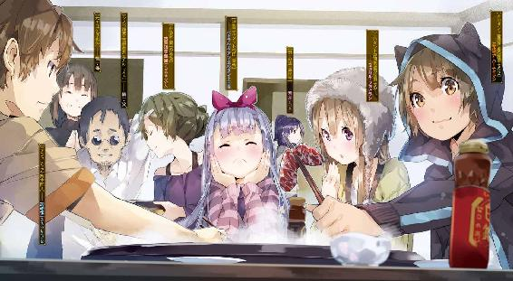

| アウトブレイク・カンパニー 萌える侵略者 09 | |
| 榊一郎 | |
| 講談社 (2014) | |

口絵・本文イラスト／ゆーげん
第一章 ライトなノベル
教室の中には──痛いくらいに張り詰めた空気が満ちていた。
交差する視線と視線。そこには明らかな敵意が満載されている。
もちろん、実際に睨み合っているのは、教室にいる生徒達の中でも一部──十名あまり、つまりこのクラスの半数にも満たない。しかしその十名あまりが背負っている気迫が尋常でないため、他の生徒達がひたすら圧倒されて吞まれているという状況だった。
眦をつり上げて。不退転の決意を示すかのように、身構えて。
彼らは教室の真ん中で対峙していた。その間に横たわる緊張感たるや──講師の立場にある僕ですらも、迂闊に割って入るのを躊躇われるほどだった。
他の生徒達はというと、遠巻きに彼らの様子を見守っている。
やはり、迂闊に接すれば自分達のところにまで飛び火しかねない──と理解しているのだろう。対岸の火事とばかりに傍観するのを許さない、この教室にいる限り無関係の第三者などとは決して認められない、そんなぎりぎりまで緊迫した雰囲気に、誰もが囚われていた。
そして......
「──もう一度言ってみなさいよ」
小柄な女子生徒の一人が、唸るような口調でそう言った。
もちろん──相手の台詞が聞こえなかったわけじゃないだろう。『もう一度、私の前でその戯けた台詞を口にできる勇気があるというのなら、やってみろ』という威嚇だ。
だが、たいていの場合......そう言われて相手が怯むようなら、こんな対立状況ができあがったりはしないわけで。『話せば分かる』なんていうけれど、交わされる言葉に緊張を緩和するような効能は、まったくなく......無力どころか、むしろ火に油を注ぐ方向に、よけいな力を発揮していた。
当然、相手は心底から馬鹿にしたかのような口調で、こう応じた。
「はっ──何度でも言ってやろう」
対する側の代表らしい男子生徒は──すらりとした長身瘦軀の彼は、先の小柄な女生徒を見下ろしながら言った。
「物事の表層的な部分しか見ない、底の浅い奴らには、ほとほと呆れ果てたね」
「何が表層的だってのよ」
「分からないんだろうな？ ああ、分からないんだろう」
男子生徒は得意げに言った。
「それがつまりは底の浅さだというのだ。与えられたものを、ただぼんやりと何をするでもなく受け止めるだけなど、家畜同然！」
「何が家畜よ！ そっちこそ気持ちの悪い妄想で悦に入って馬鹿なんじゃないの？」
「何が妄想か！ 想像の翼といえ、想像の翼と！ まったく、言葉選び一つとっても貴様らの底の浅さは見るに耐えないな」
「何が翼よ！ 自分に都合のいい妄想ばっかで！ 単に脳みその代わりに空気が詰まってるから、映像についていけないだけじゃないの？」
「誰が空気頭か！ この石頭め！」
............
『話せば分かる』ってのに対して『問答無用』って返したのって五・一五事件だっけ。
いやもう、本当にその通りだ。
首相を射殺しちゃった軍人の肩を持つわけじゃないけど──理由はどうあれやったことは間違いなくテロなわけで──問答は無用っていうか、むしろ、問答しちゃ駄目だって場合もある。こんなふうに、話したらよけいこじれてくる場合だ。
「あああああ......」
僕──加納慎一は想わず頭を抱えていた。
僕が立っている教壇の左右には、それぞれ一台ずつ、大型の液晶テレビが設置されている。
そしてそこには、さきほどまで再生されていたアニメーション作品のエンド・カードが──要するに『今週はこれにておしまい』＆『来週もまた見てね！』的なイラストが、画面に表示されたままになっていた。
『棄てられプリンセス』
小説──ライトノベルを原作にしたアニメ化作品だ。
そして事の発端は、このアニメだった。
「ああもう、よけいなオタク気質ばっかり広がっちゃって......」
アニメや漫画やゲームにハマる者を、世間的に『オタク』と言う。
これはもともと、そういうサブカルチャーの愛好家達が、相手に対して『君』でもなく『貴方』でもなく、どこかスカしたような表現として『おたく』と呼び掛けることが多いことからついた名前なのだけれど、まあ、それはさておき。
オタク──と一括りにしても、その内容は実にさまざまだ。
人間、三人集まれば派閥ができるなんて言うけれど──オタク達の間でも、意見や立場の差というものは当然に出てくる。そもそも作品についての感想なんてのは、数式とその答えみたいに『絶対的な正解』がないのだから、人によって違うのが当然だ。結局は、ただの好き嫌いの話になってくる。
たとえばある作品の愛好家にしても、主人公の視点で見るのか、ヒロインの視点で見るのか、あるいは敵の視点で見るのかによって、印象がずいぶんと変わる。
極端なことを言えば......物語なんてのは主人公にとって、ある程度都合よく流れるものなわけで。主人公側に感情移入して見ていると気にならないし気持ちよい展開に思えても、敵側に感情移入していたら、御都合主義満載の不自然なものに思えて気持ち悪い、なんてのは当然なのだ。
さらに......これが原作ありのアニメ作品、いわゆる『メディアミックス作品』となるとよけいにややこしい対立が生まれ得る。
たとえば、原作小説のファンと、アニメのファンと、さらには漫画版のファンと、自分のお気に入りこそが最高、それ以外は作品の足を引っ張るよけいなもの、的なことをそれぞれのファンが主張しちゃったりするわけだ。場合によっては同じアニメについて『一期』のファンと『二期』のファンとの間で対立が生まれたりもする。
まあ当たり前と言えば、当たり前だ。
同じ登場人物でも、人によって印象は異なる。
ならば何人もの登場人物が出てきて、複雑な人間模様と独特の状況が織りなす物語について、好悪の焦点が違う──場合によっては真逆になるのも、まあ、仕方のないことなわけで。
僕──加納慎一などは、それぞれ、好き勝手に作品を愉しめばいいじゃない、なんて軽く考えてしまうのだけど、作品への愛が深ければ深いほどに、『自分の愛こそ真実！』的な主張がつい出ちゃうというか、違う焦点の持ち主に対して、否定的な意見が出ちゃうこともままあるわけで。
つまり──
「とにかくこの『棄てられプリンセス』のアニメは傑作よ！」
とくだんの小柄な女生徒が、拳を握りしめながら改めてそう言った。
まあその行為自体は、別に珍しいものではない。オタクがお気に入りの作品を『傑作』だの『神回』だのと言葉を尽くして評価するのは、ごく普通の習性だ。むしろそれくらいに作品にのめりこんでこそのオタクだと僕は思う。
ただ......珍しいのは、そのオタク本人だった。
先に僕は小柄だとその女生徒を評したけれど、これはかなり控えめな表現。
彼女──ロミルダ・ガルドは、身長で言えば百三十センチもない。幼稚園児か小学校低学年かってくらいに背が低い。もちろん、これだけならば、やはり『珍しい』ってほどでもない。別に小学生のオタクがいたっていいだろう。
ただその耳が尖っていて、髪が赤毛──という以上に紅いとなると、また話が変わってくる。特に彼女の髪は独特......ルビーか何かの鉱物を糸状に加工したんじゃないかってくらいに、艶やかで、透明感があって、とにかく普通の人間にはあり得ない髪なのだった。もちろん、カラー・スプレーでどうにかなるような髪の色でもない。
そう。ロミルダはいわゆる『人間』──ホモ・サピエンスではない。
彼女だけではなく、彼女の左右に並んでその意見を支持している男子生徒達は、全員が横に張り出したような尖り耳を備えている。
しかも──
「そうだそうだ！」
「アルティたん最高！」
「メインヒロインなど飾りです！ 偉い人にはそれが以下略」
などと主張するその男子生徒達は、ロミルダ同様に背が低く──しかし、その顔と言えば髭だらけでやけに厳つい。三百六十度どこからどうみても、むさ苦しさ大爆発のおっさんだった。
正直、彼らが実は十代なのだと......大半が自分よりも歳下なのだと知ってはいても、ついつい忘れて敬語使ってしまいそうな雰囲気である。迂闊に声掛けたら『なんじゃ若造？』とか言われちゃいそうというか。
ドワーフ。
そう呼ばれる種族。西洋系ファンタジー作品なんかでは定番の存在、半妖精の亜人種。
人間とよく似た外見ながら、明らかに短軀で、その代わりに強い筋力と、土や鉱物に対する深い理解と、感性と、そして魔法の才能を持つという。
そう。対立する僕の生徒達の一方はドワーフ達なのだ。
そして......
「はっ──表面的な要素を映像化しただけのアニメを見て喜ぶ、にわか乙！」
ロミルダと真正面から睨み合う男子生徒がそう言った。
彼の名はロイク・スレイソン。
こちらは金髪碧眼で長身瘦軀、ロイクの左右に立つ男女も全員がモデルじみた体型で、顔も美形と呼ぶにふさわしい器量好しばかり。特に男性陣を比べた場合、涼しげに整った目鼻立ちと、繊細そうな白い肌は、見るからに頑強そうなドワーフ達とは真逆と言える。
ただしこちらもホモ・サピエンスじゃない。
その証拠にロイクも、その左右に並ぶ賛同者達の耳も、やっぱり揃いも揃って横に張り出して尖っている。長さや尖り方など、多少、形状は異なるけれど、普通の『人間』のそれとは明らかに違う耳、という点では同じだ。
エルフ。
西洋系ファンタジー作品ではドワーフと並んで有名な半妖精種族。森に住み、自然と調和し、風の魔法の制御に秀でるとされる彼らは、ドワーフに比べ、体力的には劣るが、その分、扱える魔力の量が凄まじく、総じて弓矢の名手なのだとか。
「なにがにわかよ！」
「にわかだからにわかと言ったまで！」
「アンタ達だってラル姉萌え～とか言ってるだけじゃん！」
「萌えは文化だッ！ ましてや、おっとりのんびり天然さん系の御姉様キャラは──」
......まあ要するに。
本来ならば、小説とか映画とか漫画とかアニメの中にしかいないはずの彼らが、事もあろうに、アニメの善し悪しを学校の教室で論争しているのである。
シュールだった。ものすごくシュールな光景だった。
ぶっちゃけ、僕はもう慣れたけどね。
ともあれ......
先にも言ったように、この『棄てられプリンセス』という作品は、もともとライトノベルが原作だ。その後、二度の漫画化を経てアニメ化されたわけなんだけど──もちろん、小説をそのまま過不足なく映像化するのは不可能なので、いろいろとアニメとしてのアレンジが入っている。表現媒体が違うのだから、これは仕方ない──というより、当然のことだ。
当然のことなのだけど......
「とにかく原作のラノベはもっと奥深いのだ！」
「原作のエピソードを三つも四つもはしょるから、ウイネアの心情変化がさっぱりわけが分からないじゃないか！ そもそも、この物語の主題はだな──」
とエルフ達はラノベの文庫本片手にそう力説していた。
どうやら彼らはアニメよりも原作推しらしい。
対してドワーフはアニメ推しらしいのだが。
「黙れ原作原理主義者め！」
「読むのめんどいじゃん」
「アニメの方が分かりやすいし」
ああ、駄目だ、そんな身も蓋もないことを言っては駄目だ......！
とはいえ、ある意味で本当のことでもあるので、僕としても彼らをたしなめるわけにもいかず。どうしたものかと頭を抱えていると──
「ドワーフの石ころが詰まっているような脳みそでは、ラノベの文体すら重荷か！」
「文字読んでりゃ偉いってもんじゃねえぞ、この野郎！」
「そうだそうだ、原作のどーでもいいよーなネタが整理されててアニメの方がむしろテーマは理解しやすいと思うぞ」
「それならコミカライズの方がいいんじゃね？」
「コミカライズ版はファファレたんが出ないから駄目！」
............
とかなんとか。
いい加減、オタク文化にも慣れてきた彼らに、メディアミックス──一つの原作をその表現方法を変えてさまざまなコンテンツ展開を見せる妙、つまりは一種の『お祭り』的な楽しさを知ってもらいたいと想って、あえて『棄てられプリンセス』の原作ラノベから、漫画、アニメまで、一通り見せてみたのだけれど。
だから、なんでいちいちそんなに優劣付けたがるの、君ら。
「......どっちがどうとかいいじゃん......どっちも面白いよ」
僕は、ただただ溜め息をつくしかない。
まあ、もともとエルフとドワーフは喧嘩するのが基本というか、永い種族同士の対立の歴史があるので、ささいなことでも衝突するのは、本当、今に始まったことではないみたいなのだけど。以前は、互いの種族としての『差』をネタに喧嘩していたのが、最近はそういう部分そっちのけで、キャラ談義やら作品談義で喧嘩することが多い。
これが良いことなのか悪いことなのか、僕としてもいまひとつ判断がつきにくいのだけど。
まあ、彼らが、互いの種族としての特徴をあげつらっての喧嘩は、あまりしなくなりつつある──僕の生徒達だけに限った話かもしれないけれど──のは、良いことかな、とも思ったりするのだった。人種差別で罵り合うより、アニメ版が至高かラノベ原作が最高かで怒鳴り合っている方が、まだ平和だと思う。たぶん。泥沼なのは変わらないけど。
で──
「──そういえば先生」
溜め息をつく僕のところに、エルフ＆ドワーフの飛び交う銃弾、もとい、罵詈雑言の下をくぐり抜けるような感じで、生徒の一人が近付いてきた。十代の少年としてはやや小柄で、見るからに繊細そうな金髪巻き毛が特徴の......実に可愛い感じの美少年である。ただしその耳は、僕と同じで尖ってはいない。
エドアルド・テオドロ・ペルティーニ。
この子は人間だ。
教室には人間の生徒も半数近くいるのだけれど、彼らはエルフとドワーフの口喧嘩には加わっていない。こちらの世界──神聖エルダント帝国では、人間が最上位種族という位置づけで、エルフもドワーフも自分達より下の身分なので、とりあえず『ゲセンの者の争いなど、自分達は関知しない』という立ち位置なのだろう。ただし実際には、いつキレたエルフとドワーフが魔法で喧嘩を始めるか分からないので、いつでも逃げたり魔法で防御したりできるように、全員こっそり身構えていたりするのだけど。
ともあれ......
「なに？ エドアルド」
僕は、とりあえず目の前の現実から眼を逸らしたくて、彼に応じた。
ちなみに、エドアルドは人間の生徒の中ではかなり濃い──というか優秀な生徒だ。
何しろ語学能力が飛び抜けていて、普通にもう日本語で読み書きが、しかも漢字仮名交じり文でやれる。たぶん、生徒達の中では最も日本語を理解しているだろう。彼の手でエルダントの言葉に翻訳されたラノベはすでに十冊以上だ。そろそろ彼自身がオリジナルのラノベを書き始めてもおかしかないと僕は睨んでいた。
「この後ろのページなんですが」
とエドアルドは手にした文庫本を示してきた。
さっきから論争のネタになっている『原作』──『棄てられプリンセス』のラノベだ。
「え？ ああ、広告ね」
とエドアルドの示したページを見ながら、僕は頷いた。
ラノベの文庫には、本文、あとがき、その後にさらに、ページ調整用の広告が入ることがしばしばある。
これはどういうことかというと......これはラノベに限らないらしいけど、本は一ページずつ印刷して製本してるわけじゃなくて、だいたいは、大きな紙に複数ページを一気に印刷し、これを断裁して製本しているのだ。
こうするのがいちばん、効率が良いんだとか。
たとえば文庫ってのは基本Ａ６という規格の大きさで、これはよく見かけるＡ４規格という大きさの、縦横二分の一、つまり面積では四分の一だ。
これがＡ全と呼ばれるような大きな紙と比べると、実に三十二分の一。つまり、表裏合わせてそのさらに倍──１ページから64ページまでを一枚の紙で刷って、後からこれを断裁して、本にまとめちゃうのだ。
つまり２５６ページの本があったとすると、元々は四枚の大きな紙の表裏に刷ったものを、三十二等分して作り出していることになる。
だからどうしても文庫の総ページ数は、２５６とか、３２０とか、そういう数字になりやすい。まあ、ラノベの場合、口絵や挿絵を別に刷って製本することもあるので、多少、ページ数が前後することはあるのだけれど。
でも......中身のページ数が必ずしもそういう『印刷工程的に』きりの良い数字になるとは限らない。
時には、きれいに収まりきらず──たとえば文庫の総ページ数（扉、目次なども含めて）が２５７ページだった場合、最後はでかいＡ全の紙の片隅に１ページしか印刷していない、なんてことになる──63ページ分の『あまり』が生じてしまうこともあるわけだ。
これを文字通りの余白としてただ遊ばせておくのももったいないからってことで、しばしば、編集部はそこに同じレーベルの他の作品についての宣伝を入れたりする。
まあそんな出版事情はともかく。
エドアルドが見せてきたそのページにも......くだんのアニメ化ラノベとは別の作品が掲載されている。
『担姫のアンジェリカ 著：菅野省吾 挿絵：やきにくＢＵＬ』
............
「この本、読んでみたいんです。まだ輸入されてませんよね？ 次の輸入一覧に入れてもらうことってできませんか？」
「あー。そうか。それね」
と僕は──曖昧な表情になっちゃうのを止められず、適当に頷いた。
だがエドアルドは、僕が少しいつもと違う反応をしているのに気付いたようで......首を傾げてこう問うてきた。
「どうかしたんですか、先生？ ひょっとしてこの作品はお嫌いなんですか？」
「ああ、いや、別に」
と僕は苦笑して首を振った。
「そんなに読みたい？」
「はい！」
とエドアルドは表情を輝かせて頷いてくる。
うーん。
微妙に、もにょもにょする気持ちを持て余しつつ......しかしエドアルドには悪気なんかこれっぽっちもないだろうから、僕としても却下はしにくい。まあ、この作品も売れてアニメ化するみたいだし、オタク作品群の一部としてエルダントに輸入するのは、やぶさかではない──ないんだけど。
「......考えておくよ」
僕は笑顔を取り繕ってそう答える。
そして──
「馬鹿な！ 原作のエピソードではパシフィエは血の繫がらない兄にラブラブで」
「なんでもかんでもハーレムにすりゃいいってもんでもねえだろ！」
............エルフとドワーフの無駄に熱い言い争いは、やっぱりまだ続いていた。

それがいつから存在していたのかは、誰も、知らない。
富士の樹海の中に存在する超時空的な──穴。
その穴を介して二十一世紀の日本と、そして異世界は繫がってしまった。それも、中世西欧のような雰囲気の、しかし、当然のように亜人種が人間と共に暮らし、魔法が社会を支える技術として定着しているような、『物語』の中のような、世界と。
その穴の繫がる先、そこに存在する神聖エルダント帝国。
日本はこの異世界の国家と、国交を持ちたいと考えた。
穴は小さすぎて行き来にも制限がつきまとうが、この、法律も、経済も、物理法則すらも、何もかもが異質な──文字通りに異世界からもたらされるさまざまな可能性は、確実に日本の経済を潤し、ひいては日本という国家の国力増強に役立つと考えられたからだ。
だが、繰り返すけれど、そこは、異世界。
違う歴史と違う文化が、違う価値観を醸成する世界だ。
だからこそ、魔法による意思疎通は比較的簡単に済んだ一方で、日本は神聖エルダント帝国と『仲良く』なる方法を、なかなか見いだせずにいた。
そんな中、外交手段の一つとして白羽の矢が立てられ、期待されたのが、俗に言う『クールジャパン』、オタク文化と言われる、漫画やアニメやゲームといったもろもろのサブカルチャーだった。
もともと、海外に輸出され、人気を博していたそれらは、この異世界──神聖エルダント帝国においても、比較的、受け入れられやすいようだった。試験的に持ち込まれたそれらの作品は、準戦争状態にあり、娯楽文化で遅れていた──それらを自ら育てる余裕のなかったこの国に、歓迎されたのだ。
日本政府はこのオタク文化を国交の軸に据えて、神聖エルダント帝国と付き合っていくことを決めたのである。
そのうえで、日本政府は、神聖エルダント帝国との共同出資で、異世界初の総合エンタメ商社、〈アミュテック〉社を創り上げ──その総支配人に、日本のオタクを一人、誘拐同然に連れてきて据えた。
それが僕、加納慎一だった。
スマートフォンの液晶画面の上で、僕は人差し指を滑らせる。
「んー......」
僕の指の動きに反応したタッチパネルは、次々と新しい写真を表示していく。
だがやはり小さな画面では確認するのもいろいろ面倒なので、後できちんとパソコンに接続して、データを取り込んだ方が良いだろう。
「そういえば、こっちに来てから全然バックアップとかとってなかったしなあ」
柔らかな椅子に身体を沈めながら、僕はそう呟いた。
こちらの世界には、当たり前だけど、携帯の基地局はない。だからスマートフォンも、小型の電子端末、あるいはデジカメとして使うというのが基本になっていた。
「ネットのあるなしは、やっぱでかいよな」
ノートパソコンの電源を入れて立ち上がるのを待ちながら──僕は改めてスマートフォンの中に記録されたデータを流し見してゆく。
大半はこの異世界、神聖エルダント帝国に来てから撮ったものだ。
なので、人間以外にも、エルフとかドワーフとかウェアウルフとかリザードマンとかドラゴンとか......何も知らない日本人が見たらコスプレか特撮にしか見えないような写真が何枚も記録されている。
「デジタルだからフォトショとかでわりと楽に加工もできるしねえ」
などと呟く僕。
「日本の皆にこれを見せても、たぶん、信じてもらえないんだろうし」
だからこれは僕の『思い出の記録』でしかない。
過去に、エルダントで撮影した映像が流出しちゃった事件があったりしたけども──良くも悪くもデジタルの映像加工技術が発達した現代、『本物』と『偽物』の区別がつきにくい。
手軽に『存在しないはずのもの』を本当に存在するかのように描き出せてしまうから、『本物』と『偽物』との境界も曖昧になってきているのかな、とも思ったりする。たいていの人間にとっては、手に入る情報のほとんどは二次情報で──自分の五感で体験できる一次情報など限られてくる。
たとえばＵＦＯを捉えた写真だって、それっぽく偽造できちゃううえ、それが本物か偽物かなんて素人には分析する手段もない。研究家や学者が『本物です』と証言したって、その発言自体が雑誌やらネットを経由している以上、加工されている可能性がある。だから結局は、自分が本物だと信じたいものや信じやすいものを信じるしかないわけで......
そんなことを僕がつらつらと考えていると。
「──旦那様」
扉の向こう側から鈴を転がすような声がする。
飽きるほどに聞き慣れた声のはずなんだけど、彼女に呼ばれるとこう──やっぱりそれだけで萌えちゃう僕がいたりする。僕はわりと声優さん方面には詳しくないのだけれど、『声に萌える』ってのはこういうことなんだなあと、こっちに来てから思った。
「お茶をお持ちしました」
「あ、うん、入って」
僕はスマートフォンを執務机の上に置きながらそう答えた。
「失礼します」
そう言って扉を開き、入ってきたのは──一人のメイドさんだった。
長い亜麻色の髪を頭の左右で括り、ヘッドドレス、つまりフリルのついた髪留めをしているのが何よりの証拠。もちろん、同じくフリル付きのエプロンに、少し丈の短めなワンピースと、服の方もやはりメイドさんそのものだ。
はっきり言って、その衣装を着た女の子、というだけでご飯三杯はいける僕だけど、この子の場合は顔立ちも可憐でとても愛らしい。綺麗に整ったその顔にはまる二つの瞳は、大きく円らで、薄紫色の宝石を想わせる。
ミュセル・フォアラン。
僕の住むこの屋敷──総合商社〈アミュテック〉に配されているメイドさんだ。つまりはこの〈アミュテック〉の総支配人たる僕についてくれているメイドさん、と言っても過言ではないわけで。だから彼女は僕のことを旦那様と呼んでくれる。
もっとも二人だけで、他に人がいないときには『シンイチ様』と呼んでくれたりすることも多くて、これがまたこう......上目遣いで言われたりなんかすると、身もだえするほどに可愛いんだけど、それはさておき。
「あれ？ 今日はちょっとお茶の葉違う？」
僕はミュセルの押すワゴンから漂う匂いが、いつもと違うことに気付いた。
「今日はブルークさん達のお土産の葉で入れてみました」
「ああ、そっか」
ブルークというのは、うちの屋敷の庭師で──リザードマンだ。
彼はもう一人のメイドさん、同じくリザードマンのシェリスと夫婦である。
二人は先日、リザードマン達の族長会議だかなんだかの関係で、しばらく里帰りしていた。そしてこちらに戻ってきた際に、地元のお茶の葉を買ってきてくれたのだ。『あっしらにはお茶の善し悪しはわかりやせんので、不味かったらご勘弁くださいやし』なんてブルークは言っていたけれど、今、匂いをかいでいる限りじゃ悪くないと想う。
「どうぞ──シンイチ様」
「ありがとう」
僕はミュセルが淹れてくれたお茶のカップを受け取る。
「......あ」
ふとミュセルが──何か気付いた様子で声を漏らした。
「どうしたの？」
「私──です」
と彼女がその白い指で示すのは、机の上のスマートフォンだった。
正確にはその液晶画面。そこに映し出された一枚の写真。
そこには、ミュセルの姿があった。
こちらに来たばかりの頃、彼女の姿がとても珍しくて感動的で、ついつい何枚も写真に撮っちゃったのだ。
ミュセルは、ハーフエルフである。
だから、普段は隠していることも多いけど、その耳は、ロミルダやロイクと同様、少し尖っている。それこそ漫画やアニメの中から飛び出してきたかのような形状だ。
まあ、彼女の場合は耳とかなくても、充分、人目をひく美少女なんだけどね。
神聖エルダント帝国においては、人間至上主義が基本で、エルフやドワーフはその下、『混じり者』とされるハーフエルフや、人間とは基本の生態から違いすぎるリザードマンなんかはさらにその下に置かれてしまう。
だからミュセルも当初、この耳を隠そうとしていた。
性格的にあまり合わなかったという軍隊を退役──市民権を得たうえで、苦労して摑んだ仕事を、しかし『ハーフエルフだから』という、彼女にはどうにもならない理由で解雇されちゃう可能性も、あったからである。
だけど僕は逆だった。
僕としては、彼女のその耳があったことで、親しくなりやすかったというか──幼馴染みの女の子に振られたことで自宅警備員となっていた当時の僕は、むしろ『漫画やアニメから抜け出てきたかのような』非現実的とも言えるエルフっぽい尖り耳やメイド服のおかげで、ミュセルと積極的に喋ることができたような部分がある。それらのおよそ『非現実的』な部分──『物語』っぽい部分が、自分を傷つける容赦ない『現実』とは『違う』ということの証のように見えたのだ。
ともあれ......
「前に見せたでしょ。写真」
とスマートフォンを僕はミュセルに示して見せた。
「僕のコレは何百枚と写真が撮れるからね」
「すごいです」
素直にミュセルは、元から円らなその眼を、もっと丸くして感心してくれる。
そんなわけで、僕はついつい、調子に乗っていろいろとスマホの画面に指を走らせて、次から次へと彼女に写真を見せていった。
「ブルークとかエルビアの写真もあるよ」
「一瞬でこんな緻密な絵が描ける魔法なのですね......」
「まあ魔法じゃないけどね」
と苦笑する僕。
そういう品がある──ということはミュセルも理解してずいぶんになる。けれどまだ、科学とその成果物については、動作原理も含めていまひとつ分かっていないので、彼女にしてみれば不思議なことは結局、全部『魔法』なのである。『発達しすぎた科学は魔法と区別がつかない』っていうＳＦなんかじゃお馴染みのアレだ。僕達にとっては当たり前のものでも、基本が西欧中世的な文化水準である神聖エルダント帝国では、電子機器なんて、その『発達しすぎた』科学そのものだろう。
そして──
「......これは？」
とミュセルに問われ、改めて僕はスマートフォンに視線を落とす。
ありゃ。どうやら少し考え事をしながら指を走らせていたせいで、ミュセルに見せる気もなかった旧い写真まで表示しちゃったらしい。
液晶画面には、ずいぶんと以前の──スマートフォンを買ったばかりの頃に撮った写真が表示されていた。パソコンに取り込んだ後で、スマートフォン内部のデータを消しておくのを忘れていたみたい。
写っているのは、人間ばかり。
それも当然、撮影したのは日本で──時期的には僕が幼馴染みの女の子に振られる直前、引きこもる前に撮ったものだ。
「ああ、僕の両親と、それから、妹だよ」
それは集合写真、みたいな綺麗なものじゃなくて、僕がたまたま、朝食のときに──家族が全員、同じ部屋に集まっているときに撮った一コマだ。撮影者は僕なので、当然、そこに僕の姿はない。
ラノベ作家の父と。
元ゲームの原画師で今は専業主婦の母と。
そして、二つ歳下の妹の──紫月と。
「この方達が、シンイチ様のご家族......」
ミュセルが、何やら感慨深そうな感じで写真を見つめている。
「お母様に、お父様なのですね。こちらが──妹様ですか？」
「そう。あんまり兄妹仲は良くなかったけどさ」
紫月はオタクの僕を毛嫌いしていたし、兄妹の会話なんてもう何年もなかったけれど。この写真を撮ったときも、咄嗟のことで驚いた表情を浮かべているけど、その後は肖像権がどうのと猛烈な勢いで僕を罵ってきたし。僕が引きこもってからはよけいに接点も少なくなって、日常会話すらしなくなった感じだ。
「この方達の元でシンイチ様はお育ちになったのですね」
「まあ、僕の製造元って意味では、本当、その通りだね」
父も母もまあ、職業柄、オタクだし。
僕がオタクになったのも、家に山ほど、漫画やらアニメやらゲームやらが積まれていたからだ。
今時のオタクとしてはわりと、古めのネタにも僕が詳しいのは、父や母の蔵書やコレクションを見てきたからである。何しろえり好みしなければ漫画もアニメもゲームもわざわざ買ってくるまでもないわけで、僕は浴びるようにその手のものを摂取し続けた。
逆に両親や僕がそうだったからこそ、反動のようにオタク嫌いになったのが紫月だ。
「正直、こんな写真がスマホの中に残ってるとは思ってなくて──」
僕はなんだか気恥ずかしい気持ちになり、指を走らせてその『家族写真』を画面の外へと押し出してやる。すると自動的に次の──さらにそれ以前に撮った写真が出てくることになるわけで。
「──うあ」
思わず変な声が出た。
嗚呼。消してなかったか、これも。
「......こちらの方は？」
ミュセルが首を傾げてそう問うてくる。
いったいどう答えたものか。
僕は数秒、悩んでから──正直に答えることにした。
「あー......」
決まり悪さに耐えかねて頰を搔きながら、僕は言った。
「初恋の人、になるのかなー」
幼馴染みの女の子。
家が近かったこともあり、ずっと何年も一緒に育ってきた。
幼稚園も小学校も中学校も一緒。家がすぐ側なのだから一緒に登下校することも多かったし、前述の通りうちには山ほど、漫画やら何やらがあったから、彼女がうちに遊びに来ることも少なくなかった。
少なくとも友達だった。それは間違いない。
彼女は僕をオタクだからと馬鹿にしたりはしなかったし。けれどそれはあくまで友達としてであって、彼氏としてとなると話は別──ということだったようだ。
結果、そういう部分を勘違いした僕は、放課後、夕暮れの色に染まる校舎裏というベタな状況下、告白をして、玉砕したわけである。彼女は僕を『オタクだから』という理由で却下した。本人に悪意はなかったのかもしれないが......おかげで僕は不登校になった。
嗚呼......自分の勘違いを思い出すだけで胸が痛いというか、穴があったらジャンピング土下座しつつ入りたい気分だ。
彼女を憎んだり恨んだりする気持ちは、もうない。
オタクの何が悪いんだよ、とは今でも思うが、それこそ趣味嗜好の問題だろう。終わりよければすべて良し、なんて言うけど──彼女が僕を振ってくれたことによって、僕は巡り巡ってこの神聖エルダント帝国にやってくることができたわけだし。
こんなに可愛いメイドさんにも会えた。
しかし......
「シンイチ様の......！」
ミュセルは何やら驚いた様子で、その薄紫の眼を丸くして──スマホの画面に見入っている。
「......？」
一瞬、彼女の反応の意味が分からなくて、僕は首を傾げてしまった。
ミュセルは、何やら不安げというか、哀しげというか、とにかくこう──表情を曇らせる感じで僕を振り返ると、こう問うてきた。
「で、では、お国にこの方を残してこちらに......？」
「え？ いや──」
ああ......そうか。
僕はそこでようやく合点がいった。
僕達が『初恋の人』という言葉を使う場合、たいていは、過去の『実らなかった恋』であるという前提で用いる。『初めての恋』という表現を使うということは、二番目、三番目の恋があるのが前提なわけで。
だけど僕達の意思疎通に使われる魔法具──僕達が指に塡めている魔章指輪は、時折、双方の知識や経験の差から、細かい意味を伝え切れていないことがある。
要するに『加納慎一が初めて好きになった人』という以上の意味が含まれていないので、ミュセルはどうやら僕と彼女が付き合っていて、僕は彼女を日本に残したまま、神聖エルダント帝国に来ているのだ、と勘違いしたみたいだった。
「さぞや......お辛い想いを......」
と僕を気遣うような表情でこちらを見つめてくるミュセル。
僕は──わけもなく焦った。
もちろん、そんな経験なんか僕にはないけど......たぶん、妻に浮気がばれた夫とか、そんな人達の感じるうしろめたさって、きっとこんな感じなんだろうなあ、的な。どうしてそんな気持ちになってるのかはよく分からないけど、とにかく僕は慌てて弁明した。
「いやいやいやいや！ 違うから！」
「......え？」
「僕がその、一時的に、一方的に、好きになってただけで、結局、振られちゃったんだよ。僕がオタクだから」
「オタクだから......？」
わけが分からない、といった様子でミュセルは首を傾げる。
そう。これも神聖エルダント帝国ならではの反応だった。
こちら側では、オタクという言葉は蔑称としての意味を含まない。むしろ僕なんかは『若くしてニッポン国の創作芸能に精通した権威であり専門家』として見られているらしいのだ。だから、ミュセルには『オタクだから女の子に振られました』って話がよく分からないのだろう。
「それは、ひょっとして、シンイチ様がオタクとしてのご研鑽を積まれるのに、邪魔にならないよう、身を引かれた──のですか？」
何故か、こわごわといった口調と表情でミュセルがそう尋ねてくる。
「ないない。それはない」
どんだけ僕に都合のいい解釈だよ。
まあ、ミュセルらしいっちゃらしいけど。
「まあ、その、僕らの国じゃね、オタクを嫌ったり蔑んだりする人達もいるんだ」
僕は溜め息を一つついてからそう説明した。
「ほら、前に、ミュセルを詰っていたペトラルカに僕が『決めつけで罵られたことがある』って言ったことあるでしょ」
「あ、はい」
「オタクはなんていうか、気持ち悪いとか、醜いとか、そういうふうに言っちゃう人達もいるんだよ。僕達の世界にはね」
「そ......そうなのですか？」
半ば呆然とした様子でミュセルが言う。
ああ、言っちゃった。
ミュセルを含め、この世界の人達はオタク文化というものをものすごく評価してくれているんだけど......それが『本場』である日本ではどういう扱いを受けているか知ったら、また僕やオタク文化に対する認識が変わっちゃうんじゃないか──そんな恐れが実は、僕の頭の片隅にはあった。
しかし──
「こんなに......なんていうか......素敵ですのに......」
と不思議そうにミュセルは言う。
素敵？ あ──ああ、オタク文化のことね。
ともあれ、ミュセルとしては、日本でオタクやオタク文化を馬鹿にする人達がいるという事実を聞いても、それで失望したりすることはないみたいだった。
それはつまり、彼女は彼女なりにオタク文化を自分の中で理解して評価してくれているということだ。『●●は世間の評判がいいから自分も無条件に褒め称える』とか......僕も含めて日本人はつい、周囲の相対的な評価を優先して自分の中の感性を無視しちゃうような傾向があるけれど、それじゃ駄目だ──駄目だと思う。流行に乗ることはできても、本当に、物語とか作品を楽しめないと思う。
そしてそれは......とても文化侵略されやすい土壌だと思うのだ。
とにかく良かった。
もちろん、ミュセル以外の人達が彼女と同じように理解してくれているかどうかは分からないのだけれど......僕にとってミュセルは初めて出会った異世界人なので、何を考えるにしても、彼女が一つの基準になっているのだ。
「ですがシンイチ様」
ミュセルは、改めてスマートフォンの画面を見つめて言った。
「でも、今もシャシンを持ち歩いておられるということは......」
何かに怯えるかのように、上目遣いに僕の方を見つめてくるミュセル。
なにその絶妙の角度。やたら可愛いんですけど！
技か？ 技なのか？ 俯き加減、視線の角度一つでこんなにも僕を萌えさせるなんて、ミュセル──恐ろしい子......！ などと僕が勝手に戦慄していると。
「その、ひょっとして、シンイチ様は、今でもこのお方を......？」
などとミュセルは言い出した。
「ない！ まったくない！」
僕はぶんぶんと唸る勢いで首を振った。
なんでそうなる!? だいたい、写真っていうなら、僕のスマホの中に入っている写真の大半はこちらに来てからのもので、その中でも最も数が多いのは、間違いなくミュセルだ。何せ彼女の写真は多すぎて、そのままだと他の写真が埋もれちゃうため、『ミュセル』フォルダ作ってそこに入れてあるくらいだから、間違いない。
「これ以上ないってくらいにはっきり振られてるし。写真があるのも、整理するの忘れてただけだよ。本当にそれだけ！ というか今の今まで忘れてたくらい！」
「そ......そう、ですか」
何やらほっとした様子で、メイド服の胸元を手で押さえながらミュセルが微笑む。
そんな彼女を見て──僕も安堵の溜め息をついた。
日本と神聖エルダント帝国は『超空間通路』で繫がっている。
本来ならば三次元空間的に存在するはずのない世界と、地続きになっているのだ。
当然、何か超常的な力が働いているのは間違いない。それがどういう力なのか、そもそもこの超空間通路が存在する原理はどういうものなのか、日本でも研究をしているらしいけど、最重要機密ってことで、大掛かりな機材や大量の人員を使って調べるわけにもいかず、遅々として進んでいないんだとか。
で──その超空間通路の、超空間通路たる所以の一つに、雑音信号の問題がある。
超空間通路がある種の電磁波を帯びているのか、あるいはもっと別の理由からか、普通に、電波を飛ばした程度では、通信ができないのだ。次に自衛隊は一般的な通信ケーブルを敷設して通信を試みたけど、これもやたらに雑音信号が混じってきて上手くいかない。特にデジタル信号への干渉がひどい。
結局、海底に敷設するインターネット用回線のような、ごっつい遮蔽シールドで何重にもくるんだ通信ケーブルを敷いたうえで、アナログ信号でやりとりするという、最先端技術なんだか枯れた技術なんだかよく分からないことになっている。
これでようやく普通の音声や、画像がやりとりできるという状態である。
だもんで──エルダント側でインターネット・ブラウジングなんてのは夢のまた夢。
まあ、これは日本側の思惑も絡んでいるのではないか、とか僕は少し疑っている。
日本側があまり積極的に試行錯誤して通信事情を改善しないのは、僕なり、エルダント側の人間なりがネットを介して日本やその周辺諸国の事情について詳しくなってしまうと、外交戦略上まずいと考えているからではないか──と。
要するに日本側は、エルダントに対して情報統制をしたいと思っているのじゃないか、と僕は疑っているのだ。
極端な話、神聖エルダント帝国がアメリカや中国、ロシアといった、日本よりも遥かに大きな国の存在を知って、むしろ日本なんかよりそちらと国交を樹立した方が得なのではないか？ なんて考え始めると、今までの苦労が水の泡になっちゃうからである。
また、同時に僕がネットにパソコンを繫いでいろいろしていると、それだけで情報流出の危険も上昇する。ネットには今や、リンクを踏むだけでパソコンから一切合切のデータを抜き取って放流しちゃうような危ないサイトもあったりするわけで、いくらファイアウォールだ、アンチウイルスだ、と対策してもイタチごっこで、情報流出の危険は常にある。
日本政府が、異世界にネットを繫がないのは、この辺の事情もあるのではないか、と僕は考えていた。
ともあれ。
オタク文化におけるインターネットの存在は無視できない。
最新情報を手に入れるためにも、大きな流行を見逃さないためにも、幾つかのサイトや掲示板を定期巡回する必要が出てくる。
ではどうするか。
僕は、幾つかのサイトや掲示板を指定して、これを丸ごとハードディスクに記録してもらい、そのハードディスクをこちらに週一で運んでもらう、ということでネットワーク事情に対応していた。
まあ、つまりは文字通りに周回遅れのネットだ。
いわゆる『祭り』──炎上を含めて──には参加できなくなるけれど、これは仕方ない。
そう僕は割り切っていた。
しかし......
「──え？」
僕はパソコンのディスプレイの前で思わず声を漏らしていた。
すでにお茶を持ってきてくれたミュセルは部屋を出て行った後、寝る前に一通りの情報チェック作業をしていたときのことである。
『菅野省吾新作・「担姫のアンジェリカ」九巻は延期』
『刊行時期は不明』
『著者緊急入院』
とある出版社のサイト。画面上にはそんな一文が記されていた。
さらに詳しく読んでいくと、くだんの『担姫のアンジェリカ』が刊行直前に、著者である菅野省吾が入院してしまい、本の発売が無期延期になったとのこと。
「マジか......!?」
通常、単に締め切り破って原稿を落としたとか、その程度のことならば翌月とか翌々月辺りに刊行が順延されるだけで、『無期延期』なんてことを出版社側が書いたりしない。そんなことをすると『このシリーズはもう続きが出ないのか』と読者に思われて、本の売り上げが落ちちゃうからだ。
少なくとも父はそう言っていた。
むしろ普段はあまり著者の個人的事情を表に出さない出版社が『緊急入院』なんて言葉を使っているということは、『ちゃんと続きを出すつもりはあります、不可抗力なんです！』と対外的に主張するためのものだろう。
つまり......
「本当に入院？ でも無期延期ってことは──」
退院時期が読めないってことで。
つまりは結石だの盲腸だので短い期間入院するってのとは違うはず。
「............いや、でも、まさか」
勝手に膨れあがる不吉な想像に、僕は顔をしかめた。
翌朝──朝食の時間。
僕達はいつものように、食堂に揃って、ミュセル達の用意してくれた朝ご飯を食べていた。
僕が総支配人を務める、異世界初の総合エンタメ商社〈アミュテック〉の、朝食風景というのは、この神聖エルダント帝国でもきわめて珍しいものだろう。
僕は、こちらでは貴族に準じた扱いを受ける国賓だ。
そういう『身分の高い』人は、普通、下々の者と一緒に食事は摂らない。だけどもともとは庶民の小倅でしかない僕は、壁際にメイドさん達を立たせたまま、自分だけ美味しく食事するとか──どうにも落ち着かなくて辛いのだ。なので、この屋敷では、基本的に身分の区別なく同じ長卓について、全員で食事を摂る。
まあ、皆で食べた方が美味しいしね。
引きこもりが長くて、一人でご飯を食べることが多かった僕は、なおさらにそう思う。
しかし......
「あの......旦那様......？」
僕の向かいに座っていたミュセルが、おずおずとした口調で声を掛けてきた。
「え？ あ、はい。何？」
慌てて僕は意識を目の前の彼女に戻して言った。
「どうかした？」
「いえ、その、なんだか......お加減が優れないみたいに......思えましたので......」
不安げな──いや、心配してくれているのだろう──とにかくそういう表情で僕の顔を覗き込みながら、ミュセルがそんなことを言ってくる。
あー......昨日、あんまり寝てないからな......
僕は曖昧な笑顔を取り繕うと、ごまかしにかかった。
「ああ、ちょっと夜更かしがね、過ぎてね、眠いんだ」
「そうなのですか......？」
「シンイチ様は寝不足っすか？」
と問うてくるのは、僕の斜め前に座っている、獣っ娘だった。
エルビア・ハーナイマン。
ウェアウルフ、つまり獣人の一種に属する女の子で──もともとは隣国バハイラム王国の密偵だった。僕達の屋敷を偵察に来たところを見つかって捕まったんだけど、絵が上手いってことで、僕がお抱え絵師として使うと神聖エルダント帝国に話をつけて、結果、うちに住み込むことになった。
朗らかで、元気で、そのうえ、耳と尻尾が柔らかな毛に覆われていて実にもふもふ、さらには普段着からおへそ丸出しで胸もでかいという、ミュセルとは別の意味で反則に近いような萌えキャラ──もとい娘である。
しかも顔立ちも可愛らしいし、彼女が笑うと本当にこっちまで引き込まれるような感じがする。まあちょっとお馬鹿なうえに、本能によって行動しちゃう部分がけっこうあるので、何かと、揉め事の元になったりもするけど、憎めない獣っ娘なのだった。
「アタシと一緒っすね」
「え？ そうなの？」
ぱっと見そうは見えないというか、むしろ、今朝のエルビアは精気が漲っているような感じがするんだけども。というか若干頰は紅いみたいだし、呼吸も速くない？
「や、その、昨日からまた『アレ』が始まってて」
「............あ、アレ」
と僕は若干、身構えながら言った。
エルビアの言う『アレ』というのは、いわゆる『女の子の日』──では、なくて。
獣人種族特有の、定期的な『発情期』だ。
要するにムラムラしちゃうということらしい。特にエルビアはわりと最近になってそれが始まったらしくて、自分でもこれを上手く発散・抑制できないことがままあった。実際、僕も前に一度、押し倒されて襲われた（性的な意味で）ことがある。そのときにはまあ、いろいろあって未遂に終わったけれども。
「絵を描いたり、まあ、いろいろ発散してたんすけどね。やっぱりこう、眠れなくって」
「あー......まあねえ」
と僕は頷く。
興奮して眠れないってのはよくある話だ。しかもエルビア達のような獣人はもともと体力が有り余っているので、悶々としているだけで疲れてそのまま眠りに落ちる、ってのも少ないらしい。本当に発散先が必要なのだ。
「ああ、昨日の夜中に、警報装置に引っかかってたわね」
と呆れた様子で言うのは、僕の隣に座っている女性だった。
古賀沼美埜里さん。
女性自衛官で、僕の護衛役を務めてくれているお姉さんである。
眼鏡美人なうえに巨乳に格闘娘という、これまたけしからん感じの属性持ちというか、萌え要素多重投与のような女性だ。
ただ──困ったことに、中身が、いい感じに腐っている。
要するに『腐女子』......いわゆるボーイズラブもの、男性同士のアレなナニの作品をこよなく愛する、まあ、この人もオタクの一種だった。
「ものすごい勢いで屋敷の周りを走り回ってる何か──って反応が出たから、何事かと思ったよ。カメラ見たらエルビアだって分かったから、そのまままた寝たけど」
と美埜里さん。
この屋敷は〈アミュテック〉社の社屋でもあるので、自衛隊謹製の警戒警備システムがさりげなく周囲に設置されている。そして僕の護衛役である美埜里さんは、手元のスマートフォンでこれを統括制御できるのだ。
「ウェアウルフは面倒だな」
「大変ですね」
と評するのは──同じ獣人に属するけど、まったく見た目も生態も違う、リザードマンの夫婦だ。
ブルーク・ダーウェンとシェリス・ダーウェン。
ブルークはこの屋敷で庭師を、シェリスはミュセルと共にメイドをしてくれている。
前述の通り、彼らは見た目からしてもう、僕らとは全然違う。
二足歩行して手を使う、という点が同じ、というくらいで──外見的には直立歩行するでっかい蜥蜴、という印象が強い。昔、暗がりでブルークと出会したときに、思わず怖くて殴りかかっちゃったことがあるけど、今でも僕は彼と夜の廊下とかで出会ったら、腰を抜かしてしまう自信がある。自信があってどうする、とか思わず自分に突っ込んでおくけれど、まあそれはさておき。
この二人、見た目は何かと怖いんだけど、ブルークは真面目で責任感の強い、いい男だし、シェリスも真面目でよく働いてくれるのは同じ。彼女はリザードマン達の中ではかなりいいところの出らしくて、どこかお嬢様っぽく抜けてるようなこともたまにあるけど、目くじら立てて問題視するほどじゃない。
一時期、別居状態というか、いろいろあって離婚直前みたいな状態だった二人だけれど、これも、もろもろあって今は非常に仲睦まじい。見た目が違いすぎるので、目の前で仲良くされてても、あんまり気にならないのがありがたかった。
「そういえばブルーク達はそういうのないの？」
「ありやすよ。ただしあっしらは変温なんで」
とブルークは言った。
「春先から夏場までと決まっておりやしてね」
「あ、そうなのか」
定期的と言っても毎月という短い周期ではない、ということらしい。
まあ確かに新陳代謝の速度が気温に直結しているかのように影響を受ける彼らは、冬場に繁殖とかするのは──単にえっちなことするのも、その後、卵を産むこともだ──さすがにきついのだろう。
「そういえば旦那様。その、そのうち......改めて、お願いにあがることがあるかもしれやせん」
「え？ な、なに？ 改まって」
ブルークがこんなことを言うのも珍しい。
隣ではシェリスもナニやら頷いている。
「ご存じの通り......あっしらは、以前、卵を失っておりやす。それが原因でまあ、その、気まずくなっていた時期がありやしたが」
「うん」
兵役に就いていたブルークは、シェリスの側にいて彼女と卵を守ることができず、結果として二人の子供──子供になるべきだった卵は、割れて、失われてしまったのだとか。
「今度は、側にいて、守ってやりてえんでさ。なんで、その」
ブルークは鋭い鉤爪のついている指で鼻先を搔きながら言った。
「そのうち、嫁が卵を産むこともあるかと思いやすが、その際には、生まれてくる子も含めて、こちらに住むお許しがいただけたら──と」
「ああ、それはもちろん」
と僕は即答した。
「家族は、一緒に暮らすべきだろうし......ね」
一年も引きこもって家族とろくに顔を合わせなかったうえに、今は異世界に来ちゃってる僕が言えた義理でもないのかもしれないけど、まあ、これは一般論だろう。それがリザードマンであったとしても。
「............」
ブルークとシェリスが顔を見合わせる。
「何？ どうしたの？」
「あ......いえ」
シェリスが首を傾げて言った。
リザードマンは表情が読みにくいけど、まあ、これは微笑しているんだろうな、ということが分かるくらいには、僕も彼らになれてきた。
「こんなに簡単にお許しがいただけるとは──思っておりませんでしたもので」
「簡単も何も......あ、でも、この屋敷そのものは、形式としてはエルダント帝国所有だから、ペトラルカにもお伺い立てないと駄目なのかな？」
「それは大丈夫だと思うけどね」
と美埜里さんが苦笑する。
「今までだってさんざん、勝手に中身改装したり、バハイラムの密偵を住まわせたり、いろいろしてるんだし、いまさらでしょ。まあ報告はしないとまずいとは思うけれど」
「あ、アタシっすか？」
と自分の顔を指さして首を傾げるエルビア。
「他に誰がいるのよ」
まあ確かにね。敵国の密偵と同居するのに比べたら、ブルーク達の子供が屋敷に増えるくらいは大した問題じゃないだろう。生態の関係もあって、ブルーク達は屋敷の中ではなくて、離れに寝泊まりしていることが多いので、そちらを増築すればいいだけだろうし。
でも──
「............」
本当、僕に言えた義理じゃない。
そんなことを考えていると──
「旦那様。やっぱり何か......」
ミュセルが気遣わしげに声を掛けてきてくれた。
僕の顔にいろいろ出ちゃってるのか、それとも、ミュセルの観察眼が鋭いのか。エルフ譲りで耳が良いなんて言ってたから......声の調子か何かにも出てるのかもしれない。
「差し出がましいようですけれど、その、私で何かできることがありましたら......」
「慎一君？」
さすがに美埜里さんらも、不思議そうにこちらを見つめてくる。
あー......無理に隠し通すのもまずいかな。
僕は溜め息を一つついて、言った。
「いや、その、実は僕の父親が、入院したっぽいんだ。新刊が無期延期になってて」
「──え？ それって」
と驚いた声を上げるのは、美埜里さんとは反対側、僕の隣に座る──補佐役だった。
綾崎光流。
長い黒髪と、寝るときもそのままなんじゃないかってくらい、いつも着ているゴシック・ロリータ調の衣装が特徴の人物である。もともとは、言うことを聞かない僕の代わりに〈アミュテック〉のトップに据えるべく、日本政府に選出された二代目総支配人......つまりは僕の地位を脅かす『敵』だったのだけど。まあ、こちらもいろいろあって、今はとりあえず和解、というか休戦状態になっている。
で──光流さんは、僕の顔を覗き込むようにしてこう問うてきた。
「ひょっとして、慎一さんのお父さんって『菅野省吾』なんですか？」
あ。速攻ばれた。
そういえば光流さんも周回遅れでネットはチェックしてるんだった。
「『担姫のアンジェリカ』の？」
「あー、まあ、実は、そうです」
僕は肩を竦めてそう言った。
実のところ......僕の父がラノベ作家だというのは、美埜里さんや光流さんは知っていただろうし、美埜里さんはひょっとしたら、父のペンネームも知っていたかもしれない。けれど光流さんには細かいことは話していなかった。
もちろん、このことは、学校のエドアルド達も、ミュセル達も知らない。
「え？ な、なんですか？」
とミュセル達は混乱気味。
そちらを見ながら──
「呆れた。隠してたんですか？」
と光流さんが言う。
「いや、別に隠してはいないけど──」
なんとなく後ろめたいというか、言い出す機会もなかっただけなんだけどね。
「ラノベって分かりますよね。あれを書いている人。小説家。それが慎一さんのお父さん、ということです。『遥かなる歌声』の海老原啓介と並んで、ライトノベル作家としては、著作が多いことでもよく知られています」
「そうなのですか!?」
とミュセルやエルビア、ブルーク達が驚く。
やっぱり美埜里さんは知っていたのか、僕の父が『菅野省吾』だってことについては、驚いていなかったみたいだけど──
「入院って、どうして？ ネット情報？」
と尋ねてきた。
「はい。新刊が無期延期で、その理由が入院って」
「なるほどね......」
腕を組んで唸る美埜里さん。
「それで心配で眠れなかった？」
「心配というか......まあ、そう、なのかな」
僕は頰を搔きながら言った。
どうにも恥ずかしいというか──なんだか親離れしてない子供みたいに思われそうで、言い出すのにも躊躇があったのだ。ひょっとしてこれってあれか。遅れてきた厨二病か。『親のことなんて、生きてようが死んでようが俺には関係ねえよ』とか嘯きたいお年頃か。
しかし......
「無期延期ってのが......どうにも引っかかってて。入院が一週間やそこらの、結石とか盲腸だったら、一ヵ月か二ヵ月延期するだけでしょうし」
「ひょっとしたら──」
光流さんが顔をしかめて言った。
「命に関わるような、病気や怪我かもしれない？」
「──！」
と驚いて椅子から腰を浮かすのは、ミュセル達だ。
「でもそれなら、早くニッポンに──」
と言いかけて、はっとした様子でミュセルは口をつぐんだ。
ブルークとエルビアも顔を見合わせている。
シェリスはさておき、ミュセル、ブルーク、エルビアは、僕が一度、日本の派遣した自衛隊の特殊部隊に襲われていることを──拉致か、暗殺か、どちらが目的だったのかは分からないけれど──知っている。
その後、いろいろあって、多少の緊張状態はあるものの、すぐに僕が日本政府にどうこうされる、ということはなくなっているけれど──これは、実のところ、神聖エルダント帝国との外交上の関係を損ないたくない、という日本政府の考えからそうなっているだけに過ぎない。
僕のことを日本政府が警戒し、できれば排除したい、と考えているのは──光流さんを送り込んできたことからも明らかだ。
つまり──
「日本に帰ったら、今度こそ暗殺されるかもしれませんね」
とお茶を飲みながら、澄ました表情でそう言ってくる光流さん。
そう。その可能性は──零ではないわけで。
さらには、一度、向こうに戻ればもう二度とこちらに戻してもらえない、という可能性だってあるし、逆に、そもそも向こうに帰ることすら許してもらえない、という可能性もある。
だから......これはどうしようもないのだ。
僕が父の病状を気にしても、どうにもならない。
だからこそ、僕は黙っているつもりだったのだ。
「まあ、その、だから──大丈夫」
何がどう大丈夫なのかよく分からないけど、とりあえずはミュセル達を必要以上に心配させたくなかったので、そう言った。
「まあ、単に原稿サボって落として逃げただけかもしれないしさ。作者急病につき、連載をお休みしますとか、漫画だとよくあるネタだし──」
いやまあ、本当に急病で原稿が落ちている場合の方が、多いとは思うけどさ。
「気にしなくていいよ、本当」
僕はそう言って、ミュセル達に笑って見せた。
朝食を食べた後はエルダント帝城と学校に行く準備である。
「............」
自分の部屋で、僕は服を着替えながら、ふと──その衣装が、日本から僕が持ち込んだものであることを思い出した。もともとは〈アミュテック〉の採用試験の後半、面接の際に着ていったリクルート・スーツだ。
そしてそれは『復学も離縁も嫌なら就職しろ』と言ってきたうちの両親が、僕に押しつけた代物である。もちろん、そんな高級なものではない、というかたぶん、一式揃って三万円とかそんな程度だと思うけど。
「............」
実を言えば、今まで、日本の家族のことは、あえて考えないようにしていた。
僕がこちらに来てもう一年以上経つけれど、両親や紫月は僕がいなくなったことをどう思っているのだろうか......ということを。
心配しているのか。すでに諦めて僕は死んだものと思っているのか。それとも駄目な息子が、恥晒しな兄が、いなくなってせいせいしているのか。後ろの二つはどっちもありそうな気がして、考えれば考えるほどに、嫌な想像が頭の中をぐるぐる回る。
だから僕は、とりあえず家族のことを意識から閉め出していた。
しかし──考えないからといって、なくなったりもしないわけで。
「............」
僕は溜め息をつきながらシャツのボタンを留める。
そこへ──
「──旦那様」
ふと部屋の外から声が掛けられる。
ミュセルだ。
「あの、お着替えはお済みになられましたでしょうか？」
「あ......えっと、うん、大丈夫」
とりあえずシャツの最後のボタンを留めると、ズボンのチャックとか開いていないかを確かめてから僕は言った。
「でしたら......少しよろしいですか......？」
「ん？ ──いいけど」
「失礼します、旦那様」
そう言ってミュセルが部屋に入ってくる。
これは......ちょっと珍しいことだった。
この屋敷に来た当初は、ミュセルは僕の着替えまで手伝おうとしてくれていたのだけれど──さすがにそれは恥ずかしいと僕が言ってからは、朝のこの時間帯に、ミュセルが僕の部屋にやってくることは、まずなくなった。たいていは朝食の後片付けを手早く済ませた後、玄関口に待機していて、僕達が出掛けるのを見送ってくれるのだ。
「どうしたのミュセル」
「はい──あの......」
部屋に入ったところで、彼女は何やらもじもじしている。
言いたいことがあるけれど、遠慮して言えないとか、そんな感じだ。
「何か話があるんでしょ？」
「はい......さ、差し出がましいようですけれど」
ミュセルは意を決した様子で、顔を上げて言ってきた。
「シンイチ様、シンイチ様はやはり......一度帰国されるべき......です」
「ミュセル......？」
いきなりそんなことを言い出したミュセルに、僕は驚く。
基本的にミュセルが僕に何かを促す──などということは今までほとんどなかった。それは僕の判断に異を唱えているということで、メイドとしての領分を越える、などと彼女は考えている節があった。何かに対する自分の感想を口にすることはあったし、何かを『お願い』してくることもまあ、少ないながらあったけど──僕に何かを『すべき』などとミュセルが言ってきたのはたぶん、これが初めてだ。
その自覚があるからこそ、彼女も躊躇していたのだろう。
しかし......
「お......親子は」
ミュセルは一生懸命、気力を振り絞るかのような感じで言ってくる。
出すぎた真似をするな、と怒られるかもしれない──そんなふうに思っていそうだ。
「......家族は......別に一緒にいる必要はない......と思います......けど、やっぱり、憎み合っているとか、嫌いだとかでないのなら、その......ちゃんと......納得できるように......した方がいいというか......」
「ミュセル──」
「わ、私、お母さんときちんと会って......分かり合えた気がします......あれも......シンイチ様のおかげで......」
「僕の？ どこが？」
ミュセルは少し前、光流さんが来る直前、遠方から尋ねてきた実の母親との再会を果たしている。
ハーフエルフの彼女は、『混じり者』として母方の実家に疎まれ、いろいろと不遇な幼少時代を送ってきた。だから十数年ぶりに会う母親に対しても、最初はぎこちない感じだったのだけど......いろいろあって、彼女は今、自分の母親のことについて、きちんと受け入れることができているようだ。
そしてそれをミュセルは、僕のおかげと言ってくれる。
正直、僕は特に何かした覚えはないのだけど。
強いて言えば、ミュセルのお母さんと少し話をしたくらいのことで──
いや、それは今はともかく。
「本当に、本当に、感謝しています」
ミュセルはそう言った。
「......だから、その......わ、私、シンイチ様も......後悔なさらないようにというか......無理に我慢されない方がというか......」
適当な言葉が出てこないのだろう。
ミュセルはその後、ひたすら『ええと』と繰り返していたけれど。
「.........そっか」
僕は苦笑して頷いた。
「そうかもね」
物事を悪い方へ悪い方へ考えて、最悪の事態になったとき、自分が傷つくのを少しでも減らそうとするのは僕の悪い癖だ。ひょっとしたら──本当にひょっとしたら、だけど、父も母も僕がいなくなったことで心を痛めているかもしれないし、紫月だって、少しは寂しいとか思ってくれてるかもしれない。
「ありがとう、ミュセル」
「あ、いえ......」
僕がお礼を言うと、ミュセルは頰を赤らめて顔を伏せる。
ああもう本当に可愛いなあ、このメイドさんは！
とはいえ──僕の気持ち一つではどうにもならない部分が残っている。
先に光流さんが指摘してきた通り、日本政府の出方だ。
帰りたいと言って帰してもらえるかどうか。
また帰ったとして無事でいられるかどうか。
さらに一度帰った後──このエルダントにまた戻ってこられるかどうか。
特に問題は二つ目と三つ目だ。
美埜里さんが僕の護衛としてついていてくれるけれど、彼女はもともと自衛官──日本政府には従わねばならない立場の人だ。日本に帰ってまで僕を護衛してくれるかどうかは分からないし、もし日本政府が僕の護衛の任を解いた場合──それでも僕を守ってと彼女に求めるのは無茶というものだろう。
となると、僕は彼女に頼らない、なんらかの自衛手段が必要になるんだけれども。
「あの、シンイチ様」
顔を上げてミュセルが言った。
さきほどにも増して、なんだか『決意してます！』的な表情なんだけど......いったい、何を？
そんなふうに不思議に思う僕に、ミュセルは言った。
「もし、お、お許しいただけるなら、及ばずながら私、その、シンイチ様をお守りいたします、ので......！」
「──へ？」
思わず僕は眼が点になった。
それから──半時間後。
僕は、いつものように皇帝陛下ペトラルカ・アン・エルダント三世への報告のため、神聖エルダント城を訪れていた。
いつもながら壮大な構造物である。
幾つも並ぶ巨大な石造りの柱と、延々と続く廊下。
基本的な意匠はファンタジーものに出てくる『お城』そのままなのだけれど、岩山をくりぬいて造ったというこの神聖エルダント城は、とにかくその規模がでかい。やたらに天井は高く、廊下は広く、ただ城内を歩いているだけだというのに、巨人の国に迷い込んだような不安感さえ覚えることがある。
僕はそんな城内を──美埜里さん達と一緒に、謁見の間に向かって歩いていた。
具体的には、美埜里さんと、光流さんと、そしてミュセル。
普段、ミュセルは学校に日本語講師として出たり出なかったりなので......皇帝陛下への謁見に臨むのに、どちらかといえばこれは珍しい面子と言える。なんだかんだでミュセルと陛下は仲が良いので許されているところがあるけれど、実際には一介のメイドが皇帝陛下に直に会うなんて、あり得ない話みたいだし。
そのとき......
「──やあ」
巨大な柱の陰からふと姿を現す、中年のおじさんが一人。
お役人という言葉から多くの人が想像するそのまんま──七三分けの髪型に、枯れ葉色のどこかくたびれたような印象のスーツ姿。眼は常に笑っているかのように細く、口元も同様、緩い微笑が常に浮かんでいる。
的場甚三郎。
極東文化交流推進局長──そんな肩書を持った日本政府の公務員である。
この神聖エルダント帝国と日本を繫ぐ、もろもろを取り仕切る部署の偉いさんで、同時に〈アミュテック〉の事務的な手続きの大半を統轄してくれている人だ。
つまりは僕にとっては、敵であると同時に味方、のような微妙な立ち位置の人物である。本人は僕のことを気に入っているなんて言ってくれるけど、はたして、どこまで信じて良いものやら。
日本と異世界を行き来することも多いので、屋敷に寝泊まりしているかと思えば、何日も姿を見掛けないことも多い。今回も的場さんの顔を見るのは一週間ぶりくらいだ。
的場さんは──
「〈アミュテック〉の活動の方は、順調かい？」
変わらない仮面のような笑顔でそう尋ねてきた。
これはまあ社交辞令だ。なので僕も当たり障りのない答えを返す。
「まあ、順調は順調です」
「そりゃあ良かった。君の活動の──」
「的場さん」
彼の言葉を遮るようにして、僕は言った。
「一時、日本に──それもできるだけ早く、帰国したいんですが。可能ですか？」
「......ふむ？」
眉間に縦皺を刻んで的場さんは言った。
彼は、しばらく顎に指を添えて何事か考えているようだったけれど──
「どういう風の吹き回しか、知らないが。慎一君。分かってるのかい？」
少し声に呆れの響きを乗せてそう問うてきた。
「まさか忘れてはいないよね？ 君は日本政府にとって、半分、裏切り者のようなものなんだよ？ 無事に帰れるとでも？」
「......ですか」
予想できた反応だった。
いや。内容は予想できたのだけど、言い方というか──むしろ的場さんがこうもぶっちゃけた物言いをするのは珍しい。よほど、僕が『帰りたい』などと言い出すのが、寝耳に水だったのかもしれない。
しかし──
「......まあ、政権も替わってるからね」
少し口調を緩め──肩を竦めて的場さんは言った。
「タカ派の首相だった反動か、今の内閣は穏健派が主流だし......是が非でも君を殺そうとする人間は、もう内閣には残っていないんじゃないかな」
「それは何より......ですね」
「政府も一枚岩ではないしね。そもそもエルダントは外務省管轄にあるべきとか、地続きであるから国土交通省が管轄すべきとか、いろいろ水面下では揉めてたりもする。お互いに牽制し合って動きがとれないとか──そうならないために極東文化交流推進局という部署を新設したはずなんだが、これがなかなか......」
「はあ......」
まさか的場さんに愚痴を聞かされることになるとは思っていなかった。
なんだかんだで苦労してるのかもしれない、この人も。
「まあそれに」
少し口調を切り替えて的場さんはこう続けた。
「微々たるものではあるが、少しずつ君の仕事の利益も出てきている。先の光流君の『失敗』もあって──」
「............」
光流さんが少し肩を竦める。
的場さんの言う『失敗』というのは、事を急ぎすぎてカードゲームとエロゲを無理矢理な感じで普及させた一件だろう。あれはもちろん、日本政府の要望に沿ったものだったけど、結果的にエルダント側でも問題視されるようになったため、日本政府側の求める文化『交流』としては失敗と判断されているらしい。
「君の有能っぷりはそれなりに理解されていると思うが。しかし──」
と的場さんはここで言い淀む。
「しかし？」
「極論、日本に帰れたはいいけどね」
的場さんは自分の後ろを──謁見の間の扉を振り返って言った。
「今度はエルダントに戻れないって可能性もあるよ──日本で、『事故』にあう、とかね？」
そう。それも問題なのだ。
だから──
「そのことなんですが。護衛をつけたいと思っているんです」
僕はそう答える。
「護衛？ 古賀沼君ではなく、かい？」
的場さんはふと真顔になって問うてきた。
「はい、自衛隊以外、で」
的場さんの困惑が面白くて──僕は、むしろきっぱりとそう言ってやった。
「──よう参った、カノウシンイチ」
僕らを前にして皇帝陛下はそう言った。
ペトラルカ・アン・エルダント三世陛下。
仰々しくも長い名前とか肩書とかだけ見ていると、髭面のおっさんをついつい想像しがちなんだけど──謁見の間の奥に据えられた豪奢な玉座にお座りになっておられるのは、とっても可愛らしい女の子だ。
髪は白銀。眼は翡翠。まるで名匠が最高の材料を使って、手間暇惜しまずに作った人形のようである。生身の俗臭がまるでないというか、便所なんか絶対行きません的な──身体の中には幻想そのものが詰まってできているかのような、そんな可憐さである。
思わずその場で小脇に抱えてお持ち帰りしたくなるくらい。
まあそんなことをしたら、その場で首を刎ねられたりするので、しないけどね。
ともあれ──
「陛下におかれましてはご機嫌麗しゅう」
「よさんか。堅苦しい」
と片手をうるさげに振ってペトラルカが言う。
いや、だって堅苦しく声掛けてきたのは、ペトラルカじゃん。普段はもう『シンイチ』とか普通に名前だけで呼び捨ててるくせに。僕は僕で『あれ？ 今日はあえて堅苦しくしてみる日？』と思って合わせたつもりだったんだけど。
「〈アミュテック〉の業務、学校の運営、特に変わりはないか」
「はい。そのことなのですが、陛下」
僕はとりあえず慇懃モードのまま言った。
「実は──一時帰国の許可をいただきたく」
「「一時帰国？」」
声が──ダブった。
あれ？ 何この音声多重？
「......？」
僕は思わず、ペトラルカの玉座の左右に立っている、重臣の二人──美青年の騎士ガリウス・エン・コルドバル卿と、お髭の可愛いお年寄りであるところのザハール宰相へと、視線を向けて問う。
「............」
だが二人とも『自分ではない』といった様子で首を振った。
となるとこれって──
「どういうことじゃシンイチ!?」
と詰問の激しい口調で問うてきたのは、玉座の後ろから姿を現したペトラルカだった。
..................あれ？
じゃあ今、玉座に座ってるのは。
「──人形!?」
「うむ！ シンイチでも気付かんということは、本当にもう問題ないようじゃの！」
と僕の驚きようが面白かったのか、呵々と笑ってペトラルカが玉座の上の自分を掌でぽんぽんと叩いてみせる。
そう。それは──身代わり人形だった。
つい先日、僕が主導した計画で創り上げられたペトラルカの『影武者』。見た目はもちろんそっくりだけど、普通の人形と違って『ただ座らせておく』だけの代物ではない。魔法によって表情も付けられるし、声音も変えられるし、その気になれば歌って踊ることもできるという優れものだ。
人形を取り扱う魔法技術者にちょっと性格的な問題があって、しばらく、計画が難航した時期もあったけど──この様子を見ると、どうも、もうなんの不都合もないようだ。
「ロロン、来い！」
「......は、はい」
とペトラルカに呼ばれて、謁見の間の端、物陰から姿を現したのはその魔法技術者──ドワーフのロロン・セリオーズである。ドワーフの例に漏れず、小柄で可愛らしい女の子だ。ただ、もともと飾り気がないというか、地下工房で職人として働いていた前歴の持ち主なので、髪はただ短めに切っただけ、化粧の類もなければ、着飾ることもない、そんな良くも悪くも素朴な雰囲気の子だった──
「え、ロロン......？」
──のだけど。
僕が驚いたのは、印象がずいぶんと変わっていたからだ。
というのも、ロロンが着ているのは、メイド服だったからである。
基本的な仕立てはミュセルが着ているものと大差ないのだけれど、たぶん、縫製やら布地そのものが違うのだろう、妙に高級そうな印象があって、ロロンが『服に着られている』感が半端ない。
まあ皇帝陛下のお側付きとなると、メイド服にもこだわらないといけないのだろう。
何にしても、見違えるようだった──というか見違えた。
すごく可愛い。前はホットパンツみたいなのをはいていたので、短髪と相まって、どことなくボーイッシュな雰囲気が強かったのだけど......スカートをはいただけで、これだけ変わるモノかと驚かされる。いや待てよ。これはやはりメイド服の威力か......！
「メイドならば側に侍っておっても不自然ではないからの」
とペトラルカは言った。
先にも言った通りロロンはペトラルカの身代わり人形を操る魔法技術者なわけだけど、いかに彼女が人形の扱いに優れているとはいえ、さすがに別の部屋からとか、何十メートルも離れて、となると無理が出てくる。
なので、彼女が側にいられるように──そしてそれが不自然に見えないように、普段からメイドの衣装を着させているのだろう。ペトラルカの身近には、近衛兵を兼ねたドワーフのメイドも何人かいたと思うから、そうそう彼女が目立つこともない。
「これで妾はいつでもロロンに公務を任せて、遊びに行けるという寸法じゃ！」
「──陛下」
たしなめるように、騎士ガリウスが声を低くして言う。
「分かっておる、冗談じゃ」
とペトラルカは上機嫌にそう答える。
一方でガリウスは、その美形そのものって顔を曇らせて溜め息をついていた。たぶん、冗談が冗談で終わらない未来を想像しているのだろう。まあ、僕もこの人形計画を思いついたのはペトラルカの公務負担を減らすという意味もあったのだし、それについてはガリウスやザハール宰相も承知していただろう。
ともあれ──
「じゃがそのうち、ニッポンの聖地アキハバラとやらにもこれで行くことが──」
そこまで言って。
「そうじゃ、シンイチ、さきほどなんと言った？ 帰ると申したか？」
ようやく思い出した様子で、ペトラルカはそう問うてきた。
「あ、うん。実は、僕の父が──病気で入院しちゃって」
「それはまことか!?」
と僕が思う以上に激しく驚いて、ペトラルカが言う。
......あ。
そこで僕は思い出した。
ペトラルカは幼くして両親を亡くしている。政争の結果──毒殺されているのだ。だから彼女の前で親がどうのという話をするのは、あまり良くないかも。
「それは心労いかばかりか......確かに帰国したいと願うのも当然じゃが」
腕を組んでペトラルカは言った。
「しかし......シンイチ」
と彼女の横から口を挟んできたのはガリウスだった。
「分かっているのか？ 君は、ニッポン国での立場は微妙なのではないか？」
「分かってはいるつもりです」
と僕は言った。
さすがに騎士団を率い、軍事面でエルダント帝国を取り仕切る実力者──その辺のことにまず頭が回るらしい。僕が、日本とエルダントの関係において、微妙な立ち位置にいることを──エルダントに留まっているからこそ、仕方なく『お目こぼし』を受けているのだということを、理解しているのだ。僕が迂闊に日本に帰れば、暗殺されかねないということに、彼は誰よりも早く気付いてくれていた。
しかし......
「とりあえず政権交代で、彼を敵視していた首相やその側近は、今の政府にはおりません。即座に暗殺部隊を送り込んできてどうの、ということはないかと」
と的場さんが言った。
「セーケンコウタイ？」
「皇帝陛下の代替わりのようなものとご理解いただければ」
首を傾げるガリウス達に的場さんはそう説明した。
「今の首相は、比較的、穏健派ですので......」
「しかしそれにしても、関係者がすべて入れ替わったわけでもないのであろう？ のう──マトバ？」
多少の皮肉を交えてペトラルカが言う。
まあエルダント側にとって日本政府の象徴──名代みたいな立場の的場さんが、そのまま役職に留まって続投しているわけだから、多少の嫌味は言われるのも当然だ。
「そのことについては、とりあえず案があって」
と僕は、ミュセルと目配せしてから言った。
「護衛を連れて行きたいと思うんだ。こっち側から」
「なに？ それはつまり──ミノリ以外に、この国の者を、ということか？」
「うん。そう」
ペトラルカに向けて僕は頷いた。
「なるほど、そのために妾に力を貸せと申すのじゃな。相分かった、任せよシンイチ、即座に汝を鉄壁の布陣で守る護衛騎士団を組織して──」
「いやいやいやいや！」
僕は慌てて首を振った。
ぞろぞろと全身甲冑装備の騎士団とか連れ歩いたら、機密保持どころの話じゃない。それこそ日本政府がそんなの許すはずがないわけで。
「ミュセルと、それから──エルダントの人じゃないけど、エルビアを連れて行こうと思うんだ」
「──なに？ ミュセルを？」
とペトラルカがミュセルの方に眼を向ける。
「それからあの獣っ娘もか。しかし、ウェアウルフはさておき、ミュセルは──」
ペトラルカが心配顔になるのも無理はない。
つい先日──魔力の『真空地帯』が生じるという事件が発生し、魔力のない場所ではエルフやドワーフ達が揃って昏倒してしまうという実例を皆が目の当たりにしたばかりだ。
半分だけどエルフの血を引いているミュセルも、魔法のない日本に行けば、影響を受ける──少なくとも、この異世界とまったく変わらず活動するのは無理だろう、くらいの想像はつく。
しかし......
「魔力蓄積用の魔法石や精霊瓶を持参します」
とミュセルは言った。
ある種の鉱物には、魔力を蓄積して閉じ込める力があるらしい。だから電池みたいにして魔法石を使う、というのはエルダントでは珍しくない技術だ。ついでに言うと、魔力は単純に物理的な壁でも遮蔽できるらしいので、大きめの硝子瓶とかそういうのに、魔力の塊である精霊を閉じ込めて連れて行くと、ボンベの代わりみたいに使えるようだ。
これは魔力の薄い地下工房で自衛のためにドワーフ達が持ち歩いている。
要は、魔力がないなら持ち込めばいい、という発想だ。
まして......ミュセルはハーフエルフなので、純粋なエルフやドワーフと異なり、魔力が完全に存在しない場所でも即座に昏倒したりはしない。魔力補給がたとえなくても、眠くなったりぼーっとしたりする程度のようだった。
「充分に持参すれば、魔法も使えるでしょうし......」
「それはその通りじゃが。ふうむ......」
とペトラルカは何やら腕を組んで思案している様子。
一方──
「するとシンイチ殿、その間、〈アミュテック〉や学校の方はいかがなされまする？ 活動はいったん休止されるということでありましょうか？」
と尋ねてきたのはザハール宰相だ。
まあこれも当然の疑問だろう。
だから僕は用意してきた答えを口にした。
「僕がいない間は、光流さんがとりあえず〈アミュテック〉に関して取り仕切ってくれるはずだから」
「──え？」
と驚いた表情を浮かべるのは、当の光流さんだった。
彼女──もとい彼は、眼を瞬かせて僕の方を見つめてくる。対して僕はにっこり笑って駄目を押すように頷いて見せた。
「......ね？」
「いや、ね？ って慎一さん、貴方──」
あ、戸惑ってる戸惑ってる。
僕は、ちょっとだけど──してやったり、という気持ちになった。
光流さんは、自分が僕の立場を乗っ取るために送り込まれた存在だって自覚がある。だから僕があっさり彼に後を託したのが、意外でしょうがないんだろう。
けれど......
「光流さんは有能だよ。期待していいと思う。僕がいなくても、僕以上に上手くやってくれると思い──いえ、信じてます」
「............」
眼を丸くして僕の言葉を聞いている光流さん。
こう言ってはなんだけど、僕は、おおむね光流さんの性格というものを理解できている。ミュセルからも聞いた話だけれど──彼はとにかく、誰かから期待されたり、信用されると、それに応えようと頑張っちゃう癖があるらしいのだ。
カードゲームとエロゲのときも、結局はそれが原因だと言える。
彼自身に僕に成り代わりたいという欲求があるわけじゃないのだ。彼にそれを期待したのは日本政府であって、彼はそれに律儀に応じただけに過ぎない。
「そ、そう、ですか」
と何やら赤面して眼を伏せる光流さん。
「期待されたのなら、が、頑張らないといけないですね......」
......ってあれ？
なにこの人、むっちゃ可愛いんですけど......！ これが、これが本当の、デレ期!?
──って駄目だ、駄目だ、騙されるな加納慎一、光流さんは男だ！ デレてもその先はない！ ないったらない！ あってはならない！ 美埜里さんが喜ぶだけだ！
などと、僕が無意味に高鳴りそうになる自分の心臓を叱咤していると。
「いずれにせよ」
何やら多少ムッとした様子で顔をしかめて──なんなんだよ──ガリウスが言った。
「万が一にシンイチが帰ってこなければ、国際問題にもなろうな」
その切れ長の双眸は、的場さんの方を睨み据えていた。
そう。実を言えば......一応ながら僕はエルダントの発行する市民権の証、魔章指輪を与えられた人間だ。要するに準国民扱い。しかも仕事としての立場から、国賓として貴族にも準じる扱いを受けているわけで。
その僕を殺せば、神聖エルダント帝国は即座に態度を硬化させるぞ、という的場さんへのこれは遠回しな脅しだ。
さすがは騎士ガリウス。感謝だ。
そして──
「分かった」
ペトラルカが溜め息交じりに頷く。
「止めても無駄じゃろうな。親の危急とあっては帰るなとも言えん。質の高い魔法石と精霊瓶を大急ぎで用意させよう。しばし待て。ミュセル、きちんと主を守るが良いぞ」
「はい......ありがとうございます、陛下！」
深々とミュセルはペトラルカに向かって一礼し、僕もそれに倣った。
超空間通路。
実にＳＦっぽい響きのするその『現象』は......小高い丘の上、地面に刻まれた亀裂という形に固定されて存在していた。
もっとこう、アニメなんかでよくあるような、透過光がばしばし飛び交ってて、風景がらせん状に歪んでて......なんてのを想像していたのだけれど、丘の上に立って見る限りにおいてはなんら変哲もない普通の地形である。
強いて特徴を挙げるとすると、その亀裂そのものではなくて、むしろその周囲になる。
神聖エルダント帝国が設置した柵がぐるりと亀裂の周りを取り囲んでおり、監視小屋みたいなのが近くに一つ建てられている。で、その柵の囲んだ内側には、自衛隊が設置した鋼鉄製で灰色のクレーンが黙然とそびえていた。
このクレーンは物資の運搬や、人間の行き来のために使われるものらしい。
具体的にはこのクレーンで小さな『密室』を吊って上げ下げするとか──要するにゴンドラであり、ものすごく簡単なエレベーターらしいのだ。
クレーンの側には巨大なステンドグラスというか......半透明部品を繫ぎ合わせて作られたらしい巨大な円盤があった。どうやらこれが以前、ペトラルカが言っていた『門』──魔力が日本側に流出しないようにするための、魔法石や硝子でできた隔壁らしい。
今は僕達が移動するために、一時的にこれを脇に除けているのだろう。
で......
「こちらへ」
と自衛隊員達に案内されて、僕達はゴンドラに乗り込む。
正確に言えば、僕と、ミュセルと、エルビアと、美埜里さんと、的場さん、そして荷物が幾つか。ペトラルカが頑張ってくれたみたいで......高品質の魔法石と精霊瓶が入っているという木箱が二つばかり帝城から届けられていたので、それも一緒だ。
ゴンドラは──これが実はいちばん、僕にとっては特異なモノに見えた。
二つの、鋼鉄製のフレームの間に挟み込むような形で、コンテナ状の『箱』が取り付けられている。『箱』の大きさは、業務用の大型のエレベーターくらい......というか、ひょっとしたらエレベーターの部品を、そのまま流用しているのかもしれない。
でもってこの『箱』がどうやら、フレームの間で縦に回転するようにできているらしいのだ。
おそらくゴンドラそのものが多少揺れてもひっくり返っても中では、天地逆になるようなことがないように、とこういう構造になっているんだろう。そういえば日本側の出入り口も地面に開いた亀裂だっていうから──途中で重力とかの方向がひっくり返るのかもしれないわけで。
「あ。中はシンプルですね」
「まあただのゴンドラだしね」
僕が述べた感想に的場さんがそう答えてきた。
本当に中は業務用エレベーターそのものといった武骨な内装で、壁際に直接、人数分の椅子が取り付けられている。感覚としては、本当に観覧車のゴンドラに近い。
ちなみにこのゴンドラは人間や、人間が抱えられる程度の『小さな』荷物を運ぶ場合に使う機材で──より大きな荷物の場合は、直接、ワイヤーの先に吊り下げて超空間通路を行き来させるそうだ。自衛隊の車両──ＬＡＶのフレームなんかは、そうやって持ってきたらしい。
「お、お邪魔します......」
「おお......なんかすごいっす......ね......」
ミュセルやエルビアはおっかなびっくり、といった様子でゴンドラの中に足を踏み入れてくる。
念のためということで、自衛隊員達が、僕達が座った椅子に、安全ベルトを着けていき、その後で空いたスペースに荷物を運び込んでくる。僕達の着替えやら何やらを詰めたボストンバッグや背負い袋が三つと、前述のやや大きめの──大人がなんとか抱えられる程度の大きさの木箱が、二つ。これらにも固定用のゴムベルトが付けられた。
「シンイチ様？」
と隣のミュセルが僕の顔を覗き込んで不思議そうな表情を浮かべる。
「え？ なに？」
「あ、いえ、その、少し笑っておられたので──」
「ああ、ごめん、そういう状況じゃないのは分かってるんだけど、わくわくしちゃって」
僕は過去にこちら側に連れてこられたときには、薬で眠らされていて、この超空間通路がどんなものかも知らなかった。で──今、改めてこんなゴンドラに乗って超空間通路を通って行くのかと思うと、なんだか冒険に出掛けるみたいで、興奮する。
しかも僕の周りにはミュセルにエルビア、美埜里さんと美少女と美女がたくさん（的場さんのことは、とりあえずおいといて）。
これでニヤけなければ男じゃ──もといオタクじゃない。
「では、移動を開始します」
ゴンドラに取り付けられたスピーカーから、そんな声が聞こえてくる。
そして次の瞬間、全身が浮き上がるような、奇妙な感覚がした。
たぶん、ゴンドラが吊り上げられ、それから続けて穴の中へと降ろされている最中なのだろう。ゴンドラには窓がないので、外を見て確認することはできない。
そして──
「............」
ゴンドラは下降していく。
微かな浮遊感が続いているのがその証拠だ。なんとなく水の中にいるのと感覚が近い。もちろん、呼吸は普通にできるのだけれど。
ミュセルやエルビアは緊張しているのか、無言。
僕もやっぱりなんだか緊張しちゃって無言。
美埜里さんは、何やらスマートフォンをいじっている。
そして的場さんはというと──まるで通勤電車のサラリーマンみたいに、文庫本を開いて読んでいた。さすが何度も往復しているだけあって、落ち着いたものだ。
やがて──
「──!?」
「ふぁっ!?」
奇妙な感覚に僕が身を固くし、ミュセルが悲鳴とも喘ぎともつかない声を上げる。
浮遊感の方向が変わった──というか。
上下が逆転したかのような、違和感。
それは、地球上に生きている限り──宇宙飛行士とかでもない限り──本来は感じるはずのない感覚だった。上と下が入れ替わる。何もかもが逆さまになる。もちろん、ゴンドラの中は何が変わったわけでもないのだけれど......
「──ん。日本側からの牽引に切り替わったね」
と美埜里さんが言う。
どうやら中間地点まではエルダント側からゴンドラを『降ろし』──これを過ぎると、あらかじめ繫いであった日本側からのワイヤーによって、今度は日本側へとゴンドラが『引き上げ』られるという寸法だ。
つまりここはもう、日本寄り──
「──ミュセル」
僕は傍らのハーフエルフの少女に声を掛けた。
「大丈夫？ 辛くない？ 眠いとかは？」
「いえ......全然」
とミュセルは首を振った。
あれ。まだ彼女は魔法石も精霊瓶も使っていないけど。
眠くもない、というのはどういうことだろう？ このゴンドラの中にまだ魔力が満ちているから、かな？ それとも、この間、流出した魔力がこの辺にまだ留まってる？
......っていうか。
そもそも魔力ってなんなんだ？
僕はふと疑問を覚える。
単に『魔力』って言葉を貼り付けて分かったような気になっているけれど、僕達はその正体をまったく知らない。どうも人体の中にも魔力というのはあって、大気中にも魔力はあって......人の体内にあるそれを外に出して、空気中に漂っているそれと相互作用させることで、魔法効果を生み出す──らしいのだけど。
大気中にも漂ってるとか、硝子で遮蔽できるとかいう以上、漫画やアニメに出てくるような、『精神力』とか『気力』ってのともちょっと違うだろうし......そもそもリザードマンなんかは、魔章指輪は使えても、技術としての魔法は使えないとか、適性についての妙な種族差もある。
僕がそんなことに脳髄の処理容量を費やしていると......
「──そろそろかな」
的場さんが文庫本を閉じながら言う。
それと同時に、浮遊感が──消えた。
もうこのゴンドラは動いていない。
つまり──
「到着しました。おかえりなさい。そしてようこそ、ニッポンへ」
こちら側の駐留部隊の隊員なのだろう、濃緑の制服を着た自衛隊員が外からゴンドラの扉を開いてこちらを覗き込みながら──笑顔でそう宣言した。
第二章 僕、還る
日本に帰る。
僕にとってそれは生まれ故郷に帰るというだけの意味しかなくて......だから周辺の事情はさておき、僕は異世界からの帰郷という行為について、甘く見ていた部分がある。
具体的には......
「──え？」
ゴンドラを出てすぐ。
自衛隊員達に案内されて僕達は超空間通路脇の、プレハブ小屋に入ることになった。というか超空間通路そのものが、これを覆うような大きめの、倉庫みたいな建物の中にあって、その建物内にさらに一回り小さな建物──部屋が設けられている状態だった。
要するに僕達は日本の土は踏んでいるけど、日本の空気にはまだ触れてない状態。
つまり──
「検疫、ですか？」
「異世界からの帰還だからね」
と的場さんが苦笑しながら自分も背広を脱いでシャツの腕をまくり上げる。
プレハブ小屋の中は、病院の診察室みたいになってて、そこには白衣を着た医者っぽい人が──まあたぶん、自衛隊の衛生科の人だと思うけど──注射器片手に待ち構えていた。
「一応、血液検査を含め、一通りはしておく決まりになってる」
そう言う的場さんの腕には注射針が刺され、ゆっくりとそのシリンダーの中に血液が満たされていく。
嫌な予感を感じてふと振り返ると......僕のすぐ後ろで、ミュセルとエルビアが揃って身構えていた。特にエルビアは今にも的場さんや衛生科の人に飛びかかりそうな雰囲気だ。
「なんすか？ 何するすか？」
「事と次第によっては──」
とミュセルまで左手で精霊瓶を懐から取り出しながら言った。
中に精霊が封じられているこの瓶は、割ることで魔力が辺り一帯に広がる。もともと、超空間通路の側であるこの辺りには流出した魔力がある程度、漂っているみたいだけど──まだ魔章指輪が機能している──それに加えて精霊瓶の魔力があれば、たぶん、ミュセルは威力の大きな攻撃魔法が使えるだろう。
「あ、待って、ちょっと待って」
そもそも検疫どころか注射器の概念を知らない彼女らにとっては、医者は『針という凶器を突き刺してくる危ない人』なわけで。
「的場さん、実はここで毒殺、なんてことはないですよね？」
二人を宥めながら僕は的場さんを振り返って尋ねる。
「健康診断をするだけだよ。どんな病気があるかも分からない異世界からの帰還者だからね」
「それはそうですけど」
「まあ、空気感染するような伝染病の心配はないと思うけれどね。接触感染で──ＡＩＤＳのように発症まで時間がかかる病気だってある。君達が保菌者じゃないとは断言できない、もちろん、この私も。だからこちらに戻ってくるたびに、採血して検査する。なに、ルーティン・ワーク化されてるから、一時間やそこらで結果は出るよ」
気楽な口調で的場さんが言った。
僕が美埜里さんの方を振り返ると、彼女は小さく頷いてきた。
これは自衛隊員の彼女にとっても、すでによく知っている──所定の手続きらしい。
「採血だけって言いますけど、針に毒が塗ってあるとか？」
「使い捨ての、大量生産品にかい？」
と的場さんと、そして衛生科の人が苦笑する。
まあ確かに採血に使っているのは、僕も名前を聞いたことのあるような大手医薬品メーカーの注射器で、しかも、使い捨てを明示したパッケージに封入されている。これを使うたびに開けて、使い終わったら棄てる、らしい。
「まあ、それでも不安だというのなら、自分でナイフなりメスなりを使って、傷でも作るかい？ こちらとしては採血ができればそれでいいんだが」
と衛生科の人が言う。
その間にも美埜里さんが制服の腕をまくって衛生科の人の前に座る。
再び使い捨ての注射器の封が切られ、彼女の腕から採血されて──
「............」
僕達は顔を見合わせる。
「分かりました。えっと、ミュセルやエルビアもですか？」
「そうなるね」
と的場さんが頷く。
「むしろ彼女らの場合、逆に我々には大した脅威でもない病原菌にも、まったく免疫がない──なんてこともあり得るよ。ワクチンを作るにせよ、他の治療法で対処するにせよ、身体検査をして資料を一通り揃えておくに越したことはないね」
まあ、古典ＳＦ──Ｈ・Ｇ・ウェルズの『宇宙戦争』じゃ、地球にやってきた火星人が、風邪のウイルスだかバクテリアだかにやられて勝手に全滅したりするしね......
仕方ない。僕はミュセルとエルビアを振り返って言った。
「あー......ええと、これは決まってる手続きっていうか、伝染病って分かる？ そういうのを日本に持ち込まないとか、そういうために、僕達の身体を調べる作業なんだけど」
「はぁ......」
とミュセルとエルビアが顔を見合わせる。
いまひとつ二人はよく分かっていないみたいだけど──
「とにかく、ちょっとだけ血を採らせてほしいんだってさ。針を刺すからちょっと痛いけど、我慢してくれればすぐ終わるって」
「わ、分かりました」
「分かったっす」
と二人は頷いてくれた。
衛生科の人は実に手慣れた様子で、僕、エルビア、そしてミュセルの順で採血をしていく。異世界から来た女の子二人はさすがに、針を刺されたときには短く呻いて顔をしかめていたけれど──別に泣き出したり、暴れ出したりすることもなく、採血は終わった。
「御協力感謝します。他の検査も続けて行います。体重測定、レントゲン、等々。それが終われば奥の部屋に着替えがありますから、適当なものを選んで着替えてください。その間にこちらは大急ぎで血液の分析をします」
そう言って衛生科の人はプレハブ小屋を出て行く。
僕達が、それからいくつかの検査をこなし、奥の部屋に入ると──そこには、大小さまざまな服がずらりと吊られていた。もちろん、自衛隊の制服とかもあるけれど、むしろ種類としては一般人の服が大半だ。
「この設備や超空間通路は機密事項だからね」
と美埜里さんが衣装の一つを手にとりながら言った。
「富士の樹海にあんまり頻繁に自衛隊員が出入りしていたら、何事かと思われちゃうかもしれないから。ここで一般人ぽい格好に着替えて出入りすることも多いわけ」
「ああ......なるほど」
「まあ、慎一君はいいとして、ミュセルとエルビアは、そのままの格好じゃまずいでしょ。特にエルビア」
「アタシっすか？」
美埜里さんに言われて眼を丸くするエルビア。
「耳と──何より尻尾がね」
「......う？」
言われて右手で耳を、左手で尻尾を押さえるエルビア。
あ。なんか可愛いポーズ。普段、エルビアは自由奔放っていうか、あんまり恥ずかしがったりする様子がないので、こういう姿を見ると妙に可愛い。
ともあれ──
「こんなところかなあ」
と美埜里さんが出してきたのは、フード付きのハーフコートと、フェイクファーらしきふわふわの毛のついた帽子である。
どちらも『耳隠し』だ。
とりあえず前者はエルビアに渡され、後者はミュセルに渡されることになった。
「ミュセルはとりあえずこれ頭に被って」
「あ、はい」
「で、着替えなんだけど──」
「あの、このままじゃ駄目でしょうか？」
とミュセルが尋ねる。
「屋敷を出る前に、その、このメイド服に少し細工をしたんです。魔法石とか、精霊瓶の小さいのとかをあちこちに仕込めるように......」
「あー......」
美埜里さんは、困惑した様子でしばらく首をひねっていたけれど。
「いいわ、とりあえず貴女は、日常生活でもコスプレで過ごすちょっと痛い子ちゃんって設定で」
いいんかい、それで!?
思わず突っ込みそうになる僕だけど、まあ、ミュセルの場合は耳さえ隠せば『外国人の女の子です』で通っちゃうし、実際、初めて会ったときはツインテールの髪に隠れてあんまり耳も目立たなかったし。大きめの帽子被ってれば、分からないだろう。
さすがにエルビアはそうもいかないだろうけども。
ということで、エルビアは着替えることになったんだけど──
「あ、じゃあ僕は外に出てますんで」
「駄目っすよ！」
僕がそそくさと部屋を出ようとすると、あろうことか、エルビアがそう言ってきた。
「アタシはシンイチ様の護衛っすから！ いつもアタシの目の届く範囲にシンイチ様がいないとまずいっすよ！」
「いや、でも、その、ミュセルもいるし──」
「攻撃魔法は使うのに手間喰うっすよ！ 一瞬を争うときはやっぱりアタシがいないと」
「それはそうだけど、じゃあ」
どうしろっていうの。
「すぐ着替えるっすから、シンイチ様もここにいてほしいっす」
「いや、それはまず......いですよね？」
と僕は救いを求めるように美埜里さんの方を見る。
「何をいまさら。映画のときとか、同じ部屋で着替えてたじゃん」
と美埜里さんは呆れた様子。
ああ、駄目だ、そんな──映画のときは、ミュセルやペトラルカも一緒で、いろいろ目移りしちゃったからまだいろいろな意味で大丈夫だったけど、その、今だと下着姿になって着替えるのってエルビア一人なわけで、それはそれでガン見しちゃう──ええい、見るな、僕の眼球！
などと僕が邪気眼（なのか？）ごっこをして気を紛れさせている間に、エルビアはさっさと服を脱いでしまう。しかも彼女は上の方──チューブトップはもともと下着みたいなもんだから、それを脱いじゃうと、脱いじゃうと、あああああ。
たわわで、はわわで、ゆさりゆさりと、二つの、柔らかそうな、あの、その（錯乱中）。
「あの、旦那様......」
ミュセルが横から声を掛けてくる。
「は、はひ」
「わ、私も......着替えた方がいいですか......？」
「な、なんでだよ!?」
なんだよ、僕、そんなに嬉しそうな顔してた!?
──あ、べ、別にこの手は、この手は何でもないんだ、別にあのエルビアの胸に触りたいとか思ったら無意識に手が伸びそうになっていたわけではないっていうか、うん、そう、胸じゃなくて僕はもふもふの尻尾に触りたかっただけなんだ！ 信じて！
「そ、その、旦那様がお望みなら──」
「い、いいです、着替えなくていいです、エルビアでも一杯一杯なのに、ミュセルまで着替えたら、ああ、もう僕の黒部ダムは大決壊です！ 意味不明だけど！」
「というか慎一君」
美埜里さんが、眼鏡の奥から妙に冷たい視線を送って寄越しながら言ってきた。
「単純に、背中向けて壁見てるって発想はないの？」
「そうですね！ そうでした！ やあ、僕の馬鹿！ 加納慎一、壁を見ます！」
慌ててそう叫ぶと──僕は着替え中のエルビアに背中を向ける。
しかし......
「あのミノリ様。これどうするんすか？」
「ああ、このブラは横で──そう、こうして」
「あ、ちょ、く、くすぐったいっすよ？」
「我慢して」
............
脳裏に妙なリアルさで描き出される、獣っ娘と女性自衛官の、ちょっと百合ちっくな一場面。そこでは何故か美埜里さんまで下着姿で。こう、更衣室できゃっきゃうふふする女の子同士の戯れをのぞいているかのような背徳感が──
「ううっ......」
ああ、背中を向けているとよけいにいろいろな妄想が！ 妄想が！
ええい僕の無駄に豊かな想像力め！ 僕をテクノブレイクさせる気か！
「旦那様。大丈夫ですか？」
「大丈夫です、たぶん！」
壁際に剝き出しになっている軽量鉄骨のボルトを睨みながら、僕はそう答えた。
まあ、いろいろあって。
検査も無事に『問題ナシ』ということになり──晴れて僕は、ミュセルやエルビアを連れて、日本に完全帰国することになった。
美埜里さんも私服に着替えて一緒に、そのまま護衛役として来てくれることとなった。自衛隊の方であらかじめ手配してあったそうで、移動用の自動車──ライトバンが樹海のすぐ側の国道に停められていて、その運転手役も彼女がしてくれることになった。
まあ、場所が場所だし、ミュセルやエルビアを連れて電車に乗った方が、衆目に晒される割合が増えるし、いろいろと問題が起こりそうな気がするので......自動車での移動は正解だろう。
「荷物はこれだけよね」
と言いながら、美埜里さんはライトバンの後部に積まれたバッグと木箱を眺める。
ちなみに......今の美埜里さんは、見慣れた制服ではなく、私服姿だ。
上着こそモッズコート系──濃緑の軍用パーカーっぽいけど、その下は紫地に白の英字が入ったシャツ、ショートパンツ、黒のストッキングにブーツ──と、実にカジュアルである。
はっきり言って、すんごく可愛い。
制服を着ているせいで、どうしても普段の美埜里さんは大人びて見えるわけだけど──実際、僕より歳上なわけだけど──今の彼女は、高校生、といっても疑う人はほとんどいないハズだ。
それはともかく......
「この木箱の中身って魔法石だっけ？」
「ハイ、ヘイカカラ、イタダキシタ、モノデス」
とミュセルが言う。
ちなみに、さすがに樹海を出るともう、魔法がきちんと使えなくなるみたいで、魔章指輪の通訳機能は上手く働かない。
なのでミュセルとはちょっとぎこちない日本語でやりとりするしかなくなっている。エルビアの方も多少は日本語を覚えているみたいだけど、こっちはミュセルみたいに文法レベルまで修得していないので、単語ぶつ切りで喋るのが精々だ。
「......ナニカ？」
「いや、石が詰まってるってわりには軽いなって」
美埜里さんは木箱の一つを指さして言った。
「開けていい？」
「ツカウトキマデ、アマリアケルナト、キューテイマホウツカイノ、カタガタガ、イイマシタ、デス」
とミュセル。
なんでも魔法石に魔力は充塡されているけれど、これはいわゆる充電池と一緒で、放っておくとゆっくりとだけど勝手に魔力が放散されていくらしい。だから魔法石はさらに魔力を通さない硝子箱とかで封入して保管するとかなんとか──
「んー。そっか」
首を傾げつつ、ぽんぽんと木箱を叩く美埜里さん。
「──ひゃっ」
「......？」
美埜里さんは眼を瞬かせて辺りを見回した。
「ミュセル？ 今何か言った？」
「......エ？ イエ......」
「エルビア？」
「──？」
「──なわけないわよね」
すでに興味津々といった様子で前に回って車を眺めているエルビア。どうも初めて見るものなので──自衛隊のＬＡＶとかとはやっぱり全然印象が違うし──絵に描きたくてたまらない、といった様子だ。
いずれにせよ彼女の呟きとかがこっちに届くことはないだろうし、それなりに大きな声なら、ミュセルも気付いているはずで。
「慎一君でもないわよね。なんか声がしたような気が」
「美埜里さん。それはネコミミですよ」
「空耳だってば」
そんな間の抜けた会話をしつつ、僕達はミュセルとエルビアを促して車に乗り込んだ。
ちなみに運転席が美埜里さんで、僕が助手席。後部座席にミュセルとエルビアだ。
「準備は済んだか？」
美埜里さんがエンジンを掛けて車の調子を確かめていると、どこからか黒服の男二人がやってきて、こちらを覗き込んできた。
「はい。問題なく」
と美埜里さんが軽く敬礼して答えるところを見ると、この人達も自衛官なのだろうか。
「では出発だ。我々も護衛につく」
そう言って黒服の男達が指さすのは、十メートルばかり離れた路上に停まっている黒塗りのバンだった。こっちのライトバンよりも一回り以上大きいうえに、窓がスモーク硝子になっているみたいで、威圧感が半端ない。
「待ってください。聞いていません」
と──美埜里さんが顔をしかめて言った。
「さきほど、市谷から命令があった」
男達は無表情にそう答える。
「どうして急に？ 今回は単に加納慎一君が、家族の見舞いを──」
「命令だ。上の事情は知らん」
美埜里さんの言葉の上から覆い被せるように男達はさらにそう言ってきた。
......むう。胡散臭い。
的場さんの言う通り、僕を今すぐ殺すとかそういう考えではないみたいだけど──それだったら、声など掛けないで、いきなり撃つなり刺すなりすればいいわけで──だからといって『あ、護衛してくれるんですね』などと素直に信じにくい相手であり、応対だ。
「古賀沼美埜里三等陸曹。これが命令書だ。承諾しろ」
言って男の片方が何やら書類を示す。
......って。あれ？
美埜里さんって一等陸士じゃなかった？
「......承諾します」
「よし」
不承不承といった様子ながら美埜里さんが頷くと、男達はバンの方へと戻っていった。
そして──
「ミノリ、サマ？」
とミュセルが怪訝そうに声を掛けてくる。
「サキホドノヒトビトハ、ミカタ、デスカ？」
「......また答えにくいことを聞いてくるわね」
と美埜里さんが苦笑する。
どうやら、美埜里さんと黒服達との会話から、不穏な空気をミュセル達も感じ取ったらしい。ましてやミュセルはかなり日本語の聞き取りができるわけで......
「味方とは、言い切れない、わね」
美埜里さんは言った。
「敵、とも言い切れないのだけれど。正直、上の方の人達が今回の慎一君の帰郷についてどんな判断を下しているのか、私にも分からないのよ。大急ぎで帰ってきたから、会議とか開いてどうこうしている時間はなかったはずだけど、だからこそ、下の人間が勝手に動いちゃう可能性はあるわけで──」
「......？ ヨクワカリマセンガ、ウタガワシイ、ノデスネ？」
「まあ、そうかも」
と美埜里さんが頷く。
すると──
「............」
「............」
何やら後部座席で頷き合っているミュセルとエルビア。
そして──
「あ、ミュセル？」
ミュセルは何やらぶつぶつと口の中で呟いていたけれど、開けっ放しになっていたライトバンの窓から身を乗り出し、ひょいと懐から取り出した小瓶を投げ捨てる。
ぱりんと地面の上で割れた小瓶からは、しかし、何も出てこない。
あれ？ これって──
「............テイフ・ムロッツ」
最初、それが──攻撃魔法だと分からなかったのは、ミュセルの口調が囁くようなものだったからだ。
次の瞬間、ひゅん！ と風が鳴くような音がして、何かが飛んでいくのが分かった。
そしてばすん、と音がしたかと思うと、黒服の男達が乗ったバンが、大きく傾くのが見えた。どうやら前輪のタイヤが外れちゃったらしい。
「イマノ、ウチニ」
「............」
啞然としている僕と美埜里さんに、ミュセルがそう言った。
いやいやいやいや!?
え？ なに？
ひょっとして今、ミュセルってば、攻撃魔法で自衛隊の車攻撃しちゃったの!?
「なんで......!?」
「ダンナサマ、オマモリ、シマスカラ」
当然、といった表情でミュセルは言った。
「アヤシイヒト、ツイテコナイガイイデス。ハシャモ、シャリン、コワセバ、ウゴケナイデス。ソウダカラ、シャリン、コワシタ、デス」
「............」
僕と美埜里さんは顔を見合わせて──
「慎一君」
ふと顔を寄せて美埜里さんが囁くように言ってきた。
美埜里さん、顔が近いです。吐息が、吐息が、ああああ。
いや、それはさておき。
「そういえば言い忘れてたけどさ。慎一君がバハイラムにさらわれちゃったときの話」
「はい？」
何をいまさら？
「ミュセルってば、私の拳銃使ってエルビア脅して、無理矢理バハイラムに行こうとしたりとかしてさ。そのとき思ったんだけど、彼女、慎一君のためならさくっと無茶やるというか、周りが見えなくなるというか──ヤンデレの素質あるよ。良かったね」
「わあい！ シンイチ、ヤンデレ大好き！ ──て喜ぶポイントですか、そこ!?」
「彼女がカラの鍋を搔き回し始めたら要注意ってことで」
言いながら美埜里さんはエンジンを掛けると──車を発車させる。
「──おいっ!?」
一瞬、何をされたか分からなかったのか──ようやく自分達の車が壊れていることに気付いた男達が、バンから飛び出してこちらに怒鳴ってくるけれど、すでにそのときにはもうライトバンは充分に加速して、人の足では追いつけない速度になっていた。
「いいんですか？」
リアウインドウごしに小さくなっていく男達の姿を見ながら、僕は美埜里さんに尋ねる。
「一応、美埜里さんと同じ自衛官なんですよね、あの人達？」
「まあ、書類見る限りじゃ、私とは命令系統の違う部隊からの派遣──防衛省の情報本部とか、諜報関係の背広組なんだろうけど。直接の上官から話を聞いてないから、従う義理はないわね」
あっさりそう言う美埜里さん。
そういうもんなの？
まあ、同じ組織内でも違う部署から横やりが入って揉めるとか、『軍規に照らしてもお前の命令に従う義務はない』とか言って現場指揮官がその横やりで押しつけられた任務を無視しちゃうとか、映画なんかではよく見る場面だけど。
「これも縦割り行政の弊害って言うんでしょうか？」
「そうとも言うわね」
案外と気楽に笑うと──美埜里さんは、さらにアクセルを踏み込んで車を加速させた。
富士の青木ヶ原樹海のある山梨県から東京まで──車でおよそ二時間半。
もちろん、これは渋滞に巻き込まれないことが前提の時間だけど、実際には途中で休憩を入れたりとかしてたら三時間はかかる。これは旅行慣れしていない人間にとっては、意外に長い時間だ。
特に異世界から日本という、本来なら飛行機でも船でも、三時間どころか何日、何ヵ月かかっても辿り着けない遥か彼方から、半時間とかからずに戻ってきちゃったわけで......だからこそこの、東京まで三時間近くかかるというこの現実を、僕はすっかり忘れていた。僕が、長距離の車移動なんてもう何年もしていない、引きこもりだったことも、含めて。
なので──
「うげえええええええ......」
途中のサービスエリア。
そこで美埜里さんに車を停めてもらった僕は、車から降りて、荒い息を吐いた。
気持ち悪い。吐きそう。
振り返って見てみると、ミュセルやエルビアも同様みたいで、何やら辛そうに車の左右で座り込んでいる。
元気なのは運転していた美埜里さんだけで......
「そりゃ車に乗りながらスマホ弄ったり漫画読んでたら酔うの当然でしょ」
「......おっしゃる通りです、はい」
僕はライトバンのボンネットに片手をついて身体を支えながらそう言った。
ミュセルやエルビアは最初、外を眺めていて──初めて見る『ニッポン』の風景にいろいろ感動していたみたいなんだけど。ニッポンといっても、比較的自然が豊富な山梨の、しかも国道沿いの風景となると、エルダントのそれと大きな違いはない。なのでそのうち飽きてきて僕が持参した本や携帯ゲーム機を弄り始めて......やっぱり車酔いしたのだ。
「それよりミュセル、エルビア。まだ東京まで一時間以上かかるけれど、トイレとかは大丈夫？」
と、美埜里さんが訊ねる。
「ウ......といれ、イキマス」
「といれ？ といれ！ イク！」
と慌てて顔をあげるミュセルとエルビア。
「二人とも、こっちのトイレの使い方とか、知らないだろうし......かといって慎一君の側を全員が離れるのも不安でしょうし。一人ずつ私が連れて行くから、もう一人は慎一君と一緒にいてくれる？」
美埜里さんの言葉をミュセルが手早く通訳し──エルビアが激しく頷いた。
どうもけっこう、限界だったみたい。
「じゃあエルビア、一緒に来て。女子トイレは混むのよね......」
そう言いながら美埜里さんはエルビアを連れて女子トイレの方に行く。
残された僕とミュセルは、仕方なく──車のすぐ側に見えていた自動販売機の並ぶ一角へと移動した。すぐそこにはコンビニエンス・ストアも見えていたけれど、どうしてもトイレから離れることになっちゃう。交代でミュセルも用を足しに行くんだろうし。
「シンイチサマ？」
「ああ、これは自動販売機」
僕はジュースの自動販売機を示して言った。
僕はポケットを探って──ずいぶんと使っていなかった小銭入れを引っ張り出した。通貨が違うこともあって、エルダントに行ってからはまるで使う機会のなかった代物だ。とりあえず僕はその中から硬貨を何枚か引っ張り出して、飲み物の自動販売機に入れた。
「喉かわいたかな。何か飲もうか」
「ハイ？ ハイ、デモ──」
と急にミュセルは申し訳なさそうに俯く。
「どうしたの？」
「オチャノ、ドウグ、ナシデス」
「へ？ あ──いや、違う違う」
僕は慌てて首を振った。
どうやらミュセルは僕がいつも屋敷でしているように『お茶を淹れてくれ』と言ったと思っているのである。というか、出先でいきなり、メイドに向かって思いつきで『お茶淹れろ』とか命じるなんて、どんなワガママ王侯貴族様だよ──って思ったけど、よく考えたら僕はエルダントにおいてその貴族様扱いなわけで。
「お茶を淹れてくれるのは、これ」
と僕は自動販売機を指した。
「......？」
「見てて」
僕は自販機の取り出し口を指で示してから、適当に紅茶を選んでボタンを押す。
すると──
「──！」
すとん、と落ちてきた紙コップにミュセルがびくりと身を震わせる。
当然ながらそのまま、紙コップには紅茶が注がれ、それが終わると自動販売機がランプを点滅させて『取り出しＯＫ』を告げてきた。
「ほら......どうぞ」
僕は自動販売機から紅茶の入った紙コップを取り出すと、ミュセルの方に差し出した。
「......オチャ？ オチャ、デスカ？」
「うん。飲んでみて」
僕が言うと、ミュセルはこわごわといった様子で紙コップに口を付ける。
それから──
「オチャデス！」
ぱっと顔を輝かせながらミュセルが言った。
「お茶だねえ」
と僕は苦笑しながら言った。
ミュセルはさらに二口三口、紙コップから紅茶を飲んで、顔を輝かせる。
「オイシイデス！」
「自販機の紅茶だけどね。でも最近はけっこう、この手のも凝ってるみたいだし......」
「ナカニ、めいどガ？」
「いないいない」
取り出し口から中を覗き込もうとするミュセルに僕は首を振る。
だが待てよ。中にメイド。中の人。中の美少女......
すでに世の中に擬人化美少女シリーズは数あれど、まだ自動販売機の美少女化はないんじゃないか？ おお、そうだ、紙コップ式、缶入り飲料販売型、いや、紙パック販売型やカップラーメン自販機、最近はパンとかカロリーメ●トとか売るやつもあるみたいだし、他にももやもやする千円自販機とか！
今の内に企画書を出しておけば、漫画化、アニメ化、ゲーム化で版権料が............！
自販機これくしょん！
......などと、愚にも付かない妄想をしたりしながら、僕も珈琲を一杯買って、ミュセルと一緒に改めて車の脇に戻る。
すると──
「......？」
ふと──車が揺れたような気がした。
「ミュセル？」
「ハイ？」
ミュセルを振り返るけど、別に、彼女はライトバンに触れていない。
そしてエルビアと美埜里さんも、トイレからまだ戻ってきていない。
当然、中は無人──
「ミュセル、下がって」
僕はミュセルの前に手を伸ばして言った。
もともとミュセルが僕の護衛ってことでこっちに来てるわけだけど、だからって女の子に守られてばかりってのもやっぱり気が引けるわけで。特にミュセルはこっちに来て何も分からない状態だからこそ、僕が何かと場を仕切らないと、何事も上手く回らないだろう。
「それから、えっと、精霊瓶か、魔法石、一つ貸して」
「ア、ハイ」
とミュセルは魔法石らしき濃緑の石──エメラルドみたいだ──を取り出して僕の手の上に載せてくる。ペンダント状に加工されたものだった。
あ。ちょっと温かい？ 人肌？
ということはこれ、ミュセルが服の下につけてたってことで、この温かさはつまり、彼女の胸の谷間の──あああああ。
いや、今は、そんなことに大興奮している場合じゃなくて。
魔力を蓄積したこの石を使えば、一発やそこらは魔法が使えるはず。ここはミュセル仕込みの〈疾風の拳〉を使えるようにしておけば、いざというときに自分の身は守れるだろう。
「シンイチサマ......」
「............」
僕の様子から彼女も警戒心が湧き上がってきたのか、精霊瓶を一本取り出して手に構えている。
ちなみに──さきほど、ミュセルが自衛隊の黒いバンを攻撃した後、彼女から聞いたところによると、魔法石は魔力を引き出せるけど、魔法の真空地帯であるこの日本では、その魔力は急速に消耗する。なので自分の身の回りで何か魔法を使う場合──自分の身体を守るとか、あるいは単に魔章指輪を使うとか──だと問題ないのだけれど、〈疾風の拳〉とかの『飛び道具』系は、どうしても射程が短くなってしまうらしい。
だからいちばん効果的なのは、精霊瓶を割って、辺りに魔力を拡散させて、魔力濃度を一時的に上げておいてから、魔法石の魔力で魔法を使うことなのだとか。ドラゴンやある種の魔力を吸引する性質のある生物、現象、物質の側で、どうしても魔法戦闘をしないといけない場合には、魔法を使う直前に、大量の精霊瓶を現場に投げ込むんだそうで。
ともあれ......
「......後部？ 荷物？」
僕はまた一度大きく震えたライトバンの後ろに回り込みながら、中を覗き込む。
やはり誰もいない。なのにライトバンは震えている。
いったい......？
僕は後部ハッチに手を掛けると、これを開く。
そこにあるのは、この車に乗るときに見た通り、僕達が持ち込んだ鞄が三つと、それから──ペトラルカからもらったという魔法石だの精霊瓶だのが詰まった木箱......
「──！」
その木箱の片方が、がたん、と揺れた。
こいつだ！
中に、何かいる!?
............
『検疫、ですか？』
『異世界からの帰還だからね』
............
僕は的場さんとの会話を思い出していた。
そう。僕達が数時間前までいたのは異世界だ。精霊、ドラゴン、そんな、こっちでは漫画やアニメやゲームやラノベの中にしかいないような、そんな存在が当たり前のように闊歩する世界なのだ。僕達が気付いていないだけで、病原菌とかも持ち込んじゃうかもしれないからこそ、検疫をすることになった。
だが......
そういえば、特定外来生物だっけ、海外から船便なんかに紛れ込んでやってくる異国の生物が、生態系を狂わす事例というのを、前に僕はネットで見た覚えがある。故意に持ち込んでいるかどうかはさておき、『もともとそこにいない』生き物を持ち込んだことで生じる環境破壊は、枚挙に暇がない。
僕達も同じことをしてしまった？
いや──そもそもこの木箱の中には何が!?
僕はいつでも〈疾風の拳〉を撃てるように事前に呪文を詠唱──完成直前でこれを止めて、待った。がたがたと震える木箱は、今にもその蓋が開きそうだったからだ。
そして......
「──ッ!!」
ばん！ と蓋が跳ねる。
まるで爆発するかのような勢いで、蓋は飛んで、ライトバンの天井にぶち当たり、そこから脇に落ちる。そして木箱の中から姿を現したのは──
「──え？」
「......エ？」
僕とミュセルの漏らす間の抜けた声が重なった。
「──イトセジャム？」
続けて彼女が呟いたのは、よほどに動転していたのか、エルダントの言葉で。
イトセジャム。これは僕も何度も聴いて覚えている。
『陛下』──の意味だ。
つまり......
「ペトラルカ!?」
俯いているのでいまひとつ、顔は見えないけど、間違いない。
万歳するような格好で木箱の中から立ち上がったのは、あろうことか、我らが皇帝陛下にして銀髪のツンデレロリ娘──いかん、この辺はオフレコで──こと、ペトラルカ・アン・エルダント三世だった。
「な......なんで？」
僕はとりあえず魔法を解除──ペトラルカを見つめる。
なんでペトラルカが？ ひょっとしてこっちは人形？
でもそれだとロロンが──
などと僕の頭の中で混乱した思考の断片がぐるぐると回る。
「......う」
彼女は俯いたまま、短く言った。
「う？」
首を傾げる僕。
そんな僕に向けて──
「ギボヂワルイ......」
ペトラルカが倒れ込んできたのは、次の瞬間だった。
「──つまりじゃな」
ペトラルカをいったん落ち着かせてから......トイレから戻ってきた美埜里さん達も含め、僕達は改めて車内で彼女の話を聞くことになった。
「シンイチに、妾の知らぬところで何かあっては困るのじゃ！」
とりあえず閉め切った車内で精霊瓶を一つ使い、魔章指輪が使える状態にしてから、僕らは話をしているわけだけれども。
「何かって......」
「ミュセルとエルビア、ミノリだけではまだ不安があったのでな」
とペトラルカは言った。
「いやだからって」
ペトラルカが来ても、あんまり戦力にはならない感じが。
というか──皇帝陛下がこんなところに来ちゃったら駄目でしょうが！
「エルダントの方はどうしたのさ!?」
「もちろん、ロロンが頑張っておるぞ？」
しれっとした口調でペトラルカはそう言った。
「うわ......」
ペトラルカの代役をさせられているロロンを想像して僕は呻いた。
下手をするとガリウスやザハール宰相にも気付かれないようにと、とんでもないプレッシャーの中で人形を操ってるんじゃないだろうか。
気の毒に......
「なに、万が一、ガリウスやザハールにばれれば、これを渡せと妾直筆の書状も預けてある。ロロンが責められることはなかろう」
「そうは言っても、あの子、真面目だし......」
大体、皇帝陛下が側近にも黙って城を出てる時点で、大問題なのだ。
その事実を知っていて、側近連中に隠していたとなると......いくら皇帝陛下のお墨付きがあっても、ロロンとしては生きた心地がしないんじゃないかな。
「それに、その、国交のある国の様子を一度見ておくのも皇帝の仕事じゃ」
ぽん、と手を打って言うペトラルカ。
僕はジト目で彼女を見ながら言った。
「今考えたでしょそれ」
「う、うるさい！」
ほら図星。
ともあれ──
「さすがにまずいわね。でもどうしたものか......」
と腕を組んで言うのは美埜里さんである。
「市谷の方に連絡して、私達とは別に、陛下を超空間通路まで護送する部隊を──って駄目か」
「駄目ですよねえたぶん......」
ちなみに『市谷の方』ってのは要するに防衛省のことだ。
だが、そこから直に派遣されてきたっていう、黒服二人を、僕らは攻撃魔法かまして置いてきちゃったわけで。
しかも──
「帰らんぞ！」
と腕を組んでペトラルカは言った。
「しかし陛下──我々としてもですね」
「妾は聖地アキハバラとやらを見るまで帰らんからな！」
美埜里さんの言葉の上から覆い被せるように、皇帝陛下はそうのたまった。
「......それが目的か」
「いや、もちろん、それも、目的じゃがな？」
僕から眼を逸らし、慌てた様子で言うペトラルカ。
いやまあ、それはそれで彼女らしいっちゃらしいんだけど──
ひょっとして身代わり人形計画って、大失敗だったろうか。
タガが外れたというか──『身代わりがいる』って事実に、今まで皇帝陛下としての業務責務で鬱屈しまくっていた彼女の不満が、一気に解放されちゃった感じだ。無茶とわがままの度合いが妙に高くなっている。
「いずれにせよ──」
美埜里さんは溜め息をついて言った。
「こんな場所に留まっていても、事態は解決しないわね。最初の目的......慎一君の親御さんの様子を窺いに行くだけ行って、それを済ませてから全員ですぐに山梨に戻るとか、あるいは腰を落ち着けて上官と連絡をとるとか......その辺りが妥当かな」
「......ですか」
この状況──はっきり言って僕の手に余る。
美埜里さんの判断に異を唱えられるような案もなければ、立場でもない。
「行きましょう、急いで」
美埜里さんはそう言うと──ライトバンのエンジンをかけた。
それからさらに一時間と少し。
車は順調に走って──渋滞に巻き込まれることもなければ、誰かに襲われるといったこともなく、都内にある僕の実家へと辿り着いた。
「ここがシンイチの屋敷か」
と車の中から僕の実家を見ながらペトラルカが言った。
「ずいぶんと小さいのう」
「日本の住宅事情を甘く見ないでください皇帝陛下」
と苦笑して言う僕。
「っていうか、エルダント城と比べたら、たいてい小さいよ」
僕の実家は、住宅街の端っこにある、一軒家だ。
五十坪くらいの土地に建てられた、５ＬＤＫ＋ガレージ。まあ家族四人で住む家としてはちょっと大きめだけど、これはたまたま、父が一発あてたときに──書いているラノベがアニメ化されて一時的に収入が倍増したときに、その場の勢いで建てたからで、加納家が金持ちかといわれると、別にそうでもない。
『ラノベ作家なんて博打打ち以外の何物でもない』とは父がよく言っていた言葉だけど、加納家の年収は本当に、その年によってものすごい勢いで上がり下がりするため、資産運用とか生活設計とかが恐ろしく面倒臭いらしい。
まあそれはともかく──
「──開けるわよ」
と美埜里さんが声を掛けてくる。
彼女が手元で操作すると──ライトバンの電動スライドドアが開いた。
同時に──
「シンイチ──して、エレーウ、エラ、ルォイ、ツネリイプ？」
と今の今まで普通に喋っていたペトラルカの声がとたんに──異国の言葉に変わる。いや、正確には魔章指輪が機能しなくなっただけで、さきほどからペトラルカはエルダント語を喋っていたわけだけど。
ペトラルカはすぐにそれに気付いた様子で、咳払いを一つして言った。
「ン。シンイチ、オマエノ、オヤハ、ドコニオル、ノダ？」
もちろん、魔章指輪とは別に魔法石を使ってエルダント語での会話もできるわけだけど、魔法石や精霊瓶も無尽蔵にあるわけじゃないし、魔章指輪を塡めていない相手のいるところでは、極力、どちらかの言語で会話しよう、というふうに僕達は決めていた。
「父さんは、入院してるのかもしれないけど──でもこの時間だと、母さんはどうかな」
時刻は午後三時半。
微妙な時間帯だ。たぶん、妹の紫月はまだ学校から帰ってないだろうし、母は買い物に出ていることが多い。
つまり家の中は無人の可能性が高いわけで。
「そういえば美埜里さん」
僕は美埜里さんを振り返って言った。
「僕はこっちではどうなってるんです？ 行方不明？」
「そうね、たぶん」
あっさりと美埜里さんは頷いた。
「私も詳しいことは聞いていないけど、単純に『失踪人』扱いでしょうね」
「うーん......いきなり僕が家に戻ったら騒ぎになるかな」
しかも母と妹は、家に帰ってきたら、いなくなったはずの僕と、いきなり出会すことになるわけで。
怒るか。それとも呆れるか。いまひとつ反応が分からない。
「まあ家の前でうろうろしていてもよけい怪しいしな......とりあえず、入ろう」
僕はポケットから鍵を取り出して言った。
これも異世界に行く前のものだけど、たぶん、替わってないだろう。
門扉を開き、中へ。さらに内玄関の扉の鍵穴に鍵をさしこんで──ひねる。
お。開いた。
やはり鍵は替えられていなかったようだ。
「えーと......ただいま」
なんだか妙な気分になりながらも小声でそう言って、僕は家の中に足を踏み入れる。
ついつい『お邪魔します』と口をついて出そうになったのは、僕の中で、もうミュセル達と暮らしているエルダントの屋敷の方が、『自分の家』になっているからだろう。正直、見慣れた実家であるはずなのに、妙に落ち着かないのだ。
とりあえず父の入院先を調べることができたなら、長居する必要もないかも。
そんなことを考えながら僕は靴を脱ぎ、家の奥に向けて歩いて行く。
すると──
「──ん？」
廊下の奥から、何やら音がする。
これは......
「............」
廊下の奥、突き当たりの部屋は、父の仕事場だ。
そこから何やら声が聞こえてくる。女の子の声だ。だけど紫月のものじゃない。
あと、何かＢＧＭっぽい音楽も。
なんだ......？
僕は眉をひそめながらそっちに向けて歩き出す。
父の仕事部屋の前に立つと、よりはっきりとその声と音楽が聞こえた。
「............」
やっぱりだ。
これは何かのゲームの音だ。最近のゲームは喋るもの多いし。
しかしこれは......まさか。
「──親父？」
扉には鍵がかかっていなかったので、僕は開きながら中を覗き込んだ。
すると──
「うおっ!? 轟沈！ 俺の、俺の金剛がッ!!」
左右の壁一杯に作り付けられた本棚──大量の本と、フィギュアと、モデルガンとエアガンに囲まれながら、ばんばんばん、とかんしゃく起こした子供みたいな仕草で机を叩く中年男の後ろ姿があった。
「畜生、なんだよ、あんだけ時間かけて──」
「──って何やってんだあんたは!!」
思わず怒鳴る僕。
「......!?」
さすがにこれには気付いたのか、びくりと身を震わせるとその中年男──つまりは僕の父親であるところの加納省吾、筆名、菅野省吾はこちらを振り返ってきた。
「お、お前は......！」
驚きの表情で父は言った。
ちなみに容姿としては四角い顔に眼鏡を掛けた、まあ普通のおっさんである。
出版社のパーティとかに出掛けるときはサングラスとかしているらしく、スーツと相まってヤクザみたいだけど......普段の家にいるときは、トレーナーの上下を着ているせいで、もう本当に駄目オタクそのまんまの印象がある。
まあこの息子にしてこの親あり、と言われても仕方ない姿だ。
ただ──
「馬鹿なッ！」
父は椅子から立ち上がりながら言った。
「何故お前がここにいる!?」
「そりゃこっちの台詞だッ!!」
新刊落として入院とか言われてたから、心配して戻ってきてみれば──家でゲームにはまってるとか、なんなんだこれは!?
「お前は、自分探しの旅で、インドに旅立ったんじゃないのか!?」
「なんなんだよそれ!?」
「書き置きあったぞ？」
「............」
僕は呻いた。
たぶん──的場さん辺りの工作だろう。
いやしかし、杜撰にもほどがあるっていうか、なんなの『自分探しの旅でインドに旅立つ』って！ そもそも何故インド？ 悠久の時がたゆたってるから？ 山奥で修行してダイバダッタの魂宿すから？
いや、それ以前に、それで納得しちゃううちの親も親である。
「だからてっきり、レインボーな人になるために、修行に出掛けたもんだと」
「旧いネタでボケんな！」
思考がまったく同じな分、無意味に親子の絆を感じる僕であった。
そこへ──
「アノ、シンイチ、サマ？」
おずおずと、僕の背後から父の仕事部屋を覗き込んできたのは、ミュセルだった。
彼女は、眼を瞬かせながら父の仕事場を見回し、そして最後に──父と、眼が合った。
「............」
「............」
呆然と見つめ合う二人。
そして──
「メイドさんキタ──ッ!?」
驚くよりも何よりもまず、どこかで聞いたような奇声、もとい喜声を発して拳を握りしめる父の姿に......僕は、ほとんど呪いとも言えるような、血の繫がりを感じたのだった。
それからおよそ半時間後。
僕らは居間に移動して父を事情聴取──もとい、話を聞いていた。
「入院はしたんだよ。本気で」
と悪びれたふうもなく、ソファの上であぐらをかきながら父は言った。
「尿管結石で、救急車で運ばれてな。知ってるか？ 尿管結石。これがまた七転八倒するくらいに痛いんだぞ！」
「話には聞くけどさ」
何が楽しいのか、嬉々として尿管結石の話をする父をジト目で睨みながら......僕はそう応じた。
ちなみに、父の話だと、物書きというのは、こういうのが多いらしい。
以前、ある出版社の謝恩会で飲みすぎて倒れて、額を怪我して大出血、救急車で運ばれた小説家がいた。彼は『どうせだから』と友人のやっぱり小説家に、自分が救急車で運ばれていく様をデジカメで激写してくれと頼んだそうだ。当然、その友人は救急隊員に不謹慎だと激怒されて、『本人に頼まれたのに......』としょげていたとか。
なんなんだよ。
それはさておき──
「で、今は医療技術も発達しててな。尿管結石の大きさにもよるみたいだが、開腹手術しないでも──要するに、メスで腹切ったりしないでも、衝撃波あてて、石を破砕できるんだぞ」
「え？ そうなの？」
「この衝撃波破砕って、もともとは対潜水艦用の軍事兵器開発で出てきた技術らしいけどな」
「何それ超燃える！」
「だろう！」
父は身を乗り出して言った。
「俺のことは衝撃波兵器を受けて生還した男と呼んで良いぞ、我が息子よ」
「誰が呼ぶか。全身粉砕されてろ」
言って僕は溜め息をついた。
「要するに、大したことなかったわけね？」
「まあ、そうなる」
しれっとした口調で父は言った。
「病院に入院してたのも、三日ほどだしな。けど、これを機にってんでいろいろ検査したらまあ、出るわ出るわ不健康な数字が。医者からもしばらく休めって言われたんで、まあ、その、編集部には『療養のために』って連絡して刊行延期してもらった」
「あー......」
僕は呻いた。
要するにまったくの出鱈目でもないんだけど、かなり誇大表現というか、重病っぽく告知することで休みをもらおうと考えたわけだ。まあ、うちの父は確かに四六時中原稿書いていた印象があるので、たまには長期休暇とるのもありっちゃありなんだろうけどさ。
「ネットにあんなふうに書かれると何事かと思うだろ」
「ん？ ああアレ......ってお前に言われる筋合いねえよ」
と父はびしりと音がするような仕草で僕の顔を指さしてきた。
「いきなりインドに自分探しの旅に行くとか言って行方晦ましやがって」
「あー、だから、それは......」
と言いかけた僕の服の裾を、ちょんちょんと引っ張る感触。
そちらを見ると、美埜里さんが無言で首を振っていた。
機密事項につき、家族にも言うな、ということらしい。
なので──
「悪かったとは思ってるけど、さ」
「まあ、定期的にお前の口座に金振り込まれたりしてたから、生きてどっかで何かしてんだろう、くらいには思ってたけどな。俺らの子供にしては妙に土壇場に強いしな」
「口座？ お金？ ああ」
そういえば、〈アミュテック〉の総支配人として、給料出てたんだっけ。
「だいたい──」
父は眼鏡の奥からジト目で僕を──いや僕とその周りのソファに座っているミュセル、ペトラルカ、エルビア、そして美埜里さんを眺めて言った。
「いきなりいなくなったと思ったら、突然、女の子四人も連れて帰ってきやがって。しかもメイドさんに妹系に元気系にお姉さん系だと？ ハーレムか、ハーレムなのか!? どこのラノベの主人公だ、お前は！」
「あんたが言うな！」
その供給元に言われると地味にへこむ。
そんな僕の側で......
「これがシンイチの父上か......」
「そのようです......」
「なるほど、親子よう似ておるわ。けったいなノリのところとか特に（イツライセプセ、エグナーツ、チープス、ドナ、トカドノツク、アレ、エキラ）」
「そっすね」
ペトラルカとミュセルとエルビアがぼそぼそと会話している。
いや。あの。僕もそれなりにエルダントにいたので、向こうの言葉分かるんですけど。
そうもはっきりこの父と似ていると言われるとちょっと......
「──ただいま」
そんなことを僕が考えていたそのとき。
勝手口の方でそんな声がしたかと思うと──ほどなくして買い物袋を提げた中年女性が、僕達のいる居間に姿を現した。
加納咲子。僕の母である。
「省吾さん、頼まれてた『レンタル☆まどか』の一番●じだけど、ちょうどラストの──」
と、そこまで言ってから、固まる、母。
ちなみに、小柄で、主婦にしては着ているものが多少派手目だけれども、それ以外は普通のおばさんである。本人は『年齢より十は若く見られる』のが自慢らしいけど、息子の目から見ればそんなのどーでもいいわけで。
「............」
ばさり、と買い物袋が彼女の足元に落ちた。
そして──
「あ、そ、その、母さん、ただいま──」
「──シッ！」
と鋭い呼気が漏れたかと思うと、次の瞬間、僕は床の上に投げ飛ばされていた。
ちなみに母は元エロゲの原画師だが、運動不足解消に総合格闘技を習っていて、そこらのチンピラとかは鼻歌交じりで蹂躙しちゃう技量の持ち主である。父と母がお互い独身時代にデートしていて、変なの三人組に絡まれたとき、相手を嬉々として半殺しにする母の姿に、『この人にならついていける』と、父は結婚を決意したとかなんとか。
いや逆だろ普通は。
それはさておき。
「いや、あの、おかあさ──ま？」
「省吾さん、ロープ、いや手錠！」
「分かった！」
いやちょっと待てあんたら！
いきなりなんなんだよ、久しぶりに帰ってきた、行方不明だった息子に対するリアクションとしてはもっとこう、感動的なのとかないの!?
なに、鎮圧されたテロリストみたいな扱いされてんの、僕？
「ちょっと、話を」
「黙れ！ 喋るな！」
ぐいぐいと僕の顔を床に押しつけながら母は言った。
「精神汚染をしようとしてもそうはいかないわよ！」
「するかッ！」
ちなみに、視界の端では美埜里さんが、呆れた様子でこちらを見ている他──まさか実の母親がいきなりこんな攻撃を仕掛けてくるとは想いもよらなかったのか、泡喰ってソファから立ったり座ったりを繰り返しているミュセル、エルビア、そしてペトラルカの姿が見えた。
「そもそもあの、甲斐性なしで幼馴染みの祥子ちゃんにも振られて引きこもっちゃうような慎一が、こんなにたくさん、女の子連れて家に戻ってくるなんてあり得ない！」
「甲斐性なしとか言うな！ さらっと息子のトラウマに塩すり込むとか親のすることか！ っていうかなんで知ってるの？」
「慎一の顔をした宇宙人か、妖怪か、さもなくば異世界からやってきた怪物め、正体を現すがいい！」
勝ち誇った顔で言う母。
というか宇宙人とか妖怪とか異世界からやってきた怪物とかと思ってる相手を、躊躇なく投げ飛ばしてる時点であんたも普通じゃねえよ！
「どれも違う！ 僕は加納慎一だってば！」
「あくまでもそう主張するのね──ならば」
ずば、と音がしそうな仕草で母は、どこからか取り出した一枚の紙を示した。
それを片手で振ると、折り畳まれていたそれがぱたぱたと広がっていき──一枚のポスターになった。そこに描かれているのは......
「これを踏めれば本物の慎一と認めてやろう!!」
「そ、それは、アブソリュートまどかたん、劇場版ポスター！」
そう。そこには、ブラック企業で働いてその過酷な現実を目の当たりにし、やがて『すべてのブラック企業をなくしたい！』と決心、政界に打って出てトップ当選、魔法少女首相になった、まどかの勇姿──通称・アブソリュートまどかの姿が、描かれていた。
ＴＶシリーズ終了後、劇場版が改めて製作されたって話は聞いていたけど......！
「ふ、踏めない！」
足元に投げ出されたそのポスターを前に、僕は呻いた。
駄目だ。あの天使のようなまどかたんの、それも赤絨毯の上で微笑む、アブソリュートな首相バージョンの彼女を踏むなんて、僕にはできない！
「むう──」
僕の懊悩する様子を見て、母は顔をしかめ──言った。
「なんだ。本物の慎一なの？」
「なんでそんなに残念そうなの......」
行方不明だった息子が帰ってくるより、宇宙人とか（以下略）がやってくる方が嬉しいのかあんたは！
いやまあ、分かってたけどね。僕の両親はまあ、こういう人達だってことは。
引きこもってる息子を部屋から追い出すのに、扉越しに対話するとか、プロバイダ契約を解約するよりも前に、チェーンソウで扉ぶった切っちゃう人達だし。
「省吾さん、どうやら本物っぽいわよ」
「みたいだね」
と頷き合う僕の両親。
そこへさらに──
「ただいま」
そんな声が、今度は玄関から響いてきた。
あ。これは......
「なに？ お客さん？」
玄関に脱がれた靴を見たのだろう。
そう問いながら居間に顔を出したのは──妹の紫月だった。
襟元辺りで切り揃えたちょっと地味目の髪型──一房だけ、リボンで束ねているのが、特徴といえば特徴か──や、大きいけど猫っぽい感じのキツい目付きは相変わらずだった。友人知人に『むしろお前ら、兄妹よく似てるよ』とか言われたことは何度かあるけど、断じて僕は、こんな、睨むだけで相手の精神ポイントをがんがん下げられそうな眼はしてない。
まあ似てると言われて心外なのは、紫月も同じだろうけど。
ちなみに僕の家族の中では唯一、オタクの素養が皆無という突然変異体である。
「............」
紫月は居間の入り口で固まって──そのまま十秒あまり。
やがて、ぼす、と学生鞄が足元に落ちるのは母のときと同じだった。
ただ──
「............」
紫月の視線が向かう先が、僕から美埜里さん、美埜里さんからミュセル、ペトラルカ、エルビアの順で移動していく。
「驚け、紫月。慎一がたくさん、嫁を連れて帰ってきたぞ」
と何故か自慢げに父が言う。
いやまて、それはものすごい誤解を招くだろ！
などと焦る僕に──紫月の視線が戻ってくる。
やがて彼女はつかつかと足音がしそうな動きで僕に向かって近付いてくると、僕の顔を見上げて──まだかろうじて僕の方が背が高い──言った。
「兄さん？」
「え？ あ、はい」
紫月に『にいさん』なんて言われたの何年ぶり──っていうか初めてなので挙動不審になる僕。幼少時、彼女が僕を呼ぶときの呼称は『お兄ちゃん』で、紫月が中学に入った辺りから『兄貴』になっていた。それも引きこもりになってからは、途絶えてたけど。
ともあれ──
「死ねッ!!」

そんな罵声と共に腹に炸裂する蹴り一発。
「ぐおっ!?」
思わずその場で身を折る僕。
そんな僕を、今度は見下ろしながら──紫月は吐き捨てるように言った。
「心配して損したッ！」
「シンイチサマ!?」
驚いてソファから立ち上がるミュセル達を、しかし美埜里さんが片手で制しているのが見える。感謝。エルビア辺りはそもそも紫月の存在すら知らなかったから──ミュセルは写真で見ている──下手をすると、そのまま『敵』と判断して、紫月に襲いかかりかねなかったからだ。
「............」
憤然と居間を出て行く紫月。
今、あいつなんて言った？
心配して損した？ それって僕の安否について心配してたってこと？
紫月が、僕を？
──っていうか、考えてみれば、両親よりよほど、常識的な反応である。さすがは加納家唯一の非オタ、常識の最後の砦、と言われるだけはあった。
しかし......
「ううむ......？」
思わず床に膝をついて、彼女の後ろ姿を見送りながら──僕は予想外の妹の反応に、戸惑ったりしていた。
まあ......そんなこんなで。
僕は改めて両親に対して一年以上も行方不明だったことについての、説明をさせられることになった。そしてどうしてこんなに『外国人の』女の子達を連れて帰ってきたのか、ということも。
「実は──」
居間で、両親を前に僕は言った。
ちなみに父が呼んできたので、ものすごく不満そうな顔をしているけど──居間の壁際には腕を組んで紫月も立っている。
「米国で開発中の細菌兵器が漏れ出して僕に感染し、その結果、新たな能力に目覚めた僕は、ミュータント・ソルジャー、生きる軍用兵器として各国から狙われることに......」
「やはりそ、そうだったのか！」
「そうじゃないかと常々思っていたわ！」
と膝を叩いて頷く両親。
「やはりってなんだよやはりって！」
「だってお約束だしな！」
と言う父。母も隣で頷いて同意している。
両親共に様子見のために僕が言った出任せに対して、みじんも疑う様子を見せない。我が親ながら適当すぎるというか、ノリが良すぎる。まあ分かっててわざとやってるんだと思うけどさ。
ただ──
「そんなわけないでしょ！ 真面目にやって！」
がん、と壁を叩いて怒鳴るのは紫月である。
ううむ。こちらはとことんノリが悪い。まあ非オタの紫月は『お約束』とか言われても『誰とのよ？』とか素で返してきそうだ。
ともあれ......
「あー、実は」
僕は咳払いを一つしてから......あらかじめ美埜里さんと打ち合わせていた通りの内容を話した。
すなわち──
某国の王族が日本のオタク文化に興味を持った。だけどその国はもろもろの事情があって日本と国交がないし、通商手段も皆無に等しい。そういうわけで、某国はオタク文化を輸入するために、それに詳しい日本人を拉致することになった。
それが、つまり、僕──加納慎一だった、と。
で、相手が実はレアメタル採掘で資源大国だということもあり、日本政府はこの某国と事を荒立てたくなかった。そのために海外平和維持活動の一環として、自衛隊の一部隊を派遣、民間人である僕を護衛することになった。
それが、つまり、美埜里さん。
しかしその国の王族は王族で、オタク文化にのめり込み、実際に僕が帰郷する際にお忍びで日本見物をしたいと言い出して、ついてきてしまった。
これが、つまり、ペトラルカ。
でもって、ペトラルカと、今やその王国の重要人物であるところのこの僕の護衛という名目で、王国から派遣されてきた侍女が二人。
これが、つまり、ミュセルとエルビア。
とりあえずそういう説明を僕は家族にしたのだ。
「じゃあこちらのお嬢さんが、その王族──お姫様？」
母が驚いた様子でペトラルカの方を見る。
「まあ、おおむね、そのような」
と僕が曖昧に言う。
実際には姫どころか皇帝陛下──女帝だったりするわけだけど。
「御家族には、ご心配をおかけして申し訳ありませんでした」
と頭を下げるのは美埜里さんである。
さすが自衛官、大人の女、こういう真面目な話をしているときの説得力は、僕の比ではなかったりする。
「ですが外交戦略上、この辺りの事情は機密情報に属するものです。御家族にも正しくお伝えすることは難しかったのです。慎一君は厚遇されていたにせよ、事実上の拉致問題ですから、これを公表してしまうと国際法的にも問題になり、某国と事を構えることになってしまいます。これは得策ではない、と当時の政府に判断されたのです」
「なるほど......」
「しかしご存じの通り政権が替わり、その影響で某国に対する我が国の外交的態度も、多少変化をしました。某国も慎一君を事実上の国賓として扱っているということもあり、これを機に一度帰国して、御家族の理解を得られればと──愚考した次第です」
立て板に水、といった感じでそう説明する美埜里さん。
この『某国』はつまり神聖エルダント帝国で──今回、僕と美埜里さんがした話は、もちろん、機密を守るためのでっち上げだけど、すべてが噓というわけでもない。
超空間通路や異世界という部分、それに僕を拉致したのが実は日本政府、という点を除けば、おおむね、言っていることと、僕の置かれている現状とは大差がない。
これで僕の家族をごまかしきれれば、まあ、いいのだけれど。
「ふうむ......」
父が腕組みをしたまま唸る。
「言うなれば慎一は、オタクの伝道師というわけか」
「うん、まあ、そうだね」
と僕が頷くと──
「うむ、見事、立派、エクセレント！」
とどこからか取り出した扇子を開いて父が言った。
「さすが父さんと母さんの息子！ 純粋培養濃縮二倍だ！」
「どこのジュースだよ」
「今夜はお赤飯ね」
「......いやまあもう好きにして」
と父と母のボケに突っ込みつつも、どうやらごまかせたらしいと知って僕は安堵の溜め息をつく。美埜里さんの方を向くと、彼女は身体の陰に隠すようにして『ぐっじょぶ！』とばかりに拳から親指を立てて見せていた。
ただ──
「......馬鹿馬鹿しい」
紫月だけは、やっぱり不機嫌なままそう言い残すと、居間を出て行った。階段を上っていく音が聞こえるから、たぶん、上の自分の部屋に引っ込むつもりだろう。
「シンイチノ、チチウエ、ハハウエ」
と──ふと思い出したかのように、うちの両親に声を掛けたのは、それまで黙って僕らのやりとりを聞いていたペトラルカである。
彼女は皇帝陛下としての表情を──要するによそ行きというか、ちょっと気品が漂うようにお澄ましした表情を浮かべて、言った。
「オシノビリョコウ、デアル、コトニ、クワエ、ニホンホウモンハ、ワラワノ、ワガママニ、ヨルモノ。オモテムキノ、ケンリョクヲ、ツカウワケニ、イカナイ。ワレラノ、トツゼンノホウモン、ブシツケナノハ、ヒャクモショウチ、ダガ、ドウカ、ヒトバンノ、ヤドヲ、オカシ、イタダケマイカ？」
「............」
父と母が顔を見合わせる。
発音にぎこちないところは当然に残っているけど......それは、もう、ほぼ完全な日本語の台詞だった。おそらくはこれが『日本びいきの王族』という『設定』の真実味を増したのだろう。
「しかしうちはお貸しできる部屋がそれこそ、慎一の部屋くらいしか」
「しょうがないから慎一は庭にテントを張ってそこに寝かせましょう」
「ちょっと待て！」
僕は喚いた。
「その場合は僕がこう、居間で寝るとかすればいいわけだろ？」
「しかし同じ屋根の下で慎一のようなケダモノをこのお嬢さん方と一緒には──」
「実の息子になんたる物言い！」
「じゃあ聞くが、このお嬢さん達と、同じ部屋で寝起きして、よこしまな気持ちを抱いたりしないと、お前は胸を張って言えるのか？ 肩の辺りにハスハスしたいとか、首筋をぺろぺろしたいとか、そんなセクハラなことを考えているのではないか!? お前、しかもそんなことをしたら国際問題だぞ国際問題!?」
「ううむ」
いやまあ、それはその通りなんだけど。
「だいたい、お前の部屋、六畳間だろが。予備の布団はあるけど、四人も泊めるのは無理だと思うが──」
「あ、私は外で」
と片手を挙げて言うのは美埜里さんである。
「機材の管理もありますから、車の中で寝泊まりする予定です」
「そうですか？」
と母が首を傾げて言い──
「まあ、慎一のことだから大丈夫よ、お父さん」
「そうかな？」
「女の子襲う甲斐性とかあるわけないでしょ。襲われることはあっても」
「............」
一瞬、だから実の息子をなんだと思ってるんだあんたらは、と言いそうになったけど──エルビアに襲われたことのある身としては、何も言えない。
まあそういうわけで──
「分かりました。まあ、息子がお世話になっているお友達ということなら、何日かお泊めする程度のことは、やぶさかではありませんな。手狭な家で、王侯貴族の方にはおそらく、窮屈にも思えるでしょうが──それで良ければ」
まとめるように父がそう言って、ペトラルカに頭を下げる。
「ウム、カンシャスル」
ペトラルカは、王族の威厳をたっぷり表情と仕草と声音に乗せて、頷いた。
「──オオ!?」
声を上げたのはペトラルカだった。
彼女はその翡翠色の瞳を輝かせて、食卓の上に置かれたそれを見つめている。
すなわち──
「コレハ、マホウカ？ レヴェウォー、イア、クニス、タート、エレス、ソウ、オン、アイラ、フォ、レプス──」
ちなみに後半は『呪文の詠唱はなかったように思うが』である。
どうも興奮していると、ペトラルカは日本語とエルダント語がちゃんぽんになっちゃうみたい。当然といえば当然だけども。
「また大袈裟な。後半はよく分からんけど」
と菜箸を片手に父が苦笑する。
「ペトラルカ姫？ でしたっけ、そちらの御国にはホットプレートはないのですか？」
「ナイ！」
なぜか反っくり返って偉そうにそうのたまうペトラルカ。
だけどそんな様子も彼女がしていると可愛いというか、もともと、ホットプレートなんていうありふれた家電に驚いているものだから──多少、尊大な態度をとっていても、嫌味が感じられないのである。
「まあ、家電そのものがないからなあ......」
僕が、大まかな事情とペトラルカ達の素性──もちろん、偽の──を説明してから、おおよそ二時間後。加納家では、異国から来たという客人をもてなすために、とりあえず大人数で食べられる夕食を作ることになった。
すなわちホットプレートを用いた焼き肉パーティである。
まあ、これならあんまり準備も要らないし、食材も大雑把に用意すれば事足りる。味付けも焼き肉のタレやら何やらを買ってくればいいだけで。
しかし──
「コレハ、コチラデ、ヨロシイデスカ？」
「ありがとう──助かるわ」
と──隣接した台所では、ミュセルが母とおにぎりを握っている。炊飯器の中で炊きあがった白米を見て、彼女が『オニギリ、デキマス』とか言い出したからだ。
どうもミュセルは、自分が給仕される側にいるのが落ち着かないというか、食事のときに、何もせずに待っているのが居心地が悪いらしく......そわそわとしているのを見た母が、台所の方に手招きしたのである。
ちなみに、ミュセルとエルビアは、大ぶりの帽子やフードを被って耳を隠しているわけだけど──これは今もそのままだった。もちろん、日本人の常識からすれば明らかに不自然なのだけど、『彼女らの国では、王族以外はそうするのが礼儀』と適当なことを言って押し通した。
ともあれ──
「もうこれだけあれば充分ね。ミュセルさんも座って、そろそろ食べてね」
「ハイ、オカアサマ」
ううむ。
ミュセルの炊事する姿はもちろん、今までにも何度も見てきたんだけど......日本のよくあるシステム・キッチンで彼女が料理している姿は、またなんか違うというか、何故か見ているだけでこっちは恥ずかしいような気持ちになってくるから不思議である。
まるで──
「なんだか、一足早く、お嫁さんが来たみたいねー」
ああ、それそれ。そんな感じ。
なんだか自分のお嫁さんと自分の母親が仲良く台所に立っているのを見守るよーな、そこはかとなく恥ずかしいというか、微妙な気分──って、オカアサマ、何言ってやがりますか!?
ミュセルは別に僕の嫁ってわけじゃ──
「オヨメサン？」
僕が焦っているのを知ってか知らずにか、ミュセルは小首を傾げて言った。
「ミュセルさん、国際結婚とかする気ない？」
「──ッ!?」
眼を丸くして両手で口元を押さえるミュセル。
赤面する彼女を見ながら──しかし、母は溜め息をついて言った。
「ああ、でも慎一相手じゃあ、将来が不安よねえ」
「ソンナコトハナイデス！」
とミュセルが力説する。
「シンイチサマハ、トテモトテモゴリッパナカタデス！ ワタシタチノ、クニニハ、ナクテハナラナイカタデス！」
「............」
母が僕の方を向くと、眼を細めて言った。
「慎一」
「なんですか、オカアサマ」
「薬？ 薬なの？ それとも催眠術？」
「なんの話だよ」
「いったいどんな手を使って洗脳を......？」
「するかッ!!」
食卓を叩いて喚く僕。
というか、どんだけ信用ないんだよ僕は。
............はい、元自宅警備員にそんなものないですね、すんません。
「ウマイウマイ！」
と父が菜箸で取り分ける肉を片端からほおばっているのは、まあ、言うまでもなくエルビアである。さすがは獣っ娘、肉が大好きらしい。
「シンイチサマ、ウマイ！」
「分かった分かった」
フォークに焼けたばかりの大ぶりソーセージを突き刺してこっちに示しながらそう主張してくるエルビア。彼女の食べっぷりは、見ているだけでも微笑ましい。
で──
「よろしければ代わりますよ、お父さん。さきほどから焼いてばかりで食べておられないでしょう？」
とさりげなく父に気を遣ってくれるのは、さすがに大人の女性、美埜里さんである。
続けて彼女は、父のコップに手慣れた様子でビールを注ぐ。
「おお......」
「どうなさいました？」
何やら感極まった様子で拳を握りしめている父を見て、美埜里さんが首を傾げる。
「慎一、こっちの女性にしなさい」
「何言ってんだ、あんたは」
「巨乳、眼鏡、しかも自衛官ってことでバトルＯＫ、こんな完璧な美人キャラに『お父さん』と言ってもらえる日が来るとは！ 慎一。俺は今こそ確信した。俺はこの日のために生まれてきたのだと！」
「......親子ですねえ」
どこかで聞いたような台詞に、苦笑する美埜里さん。
とりあえず『キャラとか言うな』と遠慮会釈ないツッコミを入れない程度には、うちの親に気を遣ってくれているらしい。
まあ、そんな感じで僕達はわいわいがやがやと、楽しく焼き肉を焼いては食べ、焼いては食べしているわけだけど──
「............」
さきほどから、無言状態継続中なのが一人。
紫月である。
妹はむすっとした表情のまま、黙々と箸を使って焼き野菜中心に食べている。
一瞬、視線が合ったりしたのだけれど、紫月は眉間に縦皺を刻んで僕を睨み付けると、すぐに眼を逸らしてしまった。
「............」
うーん。嫌われてるな。
まあ、行方不明になったと思ったら、いきなり外国人の女の子や美人のお姉さん連れて帰ってきた兄なんてのは、そりゃ常識人の紫月にとっちゃ自宅警備員以上に許容範囲外なんだろうけどさ。
「メノマエデ、ヤイテ、タベル、チョクセツ、カジル、オモムキブカイノウ」
とペトラルカも嬉しそうにトウモロコシを食べている。
正直言って、ペトラルカみたいなやんごとなき身分の人を、焼き肉パーティでもてなすってどうなのよと心配した部分はあったのだけれど......どうもこれは杞憂だったみたい。そもそもペトラルカの場合、別室で専属の料理人が調理したものを出されるのが前提で、目の前で焼いてそれを食べる、なんてのは初体験なのだろう。
それに──
「シカモ、アツイママ、タベルノハ、コレホド、ウマイトハ！」
「ウマイウマイ！ アツッ!?」
エルビアが手で直接、肉を取ろうとしてホットプレートに触れてしまい、短く悲鳴を上げる。その様子を見ながら──
（あ、そっか......）
僕はふと気付いた。
（『目黒のサンマ』と同じか......）
ペトラルカは皇帝陛下で──しかも彼女の両親は、毒殺されている。
だから同じ轍を踏まないよう、普段、彼女の食べるものは、二重三重に毒味がなされ、彼女の口に入るときには冷めてしまっていることが多いのだろう。そんな彼女だからこそ、なおさらに目の前で焼いて食べる、というこの一見、雑で乱暴とも言える食事が、とても美味しく感じるのだ。
（ペトラルカが来ちゃったのは予想外だったけど、どうせなら、ちゃんと楽しませてから帰らせてあげたいな）
僕はそんなことを思う。
彼女が『皇帝陛下』の肩書を気にせずに振る舞えるのは、彼女の本当の身分を知る者のほとんどいない異国の地ならではのことである。ロロンやら、ガリウス、ザハール老は苦労しているかもしれないけど、とりあえずペトラルカにも『皇帝陛下』たることを忘れることのできる休暇があっても良いはずだ。
「シンイチノチチウエ！ モットジャ！」
「はは、おおせのままに、姫」
ノリ良くペトラルカにそう応じると、出力を上げて、次々肉だの野菜だのを焼いていく父。
わくわくした様子でこれを見守るペトラルカとエルビア。
上品に食事を続ける美埜里さん。
そして、何やらすっかり仲良さそうに話をしながら、おにぎりを載せた大皿を食卓に置いた後、自分達も食べ始める母と、ミュセル。
「............」
一人だけ無言で、不機嫌そうに食べている紫月の存在が多少、引っかかったけど、これはもう気にしてもしかたない。僕は──とりあえず目の前の美味しそうに焼き目のついたタン塩に、箸を伸ばした。
そんなこんなで、夜は更けて。
「これがシンイチの寝所か」
と興味深そうにきょろきょろと部屋の中を見回しながらペトラルカは言った。
とりあえず窓や扉を閉め、精霊瓶を一つ使って魔力を部屋に満たした状態ならば、魔章指輪で普通に会話ができる。
「ずいぶんと狭いのう？」
「いや、だから皇帝陛下の御寝所と一緒にしないでください」
苦笑しながら僕は言った。
ちなみに、僕の部屋は六畳間で、机の他にベッドが置かれている。だからお客様用の予備の布団を持ち込んでもここで眠れるのは精々が四人までだ。
一人か二人は紫月の部屋か、居間に──とも思ったのだけど、ミュセルとエルビアが『自分達はシンイチ様の護衛っすから！』と譲らず、『それならば妾もシンイチと同じ部屋におった方が、その、何かと護衛もしやすかろう！』などとペトラルカが言い出して、結局、四人ぎりぎりで寝ることになってしまった。
同じ部屋で美少女三人と一夜を過ごすって、ものすごくこう、アブない香りがするわけだけど──うちの両親は『どうせ慎一に女の子押し倒す甲斐性はないだろ』と特に反対もせず、紫月も『私の部屋には誰も引き取らないからね！』と最初から拒否を明言していたので、仕方ない。
ちなみに、美埜里さんは先に言っていた通り、外に停めたライトバンで寝泊まりするらしい。何でも、一応護衛役としての任務をこなすべく、けっこうな数の武器弾薬を積んであるので、あまり目を離したくないそうだ。
「じゃ、ペトラルカがベッド使う？ 僕達は下の布団で」
「む？ なんじゃ、妾だけのけ者か？」
と膨れ面で言うペトラルカ。
「そういうわけじゃないけど。でもその理屈でいくと、誰かがのけ者になるよ？」
「ふうむ」
ペトラルカは腕を組んで唸ると──やがて、ぽんと手を叩いて言った。
「そうじゃ。勝負じゃ。勝負して誰がベッドに寝るか決めるぞ」
「勝負って何するっすか？ サッカーっすか？」
眼を輝かせて尋ねるエルビア。
「戯け。こんな部屋の中でサッカーができるか。ええと、ほれ、なんだったかのう。こういうときの定番の決闘法があったはずじゃ。前にシンイチの屋敷で見た漫画に──ミュセル、汝もおったろう、覚えておらぬか？」
「決闘法ですか？」
「枕をこう、使ってだな」
「あ、マクラナゲですね！」
と表情を輝かせて言うミュセル。
いやちょっと待って、そこの少女達。
六畳間で枕投げとか止めてください。っていうか、棚には一応、プラモデルとかも飾ってあるんで、いろいろ危険すぎる。そもそも枕投げってどうやって勝敗決めるんだよ。
「勝った者が好きな場所を指定できることにするぞ！」
「いや、やめて、お願いだから」
「ところで、シンイチはどこに寝るのじゃ？ 真ん中か？」
「そんなことされたら僕のギャラクシーが有頂天です」
美少女二人に挟まれて眠る様子を想像するだけで、いろいろ、まずいというか、言い訳の利かない状態になりかねない。
「ふうむ。マクラナゲは禁止となると何で決着をつけるのが良いかのう」
「いや、だから決着つけなくていいから」
と僕が言ってもペトラルカはまるで聞いていない様子で。
「そうじゃ。ミュセル、アレじゃアレ、なんじゃったか──主人公の部屋にヒロインが来るとたいてい、隠してあるはずのアレが出てきてややこしくなるアレ」
「あ、え、ええと、その、エロホン、ですか？」
「そう、それじゃ！ エロホンじゃ！」
「何言ってんの君ら!?」
僕が悲鳴を上げるもやっぱりペトラルカは聞いちゃいない様子で。
「シンイチのエロホンを最初に探し出した者が勝ちということにするぞ！」
「は、はい......がんばります！」
「がんばるっすよ！」
「がんばらなくていいから!!」
僕はとりあえずそう叫んでから──溜め息をつく。
「僕は扉にいちばん近いところで寝るから。ペトラルカ達はジャンケンとかで適当に寝る場所決めてね。くれぐれも枕投げも、エロ本探しもしないように」
「む？ シンイチ、どこに行くのじゃ？」
首を傾げてペトラルカが聞いてくる。
「外だよ。美埜里さんに飲み物でも持ってってあげようかと思ってさ、まだちょっと夜は寒いしね」
「あ、では私達も──」
と腰を浮かすミュセルとエルビアに、しかし僕は首を振って言った。
「すぐ家の前だし、大丈夫だよ。むしろペトラルカの──陛下の警護、お願い。僕より遥かに重要人物なわけだしね」
「シンイチ......」
ペトラルカが驚いたように目を瞬かせるのを見てから──とりあえず彼女らを部屋の中に残し、僕は廊下に出た。
一階の台所に行けば、お茶か珈琲でも淹れられるだろう。
そんなことを考えて階段のところに行くと──
「──あ」
一階から階段を上がってきた紫月と、鉢合わせした。
たぶん、寝る前に台所で何か飲んできたのだろう。
それはさておき──
「............」
「............」
微妙に気まずい。というか空気が固い。
僕はしかし、気にしていないよ、という感じの静かな表情を取り繕って、紫月とすれ違うように階段を降りて──
「いい気なもんよね」
呟くように紫月が言うのが聞こえた。
「何人も女の子はべらせてさ。オタクのくせに」
「......なんだよ」
さすがにちょっとむっとして僕は紫月の方を振り返る。
紫月は、しかし僕とすれ違って前を向いたまま、こちらを向こうとはしない。ただ、無視して立ち去るつもりはないのか、階段を上がりきったところで立ち止まっていた。
僕の位置からは、もちろん、彼女の表情は見えない。
しかし──
「一応、兄貴が失踪して、その、心配──」
そこでいったん、言葉を句切ってから、溜め息をついて紫月は続ける。
「迷惑かかって、いろいろ、気分悪かったんだからね」
「そりゃ悪ぅございましたです」
「生きてるなら連絡くらい寄越しなさいよ」
「あー......」
僕は頰を搔いて顔をしかめた。
もちろん、連絡なんかできる状況ではなかったわけだけど──紫月の言うのももっともだ。
「......ごめん」
「その............」
紫月は前を向いたまま、呟くように続けた。
「わ、私のせいかと、思うじゃない」
「は......？」
「私が......その......オタクオタクって......その......馬鹿に、してた......から......兄貴が......その......」
紫月は、つっかえつっかえ、そう言った。
彼女の言う切れ切れの言葉を繫いでみると──なんとなく言いたいことは分かった。
要するに、紫月としては、僕が失踪したのは、自分が馬鹿にして冷たくあしらっていたからではないかと、気にしていたらしい。確かに、紫月とまともに会話したのって、もう何年も前で、僕が幼馴染みに振られて引きこもるよりもずっと前で、だから、あまり兄妹仲はよいとは言えない感じだったんだけど。
「ないない、それはない」
と僕は努めて気楽な口調で言ったが──だいたい、妹にちょっと冷たくされたくらいでどうして失踪せにゃならんのだ──どうやらこれが逆効果だったらしい。
「じゃあ連絡くらい入れなさいよ！ どれだけ心配したと思ってんのよ！」
キッ！ って擬音入れたくなる感じで紫月が僕の方を肩越しに振り返って言ってくる。
廊下は薄暗くて、彼女の顔もはっきりとは見えにくい状態だけど──眼が潤んでるようにも見えたのは、さすがに、僕の自意識過剰か。
そして──
「「「デレ期キターッ!?」」」
という声が、三重に響いた。
え？ 三重？
と僕と紫月が眼を瞬かせて左右を見回すと──廊下の奥、両親の寝室から、父と母が顔を出してこちらの様子を窺っているのが見えた。
「母さん。見たか。紫月はきちんと正統派なツンデレの道を歩んでいるぞ」
「私達の教育は間違っていなかったのね......」
いや、どう考えても間違ってますっていうか、間違いきって三百六十度回転しちゃった感じがするんだけど、それはさておき。
「～～～～～～！」
何やら苛立った様子で紫月は唸っていたが。
「うるさい！ うるさいうるさい！ そういうこと言うからみんな嫌いなのよ！」
そう叫ぶと、彼女は自分の部屋に入って、荒っぽくその扉を閉める。
「あーあ。怒らせちゃったわね、慎一」
紫月の部屋の方を見やりながら母が言う。
「僕だけのせいみたいに言うな」
「発端はお前だろ」
しれっとした口調で言う父。
「まあ、紫月のことはともかく。どういう形でもいいから、今後も連絡は入れろ。正直、あまり心配はしてないが、連絡がとれないのは不自由でならないからな」
「......心がけます、はい」
僕はそう言って、溜め息をついた。
第三章 おいでませアキバ
緑色の高架をくぐると──そこは夢の国だった。
僕は、目の前から延々と続く大通りを見やりながら両手を広げて言った。
「秋葉原よ！ 私は帰ってきた！ 核爆弾とかぶちかまさないけど！」
有名な万世橋の上から見る懐かしの聖地は、僕の記憶の中にある通りだった。まあ、多少は店の入れ替えとかもあるんだろうけどさ。風景はおおむね、変わっていなかった。
良くも悪くも雑然とした通り。
雑踏はどちらに流れるでもなく、人々はそれぞれ好きな方向に歩いていて、アニメやゲームや漫画の看板がますます目立つ。やたらに存在感を主張する『肉の万●』のビルを尻目に、僕達は改めて秋葉原の中央通りに足を踏み入れた。
「オオ！ ココガ！」
と先頭ではしゃいでいるのはペトラルカである。
今の彼女の衣装は、いつも見慣れたそれとはまったく違う。
ピンク系のジャケットに、水玉模様のミニスカート、ルーズソックスにスニーカー、でもって頭にはリボン──でもってイアーマフとポシェットというフル装備だ。
全体的に派手目だけれど、元々が美少女であるペトラルカには、これくらい、自己主張の強い方が、よく似合っている。
ちなみに、多少のちぐはぐ感はあれど、一見すれば普通の女の子の恰好に見えるこれ──実は、全部、エルダント製だったりする。
要するにこの衣装、エルダントからペトラルカ自身が持ってきた代物なのだ。
どうやら、漫画とかアニメとかを研究して、作らせたらしい。そういわれれば、どこかコスプレっぽい雰囲気もあるけど。
ともあれ──
彼女は眼を輝かせて走り出そうとして──しかし僕とミュセルがそれぞれ彼女の左右の手を摑んでこれを止めた。
「なんじゃ、シンイチ？ ミュセル？」
とペトラルカが顔をしかめて言う。
ちなみに、僕達のしている魔章指輪──互いに触れ合った状態だと、日本でも使えるらしいことが分かっていた。
要するに人体から発生する最小限の魔力で動くこの魔法具は、空気中の魔力を『媒介』にしてそれぞれの思考を相手に伝達する。
音が、空気を媒介にして伝わるのと同じだ。
だから、周囲に遊離した魔力が欠乏している状態では、使い物にならないけど、接触している状態では、エルダントにいるときと同じように翻訳してくれる。
『ガン●ム』とかで、空気のない宇宙空間で、互いに接触して身体の振動を直に伝え合い、会話する場面があったけど──感覚としてはアレと同じだった。
（......っていうか、あんまり深く考えてなかったけど、本当、魔力ってなんなんだか）
再び、そんな考えが脳裏をかすめる。
人間の体内からも微量に発生しているものらしいけど......
いや、それはともかく。
「走ると危ないよ。けっこう、車通り多いし」
「む。あのジドウシャか。そういえばやたらに数が多いのう」
とペトラルカが頷く。
エルダントでも自衛隊のＬＡＶを見ているし、ここに来るまでもライトバンを使っているので、ペトラルカ達も自動車ってものを理解はしているようだけど。
それでも、身近にこういうものが数えきれないくらいに行き来しているというのは、彼女達にとって珍しい光景だろう。
「まあ良い。こうしていれば魔章指輪も使えるようじゃし、シンイチ、汝が妾の手を引いていくがよいぞ」
言って、ぎゅっとペトラルカが僕の手を握り返してくる。
「え？ あ──」
そこでようやく僕は、改めて、ペトラルカと手を繫いでいることを──彼女の白く細い指のついた繊細な手を、自分が握っていることを、意識した。
「いや、あの、ペトラルカ？」
「なんじゃ？」
「そ、その、手を繫ぐのは、いろいろ──そのまずいんじゃないかな？」
今みたいに、こう、引き留めるのに手を摑むくらいはともかくとして、常にお互いの手を握りっぱなしっていうのは、あの、なんていうかですね、皇帝陛下？
「自分から摑んでおいて何を言うか。ほれ、さっさと案内せい！」
そう言ってペトラルカは僕の手を引っ張って歩き出す。
「見ればやたらに広い様子！ ぐずぐずしていると一日では回りきれんぞ！」
「あ、はい」
仕方ない。
美少女と手を繫いでアキバ巡りとか──正直、以前は考えもしなかったけど。ペトラルカが喜ぶなら、まあ、僕としても努力するのはやぶさかではないわけで。恥ずかしいのは、とりあえず、我慢。
と──思っていたら。
「──!?」
僕の左手をぎゅっと摑む手があった。
「あの、シンイチさ──旦那様」
ミュセルである。
振り返って見ると......彼女は、ちょっと俯きながら、左手は胸元を押さえ、右手だけを伸ばして僕の手を摑んでいた。ちなみに今の彼女はいつものメイド服──ではなく、ベージュのカーディガンに赤系チェック柄のミニスカート、それにレッグウォーマーにスニーカー、という恰好である。頭に被っているふわふわの帽子や、髪の先につけている同じくふわふわの髪飾りがちょっと特徴的だけど、衣装そのものは、ごく普通の女子高生、といった印象になっている。
まあ、そういう恰好を見るからに『外国産美少女』のミュセルがしている時点でえらく目立つんだけども。
「ミュセル......？」
「わ、私は、その、旦那様と、陛下の身を、お守りする必要がございます、ので......その、いつでも話ができる状態に、しておいた方が......と」
躊躇いがちな口調でそんなことを言うミュセル。
その理屈は分かるけど──
「どうしたのじゃ、シンイチ、ミュセル、行くぞ！」
「あ、はいはい、陛下、引っ張らないで」
「ペトラルカじゃ！」
「ごめん」
なんて会話をしながら、ペトラルカ、僕、ミュセルの順番で僕達は手を繫ぎながら秋葉原の中央通りを歩いて行く。少し後ろから、美埜里さんとエルビアがついてくるのだけれど──
「青春ねえ」
「イア、ドロウ、オスラ、エキル、オト、エタピシトラップ」
「左右の手はふさがってるし、背中にでもくっついてたら？」
「ティ、エオド、オス！」
あっちはあっちで接触通信しているのか、日本語とエルダント語がちゃんぽん状態で聞こえてくる。そして次の瞬間──
「シンイチ様！」
どす、と音が聞こえてきそうな感じで、エルビアが僕の背中にしがみついてきた。
いや、ちょっと待って、何この状態？
左手にミュセル。右手にペトラルカ。背中にエルビア。
完成──美少女フルアーマー・シンイチ！
いや、そうじゃなくて。
「おお、これが噂に聞くゲーセンというやつじゃな！」
とずんずん僕の手を引っ張ってペトラルカが歩いて行く。
でもって引きずられる僕が、さらにミュセルを引きずって、エルビアを背負ってるような状態で──
「いや、まずいから、とてもとても目立つから！」
と言うが、興奮したペトラルカは全然聞いてくれず、ミュセルはミュセルで『お、お仕事ですから、必要なことですから』と繰り返すばかりで手を放してくれず、エルビアも『んー。シンイチ様の匂いっすね』などと言いながら僕の背中に顔をぐりぐりする始末。
前述の通り、ただでさえ彼女らは皆、美少女、それも見た目は──いや実際、外国人なので、秋葉原をうろうろしているとやたらに目立つ。
実際──
「～～～～」
「............」
何言ってるのかはさすがに距離があって聞こえないけど、こっちを見て何か喋っている人とか、あろうことか携帯をこっちに向けて写メ撮ってるらしい人まで、ちらほら見えて──
「美埜里さん......！」
助けを求めて護衛の女性自衛官を振り返ると、彼女はにやにやしながら肩をすくめるだけである。
「すごいね、慎一君、常にも増してモテモテだよ」
「いや、あの」
「ああ、ここにガリウス卿がいてくれれば、もっと面白い展開に」
「............」
駄目だ、頼りにならない。
脱力した僕は、そのまま、ペトラルカに引っ張られて、まずゲームセンターに入った。
話は一時間前に遡る。
「親父、金をくれ！」
「うむ、嫌ですッ！」
僕と父は自宅の居間で向かい合っていた。
ちなみに母と紫月は出掛けてしまっていて、いない。
「ぬう。即答か」
「うむ。即答だ」
と父は言った。
「つか、一年以上も自宅警備員やってた穀潰しのくせに、何をいまさら金を寄越せとか言いやがるか貴様は」
「遠慮会釈ない大人達の冷たい言葉に、僕達はいつも傷つくんだ......」
「む。繊細アピールか。だが効かんぞ！」
と父は何故か大威張りで言ってくる。
「とにかく、金が、金が要るんだ！」
「何故だ。ソシャゲーのガ●ャにでもハマったか」
「あんたと一緒にすんな！ ペトラルカが、アキバに行きたいって言ってるんだよ」
そう。
せっかく日本に来たのだから、オタク文化の発信地、オタクの聖地、秋葉原に行ってみたいとペトラルカが言い出したのである。
正直、どうしたもんかと思ったけど、コミケに行きたいと言われなかっただけマシだと思わなくてはいけないのかもしれない、と考えて、僕は彼女の希望を聞いてあげることにしたのだ。
「どうせアキバに行けば金を使うのは必定！ 漫画にＤＶＤにゲームにフィギュアに各種キャラグッズ！ 一番●じやクレーンゲームでも金がかかる！ いくら金があっても足りないんだよ！ 金が、金が、軍資金が要るんだ......！」
「おお!? ごぷう、とか田●浩史的擬音でもつきそうな血の涙を!?」
「頼む！」
「嫌だ！」
ぱん、と両手を勢いよく合わせて拝む僕に対し、父は両手を頭上に掲げて、襲いかかる灰色熊みたいな──『荒ぶる父のポーズ』をとった。
「どうしてもというのなら、この父を倒していくがよいわ！」
「所詮、血塗られた道なのか......」
僕はぐっと拳を握りしめて言う。
だが父は勝ち誇った笑顔で僕にこう言ってきた。
「ははは、甘いぞ、通信空手歴三ヵ月のこの父に勝てると思うか！」
「父さん......」
僕はしばらく父を見つめてから──
「──エルビア」
「がうっ！」
......父は五秒で敗北を認めた。
「き、汚いぞ慎一......」
エルビアにもみくちゃにされた父は......血に濡れたソファの上で、痙攣しながらそう言った。
まあ、血は、エルビアに絞め技を食らった結果、その豊かな胸に顔を押しつけられたりして父が噴いた鼻血なんだけども。そろそろ五十に手が届くはずなんだけど、まだ枯れてないというか、意外に気持ちは若いらしい。
まあ、だからこそラノベ作家とか、やれてるのかもしれないけどさ。
「作家なら卑怯とか卑劣とか言えよ。より格調高く」
「むう......っていうか慎一？」
ひょっこりと身を起こして──父は首を傾げた。
「お前、給料振り込まれてるんじゃなかったか？」
「──へ？」
と間の抜けた声を漏らしてから、気付いた。
「あー。そっか、〈アミュテック〉の総支配人としての、給料......」
基本的に、エルダントにいる間はほぼお金を使わないので、完全に忘れ果てていた。
「家に置きっ放しになってたお前の通帳な。けっこうな額が入金されてるぞ。銀行の人が定期にしませんかつって営業に来たんで気付いたが」
「そんなに？」
まあ、インターネットの求人広告は完全に罠だったわけだけど、一応、書かれていた募集条件については、きちんと守られているらしい。変なところで律儀な日本政府だった。単に他が何をしているのかよく分かっていない、縦割り行政、お役所仕事の結果、かもしれないけれども。
「だが負けたのは事実──持っていくがよい」
と父は、ソファの陰からすぱっと取り出した封筒を僕に手渡してくる。
「給料の方は使わずにそのまま貯めとけ。いつ必要になるか分からんしな」
とりあえず受け取って中を見ると、万札が十枚ばかり。いやそれはいいんだけど、さっきの父の鼻血で封筒が濡れてるので、まるで強盗して奪ってきたみたいに見えて、すげえ嫌な感じなんですが、パパン？
「......あれ？ 最初から用意してた？」
「まあな」
父はとりあえずソファの鼻血をウェットティッシュで拭きながら言った。
「息子が初めて女の子連れてきたんだ。しかも外国人の美少女を複数。いい恰好くらいさせてやりたいと思うのが親心というやつだな」
「............じゃあ、なんで」
ちょっと感動を覚えつつ問う僕に、父は大きく頷いて言った。
「そこは様式美で」
「そうですか......」
つくづく無駄なことというか、酔狂が好きな父である。
まあ、本当、だからこそラノベ作家なんかやってるのかもしれないけど。
時間と場所は戻って──現在、秋葉原。
ペトラルカ、ミュセル、エルビアの三人は、次々と襲い来るカルチャー・ギャップ──というかなんというか──に衝撃を受けていた。
「......というか、さきほどから気になっておったのじゃが」
とペトラルカ。
彼女が指さしているのは、秋葉原中央通りに立ち並ぶビル──そのものだった。
「そもそもこのアキハバラという場所は、なんなのじゃ？ 城か？」
「え？ 城？」
「延々と壁が並んでおるではないか」
「......あ」
要するにペトラルカには、通りに沿って並ぶビルが......垂直にそびえる直方体の連なりが、『壁』に見えているのだ。確かに建築様式が違うエルダントの価値観からすれば、ビルの連なりがそう見えてもおかしくはない。
「聖地を守るための仕掛けというのは分かるが」
「いや違うから」
「あのように巨大な壁を作らねばならん一方で、壁と壁の間にはけっこうな隙間がある。ということはあれか、攻めてくるのは巨人か、巨人が攻めてくるのか？ 喰われるのか？ 進撃するのか？」
「しません」
「さすが聖地......」
などと勝手に感動しているペトラルカ。
でもって反対側──僕の左では、ミュセルが誰かにお辞儀していた。
「ア、ゴクロウサマデス」
「ミュセル？」
「あ、旦那様。こちらのメイドの方達にご挨拶を」
とミュセルが言うのは──最近の秋葉原じゃ珍しくもなんともなくなった、メイドカフェの客引きをしているコスプレイヤーさん達。
「ミュセル、ミュセル、その人達はバイトのレイヤーさんだから」
「ばいと？ れいやー？」
と首を傾げるミュセル。
ああ、この小鳥みたいな仕草がまた、悶えるほどに可愛いんだけど、それはさておき。
「あ、だからその、本物のメイドさんじゃないんだよ」
「そうなのですか......！」
などと妙に驚くミュセル。
でもって──
「シンイチ様、シンイチ様、壁画が、壁画が動いてるっすよ!?」
と僕の背中にのしかかって──というかほとんど、おんぶか、肩車か、ってな状態になりながら興奮して叫ぶのはエルビアである。彼女が指さすのは、ビルの壁に設置されているオーロラビジョンだ。
......っていうか。
両手を繫いで、さらに背中にも一人背負って。
三人はそれぞれ好き勝手な方向を見て興奮してて。
......これ、三人が子供だったらほとんど、どこかの幼稚園の保育士さん状態である。
きっと大変な仕事なんだろうなあと、いまさらながらしみじみと考える僕。
さらに──
「というかシンイチ。そもそも、なぜ昼間だというのにいちいちランプをともしておるのじゃ、こやつらは？」
「え？ あ、だからそれはショーウインドウっていうか......うーん？」
説明に困る僕。
考えてみればエルダントでは、露天商とかはいても、ショーウインドウって概念がないので、そこに据え付けられている『商品をより良く見せるための照明器具』ってのも、よく分からないのだろう。ペトラルカ達にとって、ランプとは内向きに使う──暗い室内を照らすためのものであって、建物の中から外に向けて使うものじゃない。
「旦那様、このような色鮮やかな服がたくさん......！」
と眼を丸くして言ってくるのは、ミュセル。
彼女が指さしているのは、コスプレ衣装の専門店だった。ショーウインドウに幾つも飾られたアニメやゲームの衣装は、確かに色鮮やか、現実で見るとどぎついくらいなんだけど、ミュセル達のように『日本における普通の衣装』の基準がない人には、別の見え方をするらしいのだ。
「メイド服もこんなに......？」
「まあいろいろあるからねえ」
「すごいです......」
眼を輝かせてコスプレ衣装を見るミュセル。
「あのさ、買ってみようか」
「──え？」
驚いて僕を見つめるミュセル。
またそのきょとんとした表情が可愛くて──僕は見栄を張った。
「大丈夫、軍資金があるからね。コスプレ衣装も一着かそこらなら」
ショーウインドウの中に提示されている金額をチラ見しながら僕は言った。
最近はこの手の衣装も値段が手頃になってるみたいで、一万円でお釣りがくるものも多いっぽい。食事とかにもお金はかかるけど、それを含めて考えても、一人一万か二万くらいは使える計算だ。
「ミュセルはどんなのがいい？ これほしいっていうのここにある？」
「......それは、でも」
「いいからいいから。買おう。命令──だよ。選んで」
と僕は言った。
命令、と言ってしまえば、ミュセルは遠慮できない。ちょっと強引なのは気が引けるけど、こうでも言わないと、彼女は服だろうがなんだろうが受け取ってくれそうにない。
「............では」
ミュセルはむしろ困ったような表情で展示されている幾つかの衣装を見ていたけれど......
「旦那様のお国の服が」
少し恥ずかしそうにある服を指さした。
「──へ？」
とミュセルが指さしたのは、驚いたことに、着物、だったりする。
うちの屋敷で彼女もかなりの数の漫画を読んでいるので、いわゆる時代劇の衣装が、ニッポンの旧い衣装──というか民族衣装のようなものだということは知っている。
もっとも、秋葉原のコスプレショップに、本格的な着物があるはずもなく。
そこに置いてあるのは、時代劇風アニメの衣装だった。
『戦国ＢＡＳＡ●Ａ』とか『銀●』とか『る●うに剣心』とかそっち系だ。きちんと着付けができない人のために、かなり簡略化した構造になってるみたい。まあそれでもミュセル達にとってみれば、充分和風の着物なんだろうけども。
うーむ。しかしアニメの着物、女性用となると、どうしても忍者のくノ一とか、格闘家とか女性剣士とかそーゆーのが多いんだよな。あ、でも割烹着とかも和服か。でも普段からメイド服ばっかり着てるミュセルだからこそ、作業着以外に着飾らせてあげたいとか思っちゃう僕もいるわけで。
難しい。場合によっちゃ、小物とかも一緒に買わないといけないしなあ。
そんなことを僕が悩んでいると──
「何をごちゃごちゃやっておるか！」
とペトラルカが僕の手を引っ張る。
僕は転びそうになりながらも彼女の方に一歩踏み出して尋ねた。
「あ、ごめん、ペトラルカ、何？」
「ミュセルばかり構いおって！」
と皇帝陛下はお冠だ。皇帝陛下だけに。
......ごめん、滑った。
ともあれ、『妾は不満じゃ！』とばかりに、ぷくっと頰を膨らませている陛下はそれはそれでたいそう可愛いわけで。前みたいにミュセルにあたることはなくなったけど、自分が一番に扱われていないと気が済まないのは、まあ、当然っちゃ当然か。
皇帝陛下だもんね。
「いや、そういうわけじゃないけど──ごめん、ミュセル、後できちんと決めて買おう」
「はい、旦那様」
ミュセルは苦笑して頷いてくれる。
「ごめん、ペトラルカ。ペトラルカも何か衣装とか買う？」
まあどう考えても、普段、ペトラルカが着ている服の、百分の一もしない安物しかなさそうだけどね──特に宝飾品とかは百分の一どころじゃ済まない気がするし。
僕はそう思っていたのだけれど......
「それよりもシンイチ、あそこでは露天で宝飾工芸品を売っておるぞ？ 強盗に襲われたりはせんのか？」
とペトラルカが指さすのは、路上で机にヴィロードの布を敷いて、安物のアクセサリーを売っている人達である。
機械加工だの金属精錬だのが進んでいる日本じゃ、なんてこともない代物でも、中世西欧的世界観の国から来たお姫様──もとい女帝様には、稀少な宝飾品ということになるわけか。
さらに──
「しかもシンイチ、こちらにはこのような彫刻が大量に！」
とペトラルカが指さすのは、ガシャ●ンの自動販売機。
一応、参考ってことですぐ横に、フィギュアとかの実物がケースに入れられて展示されているのだ。
「驚くようなものじゃないでしょ。ドワーフ達だってこういうの作るの得意そうじゃない」
「それはそうじゃが！ む、これは、『ガイシ』の班長ではないか！」
くわ！ って感じで、もともと大きな眼をさらに見開いて、ペトラルカが吠える。
「.........あ、なるほど」
モチーフが重要なわけね。
確かに漫画の、それもマイナーキャラとかのフィギュアなんていうと、シリーズ重ねたガシャ●ンとかでしか出そうにないけどさ。
「ほしい、ほしいぞシンイチ！ ──ぬ？ これはどうやって買うのじゃ？ この容れ物、蓋が開かんぞ？」
「ああ、これは──」
と僕は小銭を取り出してガシャ●ンの販売機に投入。
ハンドルを回すとごろんと、カプセルが出てきた。
「おおっ！」
いちいち驚いてくれるペトラルカ。可愛いなあ。
しかし──
「む？ 違う、これは班長ではないぞ！」
「いやまあ、これって一種の『くじ』だしね。希望のものが出るとは限らない。だからこそ面白いとも言える──」
「ええい、班長じゃ、班長を出せ！」
僕の言うことなんかろくに聞いちゃいない様子で、ガシャ●ンの販売機に、コアラのような体勢でしがみつき、これを揺さぶるペトラルカ。
何してんですか皇帝陛下──というか、まずい、目立つ、いやそれ以前に下手すると警察呼ばれちゃう！ 万世橋署のお巡りさんがあつまってきて、ドナドナされちゃう！
実際、周囲から何事かと視線が集まってきて、やっぱりスマホをこっちに向けている人なんかもいたりして......それこそTwitterか何かで『ガシャ●ンにしがみついている外国産美少女発見なう』とか投稿されちゃいかねない。っていうか、たぶん、されてる。
「ああ、出します、出しますから、出しますから落ち着いて！」
と僕は小銭入れからありったけの小銭を取り出して、悲鳴じみた声でそう言った。
──まあ、そんなこんなで。
............
「そこじゃ！ そこ！ ああ、何をしておるか!?」
「いや、でもこれけっこう難しい──」
「ええい、貸せ、妾がやる！ ......ああああ？」
「ほら。難しいでしょ」
「ええい、もう一度じゃ！」
とかなんとか駄目な人そのまんまの会話っぷりで、クレーンゲームに、勢いで三千円ばかり突っ込んでみたり。
............
「というわけでお昼ご飯はここで取りましょう！」
「ちょっと慎一君、国家元首のご昼食にゴー●ーカレーってのはまずいんじゃ......？」
「郷に入っては郷に従えですよ！」
「せめて肉●万世とかにしなさいよ」
「肉は昨日食べましたし」
「じゃあ富士●ばとか」
「それこそ国家元首連れてっていいんですか？」
とかなんとか美埜里さんと言いながらゴー●ーカレー。
「む。何やら香辛料の匂いが食欲をそそるのう」
「でしょう。これが日本の食文化の一端なのですよ、陛下」
などと言う僕の隣で『カレーが日本の食文化？』とか美埜里さんがツッコミを入れていたけれど、無視。インドカレーとはもう事実上の別物だし、日本料理でいいじゃん。
「ささ、どうぞペトラルカ」
「うむ......む...............む.........む......ぅぅううう～～～～～～ッ!?」
「ど、どうしたのペトラルカ？」
「むぐ、むぐう、ひぐ、ううう」
「あ、水、はい水──」
「......ぷはっ！ なんじゃシンイチ、これは!? 毒か!?」
「失礼な！ ちょっと辛いだけです！」
「ちょっと辛いだけって......」
涙目で呻くペトラルカ。
見ると、ミュセル、エルビアも同様だった。
どうやら、カレーというものを食べ慣れていないエルダント勢は、初体験のカレー味にかなりきっつい一撃を喰らったらしい。カレーとしては標準、取り立てて言うほどに辛くはないと思うのだけど、食べ慣れていない人にはきついのかな。
しかし──
「......よく汝はこんなにきつい味のものを喰うのう？」
「美味しいのに......」
「............」
「............」
「シンイチ」
「ふぁい？」
「も、もう一口、が、頑張ってみるのも、いいかもしれん」
「お。挑戦なさいますか陛下！ それでこそ陛下です！」
「というか、汝がそんなに美味そうに喰っておっては、こちらがなんだかおかしい気になってくるではないか。というか、シンイチ、汝が食べているそれを寄越せ。そちらの方がとりあえず辛くないのであろう？」
「いや、一緒だけど。っていうか僕が口付けちゃってるよ？」
「構わぬからそっちを寄越せ」
「はいはい」
「............」
「ペトラルカ？」
「ええい、気が利かん奴じゃな、ほれ！ あーん」
「あ......あーん......」
などと、ゴー●ーカレーの店内で、恐ろしく恥ずかしいプレイを強要されたり。
............
「シンイチサマァ!!」
「いや、エルビア、気をつけて──」
たん！ たたん！ と軽快な足音を立てて、エルビアがダンス系の体感ゲームの上で跳ねる。もともと僕達普通の人間とは次元が違う運動能力に加えて、肉食獣特有の動体視力、反射神経のおかげか──彼女、さきほどからぶっちぎりで記録更新中。
もともと絵の才能のある彼女だけど、案外、音楽とかもいけるのかも。
──などと、微笑ましくみていられたのは、最初だけで。
だんだん、ダンス曲が激しくなってくるにしたがって、彼女の動きもより激しさを増し──
「おい？ あれなんだ？」
「すっげ、なんだよあの女の子」
「いやそうじゃなくてスカートの──」
「──尻尾？」
「コスプレ？」
「でも動いて──」
などと周囲でギャラリーがひそひそ会話を始めたので、僕と美埜里さんが慌ててゲームの筐体の上に登ってエルビアを取り押さえ、その場から逃げ出したり。
............
「この塔は──まさかこの塔が図書館になっておるのか!?」
「本屋さんだよ、本屋さん。売ってるの」
「この塔の中が全部か!? しかも売り物？」
「すごいです......」
とペトラルカとミュセルが見上げて驚いているのは、アキバ名所の一つ、書泉ブッ●タワー。中のエスカレーターにもペトラルカ達は驚いてくれたけど、やっぱり、いちばん喜んでくれたのは、書架に詰め込まれて販売されている大量の、書物。
「おお!? 新刊がたくさんじゃ（エレス、エラ、イナム、ウエン、スノイタツシルバツプ）！」
「陛下、陛下、こちらに『ガイシ』のアニメ版ムックが......」
「おお、ミュセルでかした！」
「シンイチサマ、シンイチサマ、この画集、この画集ほしいっす、頑張ってお仕事するからほしいっす！ なんでもするからほしいっす（シス、クーブ、フオ、スグニトニアプ、イア、トナウ、シス、クーブ、フオ、スグニトニアプ、エクニス、テイ、スクロウ、イルグニラドネ、エサエルプ、イブ、テイ、エクニス、グニスイナ、シ、デイラツク、トウオ、エサエルプ、イブ、テイ）！」
「あ、『どＭ眼鏡』の新刊出てる♪」
とかなんとか全員──美埜里さんまで含めて──妙に盛り上がる。
「......というか」
ふと僕の隣に戻ってきたミュセルが、僕と改めて手を繫ぎながら言った。
「エドアルドさんが来ていたら、大喜びしていたんじゃないでしょうか......」
「あー、うん。ここ、ラノベの数、半端ないしね......」
専門店でもない限り、とても揃えられないような数と種類がびっしりである。
そういえば、エドアルド、父の本ほしがってたから、エルダントに戻るときには既刊本一通り持って帰ろう。著者献本用の本がたくさん、余ってたはず。
......って。
「旦那様？」
ふとミュセルが首を傾げて僕の顔を覗き込んでくる。
「どうなさいましたか？」
「んー。いや、まあ、大したことじゃないよ。エルダントに『帰る』んだなあって」
「はい？」
きょとんと眼を瞬かせるミュセル。
まあ彼女には分からない──だろう。
いつの間にか僕にとっては神聖エルダント帝国の方が、馴染み深い場所っていうか、『地元』になってるんだということに、今改めて気付いたのだ、なんてことは。
日本に帰ってくるよりも、なんだか、エルダントに『帰る』ことの方が、より安心するっていうか......これもひょっとして一種の逃避だったりするのかな。それとも違うのかな。
でも、もし僕がエルダントに思った以上に順応しているならば、たぶん、僕を受け入れてくれている人達がそこにいるからで。
それは、つまりミュセルや、ペトラルカや、エルビアが、そしてガリウスやザハール宰相や、ロイクやロミルダや、学校の生徒達が──皆、いたからで。
上手く言えないけど......これがよく言う『第二の故郷』って感覚なのかなあ。
「しかしシンイチ」
いつの間にか僕の側に戻ってきていたペトラルカが、僕の右手を摑みながら言った。
「ここはＢＬ本も充実しておるのう」
まるで人が変わったかのように、きゃいきゃいはしゃぎながら、大量のＢＬ本を買い込んでいる美埜里さんを見ながら、しみじみとペトラルカはこう続けた。
「ガリウスも連れてきてやれば良かったのう」
「なんだか地獄絵図になりそうなんですけど」
「そうか？」
「......まあ、ガリウスさんにもお土産買って帰ろうか。いくらなんでも帰るまでにロロンの人形だってばれてるだろうし。なんていうか、ガリウスさんのご機嫌取りをかねて」
「うむ。それも良かろう。ザハールや、侍女や近衛騎士達にも、何か持ち帰ってやらねばのう」
と楽しげに言うと、ペトラルカは僕の手を放して、美埜里さんのところに歩いて行った。何か適当なＢＬ本でも選ばせるつもりなのだろう。
「うーん。いいのかな」
苦笑しつつ──それでも僕は悪くない気分で、ミュセルと手を繫ぎ、ペトラルカや美埜里さん、エルビアのはしゃぎっぷりを眺めていた。
その『異常』に最初に気付いたのは美埜里さんだった。
当然と言えば当然のことではあるのだけれど。
何しろミュセル、ペトラルカ、エルビアはそもそも秋葉原の──というより日本の『いつも』とか『普段』とか『普通』を知らない。ましてや彼女らは日本人の目から見れば明らかに外国人である。だからよけいに意識をしない。
つまり......
「どうしたんですか？」
書泉ブック●ワーを出た直後。
ふと何か怪訝そうな──というか険しい表情をしている美埜里さんに、僕は気付いた。
「ん......ちょっとね。違和感」
と美埜里さんが呟くように言う。
その表情はひどく真剣で、凜々しい。普段、どこかおっとりしている部分のある彼女からすれば、別人のような引き締まりようだ。これが彼女の『自衛官』としての──国を守ることを職業とする人間の素顔なのだと僕は知っているわけだけど。
たぶん、左手に提げたＢＬ本満載の紙袋がなければ、もっと恰好良かったんだろうけども、それは、さておき。
「もともとアキバだから、珍しくないって言えば珍しくないんだけどね」
「何がです？」
「たぶん、ミュセル達もそう見られてるんだろうし」
「......いや。だからなんの話です？」
「外国人」
右手を腰の後ろの辺りでゆらゆらさせながら美埜里さんは言った。
ちなみに大きめの上着のせいで分からないけど、そこには、美埜里さん愛用の９ミリ拳銃がホルスターに入って吊られている。
隠して携帯するなら上着の下のショルダーホルスターが定番のように思っていたけど──美埜里さん曰く、体型によっては明らかに脇の下が膨らんでしまい、見る人間が見れば一発でばれるので、腰の後ろに吊っているんだとか。『抜きやすいしね。車に乗るときは邪魔なんだけどね』とは言っていたけども。
ともあれ......
「気のせいかな。うーん」
「まあ海外でも有名ですしね、オタクの聖地として」
「そうなのよね」
美埜里さんは溜め息をついて頷いた。
だが次の瞬間──
「──ッ！」
どさり、とＢＬ本満載の紙袋が地面に落ちたかと思うと、残像すらその場に刻むような勢いで美埜里さんは動いていた。
数メートルを一気に移動、細い路地みたいなところから、こちらに向いていたレンズに向けて──
「......レンズ？」
僕が呟いたその瞬間、美埜里さんは路地に相手を引き込みながら、その腕をねじり上げていた。
「ちょっ......な、なに」
「動くな。名前と所属国家をまず言いなさい」
「ひへっ!?」
と厳しい美埜里さんの口調に──そして何より腕を一瞬でねじり上げられているという事実に、その相手は悲鳴じみた声を上げていた。
年齢は三十前後だろうか。本人は小太りで髪の毛はぼさぼさ。服装はチェック柄のシャツに、ケミカルウォッシュのジーンズに、リュック、でもって手にはやたらゴツい一眼レフカメラ。
なんというか、ものすごく分かりやすい『オタク』だった。
「な、名前はともかく、所属国家ってなんですか!? 日本人ですよ俺！」
素っ頓狂な声を上げるそのオタクっぽい男。
僕は美埜里さんと彼を見ながら──
「あの、美埜里さん、その人ただのオタクというか、カメラ小僧なのでは......？」
小僧って年齢でもないんだろうけどさ。
「............」
美埜里さんは改めて自分が腕をねじり上げている人物を見て。
「......そうなの？」
「何が『そう』なのか知りませんけど、放してくださいよ！ 痛い、痛いから」
「あ──ごめん」
と美埜里さんは手を放す。
「なんなんですか、もう......」
そのカメラ小僧（？）は、美埜里さんを少し睨んでから──しかし、ふと表情を輝かせて僕達の方を見てきた。
正確には、ミュセル、ペトラルカ、エルビアの方を。
「でも、こんなボディガードがついてるってことはやっぱり本物なんだ!?」
「え？ な──なに？」
「......？」
僕とミュセル達はカメラ小僧（？）の反応に戸惑う。
彼はすごく嬉しそうだった。それどころか、笑顔で僕達の方に近付いてきて、カメラを構える。デジカメではあるみたいだけど、見るからに高そうな一眼レフで、それこそ戦場カメラマンとかが使ってそうな代物である。
「本物って......」
「ひょっとして、宣伝のために来日してんですか？ 写真撮っていいですか？」
「宣伝？ いや、ちょっと待ってください、なんの──」
戸惑う僕に、カメラ小僧（？）は、ポケットから取り出したスマートフォンを示した。
「これですよこれ」
と彼が素早く操作して画面に呼び出したのは、YouTube。
つまりは動画投稿サイト──
「──ってこれ」
「いやあ、お気に入り登録して何度も観てたから、すぐ分かりましたよ？」
スマートフォンの小さな画面だけど、間違いない。
そこには、フリフリの衣装を着て、『魔法の杖』を片手に跳ね回る『魔法少女』スタイルのペトラルカが映っていた。
「シンイチ──......ッ!?」
何をしているのじゃ？ といわんばかりに、僕達の方に近付いてきたペトラルカは、そのスマートフォンの中の映像を見て、硬直した。
「こ、これ......は......！」
「そっちの女優さんの映像も」
と立て続けにそのカメラ小僧（？）が呼び出したのは、ミュセルや、エルビアの映像。
よくよく見てみると、サッカー御前試合のときの、美埜里さんまで映っていて......
「資金繰りが上手くいかなくて制作中止になったって聞いてましたけど、わざわざ日本に宣伝に来るってことは、公開決まったんですね？」
と、本当に嬉しそうに言ってくれる、カメラ小僧（？）。
しかし......
「これって──」
「あれです、あの流出映像」
呻くように言う美埜里さんに、僕は言った。
そう。自衛隊がエルダントで、サッカーの御前試合を撮影した記録映像が、ネットに流出してしまった事件。カメラ小僧（？）が示したのは、その際の記録映像と、さらにこれをごまかすために、僕がでっち上げた、架空の映画のメイキングだ。
しまった。忘れてた。
そう、僕は、流出映像をごまかすために映画のメイキングを作って積極的にネットに放流するのを提案したわけだけど──それはつまり、けっこうたくさんの人達がその映像を見ている、ということに他ならない。
でもってその中には、やたら眼が良いというか、出演者の顔を覚えていて、それが今ここにいるミュセルやペトラルカやエルビアだと分かっちゃう人もいる──いたということである。
「やっぱり目立ったのがまずかったか......」
目立っていれば、僕達を注視する人は増えるし、注視して気付く人がその中にいる可能性は当然、跳ね上がるわけで。
後悔してももう遅い。
どうしたものかと顔を見合わせる僕と美埜里さん。
その横で──
「ワスレロォォォ!!」
カメラ小僧（？）の襟首を摑んで──というかぶら下がる感じで、顔面真っ赤のペトラルカが逆上していた。
結局──カメラ小僧（？）には、『いや、実は今回はお忍び旅行なので』と事情を話したうえで、写真撮影はご遠慮願った。
マナーのいい人だったようで、残念がってはいたけれど、無理強いして食い下がったりすることもなく、『日本を楽しんでいってくださいね！』とミュセル、ペトラルカ、エルビアと握手してから彼は去って行った。
とはいえ......
「少しほとぼりを冷ますって言うか、ちょっと休みましょうか」
と美埜里さんが溜め息交じりに言うので、僕達は、手近なところにある店に入ることにした。
すなわち──
「いらっしゃいマせ、御主人様！ お嬢様！」
ぺこりとメイド服の女の子がお辞儀をしてくる。
僕は鷹揚に片手を挙げて軽く頷いてから、中に入った。
「............」
半眼で僕を見る美埜里さん。
どうやらあまりお気に召さない様子である。雑居ビルの二階にあるから、いったん、秋葉原の雑踏と距離を置いて休むには良い場所だと思うんだけど。
で──
「オジョウサマ!?」
とキョドっているのはミュセルとエルビアだけだった。
言うまでもなく、メイド喫茶である。
どうせだからと、僕が前に入ったことのある店を選んでみたのだ。
「......いやまあ、マクド●ルドとか松●選ばなかっただけマシかもしれないけど」
「あ、そっちの方が良かったです？」
「んなわけないでしょ」
とジト目で僕を睨む美埜里さん。
「こちらへどうゾ」
とメイドさんに案内されて僕達は奥の席へ。
「何に致しましょウか？」
と──メイドさんが首を傾げて尋ねてくる。
......あれ？
このメイドさん、ひょっとして日本人じゃない？
どこか、さっきから発音が妙にヨレているところがある。もともと御主人様だのお嬢様だの、リアルで聞く機会もない単語なうえに、さんざん、ミュセルやペトラルカ、エルビアのヨレた日本語を聞いていたから、あんまり気にならなかったけど──
ううむ。さっきの美埜里さんの話じゃないけど、秋葉原も国際色豊かになってきたなあ。まあ、見た目は日本人と大差ないってことは、中国とか韓国とか......アジアでもその辺の人なんだろうけど。
そういえば、客は僕達だけみたいだ。前はもうちょっと人が入っていたように思ったけどな。
「お勧めは何かな」
などと、知っていても尋ねてしまう僕。
そもそもメイド喫茶はメイドさんとの会話を楽しむためのものだから、あえてメイドさんから会話を引き出すのが通ってもんである。
「お勧め......」
一瞬、メイドさんは首を傾げてから、頷いた。
「お勧めは、この、オムライスでございマす！」
「ほう、どこがお勧めなのかな？」
「............」
メイドさんはさらに一瞬、困惑の表情を顔に浮かべてから──言った。
「美味しいでス」
「......あ、そ、そう」
僕は若干、失望しながら言った。
「じゃあ、まあ、それを──ってお昼食べてきたし、一つ。後は......」
「人数分、紅茶で」
と僕が何か言う前に、美埜里さんがそう言った。
「......はイ」
と頷くと奥に引っ込むメイドさん。
その姿を見送──
「──いや、ちょっとミュセル」
当然のような仕草で立ち上がるミュセルの手を引っ張って、僕は言った。
「何してるの」
「あ、旦那様達のお茶を淹れるなら、私もお手伝いを」
「いや、しなくていい、しなくていいから」
根っからのメイドさんというか、メイドとしての仕事がそこにあると、じっとしていられない性分みたいだった。
「そうですか......？」
「そうです。今はミュセルがお客さんなんだから、座ってればいいんだってば」
「は、はい」
ぎくしゃくとした動きで頷くともう一度腰を下ろすミュセル。
そして──
「うーん。経営者とか替わったのかな。それとも単にサービス止めちゃったのかな？」
「なんの話？」
と美埜里さんが僕の呟きに反応してそう尋ねてくる。
「いや、前に来たときは、オムライスにメイド絵師のユーミちゃんが好きなキャラの似顔絵とか描いてくれたんですけどね。今のメイドさんも見ない顔だし」
「......つまり常連だったわけね？」
「いやまあ、僕はヒキコモリでしたから、実際に店に来たのは引きこもる前に二回くらいで、後はネットでこの店のサイト見てるのがほとんどの、エア常連でしたけどね？」
「エア常連......」
そんな会話をする僕と美埜里さんの横で──
「ニガオエ？」
と反応するのはもちろん、エルビアである。
「うん、そう」
彼女とまるでどっかの遭難宇宙人とするみたいに、指先を合わせながら──これで魔章指輪が機能する──僕は言った。
「ケチャップっていう調味料を、絵の具代わりにしてね。オムライスの上に好きなキャラの似顔絵を描いてくれるんだ。けど、もうそういうのはしてくれなくなっちゃったみたいなんだよね。残念」
「大丈夫っすよ、シンイチ様、アタシに任せるっす！ アタシが描くっすよ！ 『おむらいす』とか『けちゃっぷ』ってなんだかよく分かんないっすけど！」
「あ、うん、ありがとう」
と──とりあえずお礼を言う僕。
まあ、ラテアートとかもそうだけど......あれはあれで、普通の絵を描くのとは別の技能っぽいので、エルビアにそうそう簡単にできるかどうかは疑問なのだけど。
で......
「それはともかく、この後は──」
と僕が言いかけた、そのとき。
「おめでとうございマーす!!」
そんな叫びと共に、パン、とクラッカーの音が響く。
思わず腰の後ろに美埜里さんが手をやり、ミュセルとエルビアが身構える中、さきほどのメイドさんが笑顔でやってきて、言った。
「お客様は、十万人目のお客様でス！」
「へ？」
いきなりそんなことを言われて眼を丸くする僕。
十万人目って、このお店そんなに流行ってたの!?
っていうか、なんで今？
普通なら、入店のときに言わない？
などという疑問を口にするのも許さない勢いで、メイドさんは──押してきたワゴンの上から、テーブルに、たっぷりアイスクリームを使ったパフェを四つ、置いてくる。
「オオッ!?」
「スゴイ！」
「オイシソウ......」
と、即座に反応するエルダント勢。
さすがに美埜里さんも驚いてメイドさんの方を見ているけれど──
「当店お勧め、ジャンボアイスクリームパフェでス！」
「いや、それは見れば分かるけど、こんなの頼んでな──」
「十万人目のお客様へのサービスでス！」
言ったもん勝ち！ とでも言うかのようにメイドさんはそう断言する。
そして彼女は──笑顔のまま僕の腕を摑んで、強く強く引っ張ってきた。
「さらに、男性のお客様にハ、無料デ特別サービスがございまス！ メイド達と一緒にコスプレしてお写真を撮れマす！ どうぞこちラへ！」
「へ？ あ、そ、そうなの？」
オムライスの似顔絵サービスを廃止した代わりに、こんなの始めたのだろうか。
メイドさんは笑顔で大きく頷いた。
「はイ！ 是非！」
「あー......うん、じゃあ、えっと、ちょっと行ってきます」
「ウム！」
と──すでにパフェをガン見中のペトラルカが頷くのを見てから──僕はメイドさんに引っ張られて店の奥に連れて行かれた。奥といっても本当にミュセル達がいる場所から扉一枚隔てただけの場所なのだけれども──
「......さテ」
ぱたん、と扉を閉めると、メイドさんは鍵をかけた。
え？ 鍵？
「特別サービスでス、お客様、いエ、御主人様」
僕が戸惑っていると、メイドさんがにんまりと笑った。
ぺろりと唇を舐める舌が、ものすごく──妖艶だった。
「特別サービスって......」
「特別なサービスでス」
そう言いながら、メイドさんはエプロンを外し、さらにはするすると流れるような仕草でワンピースまで脱いでしまう──ってなんなの、なんなのコレ!?
「いや、ちょっと待っ──」
「ヤボーな事ハ言いっこナシですワ、御主人様」
止める間もあらばこそ。
下着まで綺麗に脱ぎ去ってしまったメイドさんは、思わず後ずさる僕を追ってくる。
二歩。三歩。そこで僕の背中は壁に触れた。もう下がれない。
焦る僕の左右に両手をついて、メイドさんは──改めて唇を舐める。
なんだこれ。なんだこれ。本当になんだこれ!?
焦る僕の襟元に片手を這わせ、するりと手を僕の服の内側へと滑り込ませてくるメイドさん。なんだこの手慣れた仕草!? と戦慄している間にも、白い指先が僕の肌を、肌を、肌をああああああ。
「ああ、あああ、メイドさんが、メイドさんが、ああああ、あああ、ミュセルで見慣れているはずなのに、はずなのに、でも、なんだか積極的なメイドさんって新鮮！」
「メイド、お好きデすか？」
「大好物です！」
思わずそう答えてしまう僕。
「良かっタ。存分に味わっテ、くださイ」
艶然と微笑む全裸のメイドさん。
駄目だ、なんだかよく分からないけど、駄目だ、流されちゃ駄目だ、駄目だ、でもああああああああ──
僕は力なく背中で壁を滑るようにして、その場に座り込んでしまう。
メイドさんはそんな僕の上に屈み込んで、改めて笑った。
「ふふふ......」
それからメイドさんは──頭に着けているフリル付きのヘッドドレスを、外す。
さらりとその黒髪が拘束を解かれて流れ落ちる──
「──ッ!!」
のを見た瞬間、僕の中で何かが弾けた。
「どうしたノ？」
「てぇいッ!!」
僕は渾身の力でメイドさんを押し返す。
意表をつかれたのか、そのままメイドさんは後ずさり、バランスを崩してその場に座り込んだ。間髪入れずに僕は立ち上がり、そんな彼女に、ビシイ！ と音がしそうな仕草で人差し指をつきつけた。
「駄目だ、駄目だ、まるで駄目だ！ なっちゃいない！」
「......は？」
「ヘッドドレス！ フリル付きのヘッドドレス！ メイドさんのメイドさんたる所以！ これこそがザ・メイド、とも言うべき唯一にして無二のアイコン！ それを、それを、自ら外すなど！」
「.........エ？ あ」
はっとして自分の頭に手をやるメイドさん。
いや、それはもはやメイドさんではない。
ただの裸の女だった。
「ヘッドドレスを外したメイドはすでにメイドにあらず！ ただの女だッ！」
などと言いつつも、僕は内心で『やばかった......』と焦りを覚えていた。
正直、彼女がヘッドドレスを外したことで、呪縛が解けたから良かったようなものの、あのままだと雰囲気に飲まれて、そのまま、あんなことやこんなことをしちゃってたかもしれない。
いやまあ、特別サービスだってんなら、しちゃっても良いのかもしれないんだけど。
いくらなんでもすぐ隣の部屋に、ミュセルやペトラルカやエルビアや美埜里さんがいるところで、事に及ぶのには抵抗がある。
「......くっ」
全裸の女は、顔をしかめて言った。
「～～～～～～～～～～～ッ」
ん？ なに？
僕の知らない言葉だけど──たぶん、発音からすればこれは、中国語か。
部屋の物陰から、もう一人、女──しかしこちらは普通のパンツスーツ姿である──が出てきて、何事かを言っている。その手には、さきほど僕達が見た、カメラ小僧（？）のと比べても遜色ないような、カメラが握られていた。
なにこれ？ 美人局？
いやまて──中国語？
それって......
「──シンイチサマッ!!」
叫び声と共に扉が吹き飛び、勢い余った風の魔法が部屋の中にあるもろもろをひっくり返す。
同時に、９ミリ拳銃を片手に飛び込んできた美埜里さんが叫んだ。
「慎一君、大丈夫!?」
どうやら、先の僕の大声や、女を突き飛ばしたときの物音で、異常を察してくれたらしい。美埜里さんの後からミュセル、それにペトラルカやエルビアも飛び込んできて──
「......って何やってんの君は」
と美埜里さんがジト目で問うてくる。
「え？ これは──」
立ち上がっている僕。
尻餅をついている全裸の女（元メイドさん）。
この構図は──
「ご、誤解です！」
「シンイチサマ......」
あ、いや、違うから、ミュセルもそんな、『意外です』みたいな顔しないで！
と、自己弁護しようとした僕だけれど──
「～～～～!?」
「～～～～ッ！」
短く全裸の女と、それからカメラを持っていた女が何事か言い交わすと、二人はそのままさらに部屋の奥へと駆け込んで、裏口らしい扉を蹴り開く。
「あ、待て──」
と美埜里さんが後を追おうとするその前に──ころんと転がされる塊が一つ。
細目の缶にレバーを取り付けたようなそれは。
「手榴弾!?」
「──伏せて！」
美埜里さんが僕を押し倒して、その上に覆い被さりながら叫ぶ。
それだけで、おおむね状況を理解したのだろう、エルビアが美埜里さんと同様、ミュセルとペトラルカを押し倒して覆い被さる様子が、視界の端に見えた。
そして──
「............あれ？」
すぐ来ると思っていた、爆音とか衝撃とか閃光とか火炎とかが、ない。
「............」
身を起こした美埜里さんは、しばらく床の上の手榴弾を睨み付けていたが──やがて意を決した様子で、これを床から摘まみ上げた。
「だまされた......！ これ、偽物よ」
「......あ」
要するに、逃げるための時間稼ぎに、爆薬も詰まっていない玩具を投げただけなのだ。
ミュセル達も、問題ないと分かって身を起こす。
そして──
「──あ」
がたがた、と部屋の端に置かれていたロッカーが揺れたかと思うと、それが横倒しに倒れて──その衝撃で扉が開いた。
中から転がり出てくるのは──縛られたうえに、猿轡までかまされた半裸の女の子だった。
「まさかこれ──」
美埜里さんが他の、倒れていないロッカーも開いていくと、そのすべてに人間が詰まっていた。メイド服の女の子が三人と、男が四人。どうやら、先の逃げた二人組に縛られてロッカーの中に閉じ込められたらしい。この人達が本来の、この店の店員であり、客なのだ。
「これは......」
表情を険しくして呟く美埜里さん。
そして──
「シンイチ」
ペトラルカが眼を瞬かせながら僕と、美埜里さんと、そして縛られている人達を見回してから言った。
「ソウイウ、ぷれい？」
「プレイちゃうわ！」
思わず僕はそう叫んでいた。
いったいあれはなんだったのか。
幾つかの想像はつくのだけれど──どれも確信に至るには証拠が足りない。そしてそもそも『どうして？』という疑問は残る。僕達の手元にはあまりにも情報がなかった。
ちなみに......
先にあの偽メイドが持ってきたアイスクリームパフェは、睡眠薬入りだったらしい。
ペトラルカが食べようとしたそのとき、エルビアが待ったを掛けたんだとか。
異世界では──神聖エルダント帝国でもバハイラム王国でも、薬の類は、ほとんどが漢方薬みたいなもの、つまり『材料を磨り潰して混ぜる』系のものだ。少なくとも化学合成するような薬は、ほぼ存在しない。
なので、化学合成されたような薬品に、エルビアの鼻はかなり強い違和感を感じるらしい。おかげで、ミュセル達は強力な睡眠薬でその場に昏倒させられることもなかったというわけ。
あの偽メイドがかなり強引なやり方をしていたのも、僕の連れがすぐに眠ってしまう、邪魔なんか入らない、と考えていたからだろう。
しかし......
「本当になんだったんだか」
僕は階段を降りながら言った。
「二言三言だけだったけど、あれ、中国語よね」
と美埜里さん。
「どうでしょう。韓国語とか、他の国の言語かも。発音は確かに中国語っぽかったですけど、内容分かるほど、僕は中国語知りませんし。北京語とか広東語とか、地方の差もかなりあるんでしたっけ？」
「私もよくは知らないけど。何にしても──きな臭いわね」
美埜里さんは顔をしかめる。
「強引に背広組が護衛を申し出てきたのも、そのせいかな」
「あの、黒服の人達ですか？」
「そう。外国に情報が漏れてた、って可能性はあるかも。で、重要人物らしい慎一君を油断させて拉致するとか──あるいはハニートラップで弱みを握るとか、そういう発想だったのかも」
「......店の人達、あのままにしてきて良かったんですかね」
「すぐに警察が来るでしょう。大丈夫よ」
偽メイド達に縛られてロッカーに閉じ込められていた客と店員さん──本来のメイドさん達は、とりあえず解放した。猿轡を外された彼らは、いったいどういうことかと猛烈な勢いで僕達に尋ねて──というか食ってかかってきたけれど、僕らとしてもきちんと説明ができるだけの情報を持っていない。そういうわけで、僕達は逃げるようにして店を出たわけだ。
しかし......
「とにかく、さすがにもう、独立行動でどうにかできる範囲じゃないわ。市谷の防衛省に連絡をとって、応援を──」
と言って美埜里さんはメイド喫茶のある雑居ビルから通りへと足を踏み出す。
そこで──彼女は固まった。
「どうしたんです？」
彼女の脇から通りを見て──そして僕も同様に固まった。
そこにあったのは、いや、いたのは、何十人、いや、何百人という、人だかり。
しかも彼ら、彼女らは、僕達がビルから出てきたと見るや、一斉に携帯だのデジカメだのを向けて写真を撮るわ、動画を撮るわ──昼間ってことでフラッシュを焚かれることはなかったけど、ほとんど場のノリは、海外遠征から帰ってきたプロ野球選手か、不倫疑惑がばれた大物俳優か、といった感じである。もちろん、写真を撮っているのは本職のマスコミではないんだろうけれど──
「な、なにこれ!?」
「なんでしょう？」
「なんじゃ？」
驚く僕達の背後で──こちらの手を握りながら、ミュセルやペトラルカも怪訝そうに声を上げる。
すると──よけいに僕達を押し包むざわめきとシャッター音が増えた。
人違いとかじゃない。やっぱり、この人達は、僕達を撮影するつもりで待ち構えていたのだ。しかし、なんで？
「ひょっとしてさっきの──」
カメラ小僧（？）と同じ？
でも、僕達がこのメイド喫茶にいるなんて、どうやって──
「──激写中なう、と」
最前列に陣取ってスマートフォンで写真を撮っていた一人──二十歳過ぎくらいの若い男だ──が、やおら、何やらスマートフォンの操作を始める。僕は咄嗟に彼に歩み寄って、その手元を覗き込んだ。
「──あ」
「え？ なに？」
とまるで悪びれた様子もなく、僕の顔を見るその彼のスマートフォンには──『Twitter』のアプリが起動した画面が表示されていた。
「美埜里さん、Twitterです！ たぶんこれ──ものすごい勢いで拡散してますよ!?」
「......!!」
そうなのだ。
さきほど、僕達を陰から撮影しようとしていたカメラ小僧（？）なのか、あるいは彼と同じような別の誰かなのかは知らないけれど。とにかく、僕達──というより、秋葉原で遊ぶミュセル、ペトラルカ、エルビアの写真は、どこかの誰かに撮影され、ネットにアップされ、そして、そこでけっこうな数の人間が気付いたのだろう。
これはあのYouTubeで流出し、その後映画の予告編として流された映像に出ていた、少女達だと。
一時期、ネット上で話題になり、しかし『予算調達の失敗で頓挫した』と噂され、物議を醸した、謎のファンタジー映画。その主演女優を含む出演者達が、秋葉原にいる。そんな情報が流れれば、当然、相当な数の人間が『じゃあ見に行ってやろう』と思っても不思議はないわけで......！
朝早くから秋葉原で遊び回り、目立ちまくった、その結果がこれなので。
迂闊だった──と悔やんでももう遅い。
とりあえずは、この場から逃げなければ。
「美埜里さん！」
「とりあえず車まで行くよ！」
と美埜里さんに言われて、僕は、ペトラルカ、ミュセルの手を引きながら群衆の中に割って入る。たいていの人が単なる野次馬なので、別に行く手を阻まれるわけでもなく──僕は身体そのもので群衆をかき分けるようにして進んだ。
途中、さんざん、写真は撮られまくったけど、これはもう気にしていても仕方ない。
ただ──
「美埜里さん、エルビアの方をお願いしま──」
と言いながら振り向くも、美埜里さんの姿は人の波に吞まれて見えなくなっていた。
むしろエルビアは僕の服の背中をしっかり摑んでいて、ちゃんとついてきている。
「美埜里さん？ 美埜里さん!!」
大声で叫んでみるも、美埜里さんからの反応はない。
美埜里さん、どこ行った!?
焦る僕達に──
「ねえ、ねえ、貴方達、あの映画の関係者でしょ？」
「YouTubeにあがってた、流出映像の──」
「写メ、いいっすかあ？」
「ちょっと、ちょっと待って、もうちょっと写真撮らせて──」
「例の関係者、なんか逃げてるなう」
............
などと言いながら、周囲の人達が改めて押し寄せてくる。
最初は遠慮のようなものがあったみたいだけど、僕達がこの場から逃げようとしていると知って、皆、『せっかく見に来たんだし』と少しでも写真を撮ったり、話しかけたりしようと考えたらしい。まあ、僕が彼らの側だったら、そうするしね。
しかし......
「うわ......」
「なんじゃ、シンイチ、こやつらは何を言っておる？」
「旦那様──」
「シンイチ様、ど、どうします、ぶん殴って道あけます？」
さすがにペトラルカ、ミュセル、エルビアも、困惑している。
別にこの人達は『敵』ってわけでもなく、悪意もないわけで、無理矢理力押しでたたきのめして逃げるってわけにもいかない──
「本当にどうしよう──美埜里さん!?」
進退窮まってそう叫ぶ僕。
そこに──
「うわっ!?」
「危ねえ!?」
悲鳴じみた声に重なって、けたたましいクラクションの音が響く。
次の瞬間、ざあっと、まるで海が割れるかのように、野次馬の姿が左右に退いて──そこに自らをねじ込むようにして、二台の車が現れた。
どちらも厳つい黒塗りの、しかも外車だ。
シボレーってことは、アメリカ車か。
そして──
「カノウシンイチ！」
車の窓が開くと、その中から金髪碧眼の、いかにもアメリカ人です、的な顔立ちのおっさんが顔を出して、僕の名前を呼んできた。
何、いったい何？ アメリカ人に知り合いとかはいないはずなんですが！
「ミノリならダイジョウブだ！ 乗れ！」
「──！」
美埜里さんの名前を知っている。
ということは──味方なのか？ そういえば在日米軍と自衛隊はよく合同演習とかしてて友軍みたいな扱いになってるみたいだけど......
僕が逡巡している間にも、車からは、それぞれ屈強な感じの白人、黒人がそれぞれ一人ずつ降りてきて、野次馬を押しのけ、僕達に車の後部座席を示す。
「......このままではラチがあかん！」
「ああ、もうっ......！」
確かにそのアメリカ人の言う通りだ。
このままこの場にいてもどうにもならないというか──むしろ先の偽メイドの件で警察が来ちゃったりすると、よけいにややこしいことになる。
「ミュセル、ペトラルカを守って」
「あ、はい！」
僕はミュセルにペトラルカの護衛を頼んで、一台目に乗るように指示。
僕はエルビアと二台目に乗ることにした。ミュセルをペトラルカの護衛にと指示したのは、単純に二者択一だからだ。元バハイラムの密偵よりは、自分の国の国民で仲良しのミュセルの方が、ペトラルカも安心するだろう。
「ペトラルカ、とりあえずその車に乗って！ ここから離れるよ！」
僕はそう告げて──自分もその外車の後部座席に飛び込んだ。
第四章 謀略は突然に
インターネットという『道具』──あるいは、それに付随して発達してきた、もろもろの技術。
それらは個々の存在自体はそう大きなものじゃない。むしろちょっとした思いつきを形にしただけの、本当に、ささいな『進歩』なのだろう。
動画投稿サイトしかり。そのコメント機能しかり。
Twitterしかり。フェイスブックしかり。その他ＳＮＳしかり。
別に電球が発明されたときのような、電話機が発明されたときのような、活版印刷が発明されたときのような、『それ以前』と『それ以後』をまるで別世界にしてしまうような革新性は、ないのだろう。
いや。僕が挙げたそれらの発明すらもまた、当時はそんなに『世界を一変させる』ほどの力などなかったのかもしれない。それらが定着し、世界全体に広まるには、それなりの時間がかかったのだろうから。
だけどウサギとカメの話からも分かるように、遅々たる歩みも積み重ねれば──遅々たるがゆえに、傍観者は気付くことがないまま──ある日突然、それが、以前と飛躍的な差をもたらしているのだと思い知ることになる。
気がつけば世界は変わっている。
そういうものなのだ。
だから、何もかもが変わってしまった後で、年寄りは言うのだ──『昔は良かった』だの『若者の●●離れ』だの。自分がささいな変化の兆しを見逃していたことを、認めたくなくて。
ともあれ──
「──在日米軍!?」
秋葉原で外国人の運転する車に乗った僕達は──ほどなくして、彼らから事情の説明を受けることになった。
幸い、助手席に座っている人物は日本語が堪能なようで、意思疎通には問題がない。
しかし......
「でも在日米軍がどうして？」
「そもそもの発端は、YouTubeの流出映像だ」
自らをアラン・スミスと名乗ったその人物は、言った。
ちなみに彼は後ろを振り返ることなく喋っているので、その表情は僕の側からはほとんど確認できない。バックミラーの中にかろうじて彼の顔の一部──目許が確認できる程度だ。
「世間ではあれが単なる映画の画像──フィクションだと信じている者が大半のようだがね。良くも悪くも我々は膨大な手間を割いて、ネットワーク上に存在するすべての情報について、いっさいの先入観を棄てて、検証作業を続けている」
「......エシュロン、ですか」
「よく知っているな。まあ、それも道具の一つだね」
とあっさりスミス氏は認めた。まあ発言は非公式、ってことなんだろう。
ちなみに、エシュロン、というのはインターネットはもちろん、無線通信、電話回線、ありとあらゆる通信を傍受するアメリカの通信傍受システムのことだ。さんざん、外国からはその存在が指摘されているし、エシュロン・システムの末端だと言われるような施設は、世界中に──それこそ日本にも──存在するけれど、実際にアメリカがその存在を公的に認めたことはない。
まあ要するに最強の電子スパイ・システムである。
ネタ的に面白いということで、小説なんかじゃよく使われる。
ともあれ──
「例の流出映像だがね。我々の手持ちのデータと逐次照合を繰り返した結果、あそこに映っている数名の自衛隊員が、少々、特殊な立場の者達である、ということが分かったのだよ」
「......！」
僕は愕然として息を吞む。
人間の顔かたちを判別し、同一人物かどうかを判定するソフトウェアってのの開発は、確か犯罪捜査目的で行われているって話を聞いたことがあるけれど──もう実用化されていたのか。それとも、まさか人力で不完全なそのソフトの機能を補完したのか？
「我々は公式、非公式を問わず、自衛隊とは何度となく合同演習を繰り返しているし、その際に、映像データも残しているからね。君の護衛についているミノリ・コガヌマ軍曹もデータが残っていた」
「......軍曹？」
自衛隊に軍曹という階級はない。まあこれは陸曹とかそこら辺の官位を、アメリカ軍が自分達の階級に合わせて言っているだけなんだろうけども──
「美埜里さんは一等陸士で」
でもそういえば、自衛隊、というか背広組のあの連中も、陸曹がどうとか美埜里さんに言っていたような──
「我々の手元にあるデータでは、格闘技術に優れ、射撃も非常に優秀、女性なのでレンジャー資格こそ持っていないが、将来を有望視され、異例の速度で昇進した優秀な自衛官だった、ということになっているな」
「自衛官──だった？」
「そもそもミノリ・コガヌマは某国での平和維持活動に派遣され、その地で行方不明になり、事実上、死亡したとみなされている」
「......は？」
「いわゆるゾンビー・ユニットだな」
平然とスミス氏は言った。
ゾンビー・ユニット──死者部隊。
公式書類上はもう死亡していて、存在しないはずの人間達で構成された──特殊部隊。
（そういえば美埜里さんって天涯孤独なんだっけ......？）
異世界に派遣するにあたって、機密保持を最優先にする場合──確かに、そういう人間の方が情報漏洩の危険が少なくて良いだろう。的場さんが、『ヒキコモリのニートだから、いなくなっても世間が騒ぎにくい』として僕を〈アミュテック〉の総支配人に選んだのと同じような理屈だ。
......ってことは、佐藤さんとか、他のエルダントに駐留している自衛隊の人達も？
「とにかく、ミノリ・コガヌマの一件を見ても、日本政府が何か、自衛隊も絡んだ機密活動をしているのは明らかで、その記録情報の一端が流出した、と我々は判断した」
スミス氏は淡々とそう言った。
「で......程度差はあるものの、我々と同様のことは、中国やロシアも気付いている」
「......え」
「ミノリ・コガヌマの情報はなくとも、映像解析や、自衛隊、日本政府の動き、予算規模、そういったものから、極東文化交流推進局、という部署が存在し、しかし、その予算規模や通信量に比して、事実上の活動をほとんど行っていない──ということは、知ることができる。特に中国は、ハニートラップで、日本の官僚や政治家を何人か抱きこんでいるからね、口頭でだが、さらに突っ込んだ情報も手に入れているかもしれん」
「ああ......」
ハニートラップ。通称ハニトラ。
要するに地位のある男性に女性をあてがって、エッチなことをさせ、その事実を脅迫のネタに、情報を要求するという方法──そりゃもう、何百年も前から使われてきた古典的諜報手段だ。『まず対象周りの金と女を調べろ』ってのが諜報の鉄則だって、某漫画にも描かれてたしね。
たぶん、さっき、僕のことを押し倒してきた偽メイドも、そういうハニートラップ的なものだったんだろう。逆に言えば、中国は、僕がこの日本では単なる一介の民間人でしかないってことを知らない──そこまで調査が及んでないってことなのか。
「そのうえで、これだ」
とスミス氏は、スマートフォンを取り出して、僕の方に示してきた。
その画面には、僕達の写真と──そして『例の映画の女優さん達、アキバに降臨なう！』という呟きが表示されていた。
Twitterだ。
「ここに、ミノリ・コガヌマも、そして例の流出映像の中でさんざん、映し出されていた『女優』の少女達も写っている。この少女達についても我々は調査したが、該当者が存在しない。少なくともネットワーク上には、彼女らの存在がいっさい、確認できなかった」
「......！」
「そして、極東文化交流推進局の、隠し口座の一つが、定期的に金を振り込んでいる、唯一の民間人──すなわち、シンイチ・カノウの所在も不明」
「......！」
僕は、いきなり喉元にナイフを突きつけられたかのような恐怖を覚えた。
そうだ。相手は国家だ。それもアメリカ──事実上、世界最強の、国家。
その気になれば、どんなことだって調べられる！
けれど──
「我々としては、非常に興味があるのだよ。この日本政府や自衛隊の動きは、いったい、何を意味するのか──とね？」
ああ。やっぱり。
富士の樹海の『穴』の向こう側にある異世界のことそのものは、アメリカですら気付いていないんだ。情報管理はザルだとか言われている日本にしては、最後の一線はきちんと守れていたらしい。
ということは──
「ひょっとして、美埜里さんがいなくなったのって」
「ロシアの工作員が来ていたようだな」
端的にスミス氏はそう言った。
「彼女が白熊の相手をしていたおかげで、我々は労せずして君達を保護できたわけだが」
日本政府が、過去に例がないくらいの情報管制を敷いて取り扱う謎の案件。
そこに何故か絡んでいる民間人──僕のことだ──と自衛隊員。
どこにも電子情報のない、謎の、美少女達。
各国の諜報機関がこれに興味を持っていたところに、僕達がのこのこと秋葉原に繰り出してきたため、大急ぎで、工作員が派遣されてきた──ということか。
しかし──
（『保護』って──）
本当にそうか？
これって、結局、アメリカも中国もロシアも同じで──
「あの、この車、どこに向かってるんです？」
「横須賀の米軍基地だよ」
こともなげにスミス氏は言った。
「そこで君達は、話題のＶ22──〈オスプレイ〉に乗ってもらうことになる」
「............」
まずい。なんかまずい。
米軍基地内といえば、治外法権が認められているのも同様だ。
一応、形式的には日本が貸している土地だし、日本の法律も適用される建て前だけど......事実上は、アメリカの領土といっても過言ではない。軍事上の必要性だの、機密だのという名目を掲げられると、日本の官憲はあの中に踏み込めなくなってしまう。
つまり──基地内に連れ込まれるのは、アメリカ本土に拉致されるのと大差ないということになるわけで。
（要するに誘拐犯が中国やロシアから、アメリカに替わっただけじゃないか、これ！）
そうとも知らず、美埜里さんの名前を出されたことで、僕は安心してこの車に乗ってしまった。
「............」
僕は隣で──たぶん、この不穏な空気を彼女なりに察しているだろう──座っているエルビアの手をぎゅっと握る。
「シ──」
「黙ってて」
僕は囁くようにエルビアに言った。
「イエス、アレ、イメネ」
「............」
僕の短い台詞でエルビアは押し黙る。
「聞き慣れない言葉だが」
とスミス氏は言ってきた。
「これでも私は五ヵ国語が話せるんだがね。何語かね、それは？」
「ゼントラーディ語ですよ」
と僕は言った。
「知らない言語だな」
「ダスダカン、デ、メルトランチャーツ？ ──ドイツ語に近いんですけどね。方言というか......」
などと適当なことをほざく僕。
ちなみに映画版初代『マク●ス』で、敵の宇宙人、ゼントラーディ人をリアルに描き出すため、わざわざ、ドイツ語をベースに、スタッフが『ゼントラーディ語』を作ったという事実があるんだけど......さすがにそんな業の深いオタ知識まで、このおっさんは知るまい。
僕だって父に教わって知ってる知識だしね。
ともあれ──
「つまりその子は、ゼントラーディとかいう地方の出身なのかね？」
「ええまあ。日本語がほとんど分からないんで、心配しなくていいよって」
「そうかね」
とスミス氏は頷く。
僕は──改めてエルビアの手を握りしめながら、言った。
「つまり、貴方達は、僕や、むこうの車に乗っている二人を誘拐して、自分達の利益のために、好き勝手にしようと考えている悪人である、と」
「ずいぶんな言われようだが」
スミス氏は肩を竦める。
「世界に隠れてこそこそ、何かしている日本政府の方が悪だとは思わないかね？」
「美埜里さんがいなくなったから、僕らの側には非力なオタクと女の子しかいない、だから、さらうなら今だと思って、味方のふりして近付いてきたんですね」
相手の台詞にかまわず、僕はそう続ける。
まるで説明台詞そのままの言葉を。
「シンイチ様──」
エルビアがぎゅっと僕の手を握り返しながら呟く。
「......念のために言っておくがね」
スミス氏はここでようやく、肩越しに振り返って言ってきた。
「私も運転手の彼も、もちろん、戦闘訓練は受けている。君のようななんの訓練も受けていない民間人や、女の子では、どうにもならないよ。痛い目に遭いたくないなら、大人しくしていた方がいい」
そんな言葉と共に──じゃ！ と音を立てて後部座席と前部座席の間に、どこからどう出てきたものか、金網状の仕切りが出現していた。目が細かいので、刃物はもちろん、銃弾の類も通しそうにない。ボ●ドカーかよ。この様子だと、催涙ガス噴霧器とか、電気ショック装置とか辺りは仕込んでてもおかしかない。外見は普通のセダンだけど、実質的に囚人護送車だ。
「いや。ここで押し問答をしていても益はないな。とりあえず君達には眠っていてもらおうかな？」
スミス氏は片手で簡易のガスマスクらしきものを取り出して笑う。
見ればいつの間にか運転手はとっくに同じものを装着していた。
しかし......
「エルビア、いいよ」
僕がそう告げた瞬間、エルビアが動いていた。
きゅっと身体を丸めたかと思うと、彼女の蹴りが金網に炸裂。
「──!?」
スミス氏達にしてみれば、悪夢だったろう。
狭い車内、ろくに勢いを付けるための動きも許されない状況で、しかも見た目はか弱い女の子の蹴りが──おそらくは銃撃をも想定して作られている強固な仕切りを、大きく凹ませるなど。エルビアの蹴りは、変形した仕切り越しに運転手の後頭部を打ち、予想だにしていなかった一撃に、運転手はつんのめって額をハンドルにぶつけていた。
大きく蛇行する車。
「Shit!」
定番中の定番な罵声を漏らしながらハンドルを握り、何かを操作しようとするスミス氏。
たぶん、催涙ガスか何かの装置を動かそうというのだろう。車内では、いかに訓練を受けていても格闘術はほとんど使いようがないだろうから。
しかし──
「〈疾風の拳〉！」
僕は魔法石を塡めた指輪をした右手を窓硝子にあてると、そう叫んでいた。もちろん、呪文詠唱はエルビアが仕切りを蹴ったその瞬間に開始──もう終わっている。
風の魔法が発動し、強烈な圧力がみしり、と車体を軋ませる。
そこに──
「エルビア！」
「はいっす！」
僕と手を繫いだままのエルビアは、今度は思いっきり、窓硝子を蹴っていた。
おそらくは防弾処理くらいはされていたであろうその窓硝子も、零距離で喰らった〈疾風の拳〉と、エルビアの蹴りを二重に受けると限界に達したのだろう、粉微塵に砕けて外に飛散していく。それどころか──扉自体はともかく、金具がエルビアの蹴りに耐えきれなかったのか、後部座席左の扉は、大きく外に向かって開くことになった。
「馬鹿な!?」
「見たか南蛮人めが、これぞ東洋武術の奥義──発勁よ！」
驚くスミス氏にとりあえず出鱈目をかましておく僕。
ちなみに『南蛮人』ってのはポルトガルとかスペインの人を指す言葉で、アメリカ人は対象外だったりするけど、それはさておき。
「シンイチ様！」
ぎゅっと僕を抱き締めるエルビア。
ああ、胸が胸がっ！
などと顔全体を圧迫してくる柔肉の感触に興奮するのも一瞬、僕はエルビアに抱きかかえられたまま、車外に飛び出していた。
普通は、こういう場合、転がって衝撃を逃がすのが定番なんだろうけど、エルビアは平然とその両足のバネを使って、近くの建物の壁に『着地』してこれを吸収──さらに小さく一回跳んで、危なげなく地面に着地していた。
そして──
「──あ」
僕達が振り返った先で......運転を誤ったらしいスミス氏達の車が、近くの建物に激突するのが見えた。まあ、もともと運転手が先の蹴りで気絶していたっぽいし、エルビアが飛び出すときに思いっきり車のフレーム蹴ってたし、その反動でタイヤが横滑りとかしたのかも。
さすがに爆発炎上とかはしないみたいだけど、ボンネット部分がほとんどへしゃげながら建物に食い込んでいて──とてももう走れそうな状態じゃない。
しかし......
「ってとりあえず逃げちゃったけど」
僕は振り返ると道路の先を見て言った。
「ミュセルとペトラルカが......！」
彼女らが乗った車は、同僚の事故を見て、しばし停車していたけれど──僕達が無事で、同僚が車から出てこないことで、状況を悟ったのだろう、そのまま降りてくることもなく、再び走り出すのが見えた。
まずい。ここで二人を連れ去られたら、いろいろな面で僕らは詰む。
「追いかけるっす！」
と走り出そうとするエルビアを、しかし僕は繫いでいた手を引いて止めた。
「無理だよ！ いくらなんでも」
「でも──」
「こういう場合はタクシーとかを......」
と周りを見回す僕。
その目の前に──
「なんだよ、おい、なんだこれ!?」
と滑り込んできたのは。
「うわ、事故ってんじゃん！ 何これ？ っていうかなんで？」
けたたましく喋るその人物のすぐ下には、『レンタル☆まどか』のまどかとまなみさんが微笑んでいた。
痛車──世間でそう呼ばれているデコレーション・カー。
僕達の前に停まったのはそれだった。
しかもこれ、スバルのインプレッサそれも、ＷＲＸ ＳＴＩじゃん！
インプレッサといえば、車マニアじゃない僕でも知ってる、日本の誇るスポーツカーだ。確か三菱のランエボ──ランサーエボリューションと並んで、世界ラリー選手権じゃ、二リッタークラスの優勝常連車だ。
最近は高級痛車も増えてきたっていうけど......
「なんだ、なんかのトラブルかこれ？」
と尋ねてくるその運転手は、若い──たぶん二十代後半くらいの男性だった。
黒っぽいシャツに黒っぽいパンツ、中途半端に長い髪、手には指ぬきグローブと、どこからどう見てもオタク──それも明らかに残念ファッション──そんな雰囲気である。顔立ちそのものはわりと整っていて、太ってもいないので、わりと精悍な印象だけども、バックミラーのところに吊り下げられて揺れている『レンタル☆まどか』のチビキャラフィギュアが、緊張感を綺麗に台無しにしてくれる。
ともあれ──
「乗せて！」
僕は咄嗟にそう叫んでいた。
「お？ なに？」
「僕の連れがあの車の中にまだ乗ってるんだ！ 僕らを乗せて、あの車を追って！」
「──！」
一瞬、驚いたような顔をした、その男性は──しかし次の瞬間、両手を握りしめて叫んだ。
「映画みたいな展開キター!?」
「いや、あの」
「乗れッ！」
ものっすごいイイ笑顔でそのインプレッサの男性はそう言うと、後部座席を指さす。
僕は後部ドアを開いて──エルビアは自動車の扉の開け閉めの方法を知らない──戸惑っている表情の獣っ娘を押し込むと、続いて車の中に滑り込んで扉を閉める。
「お願いします！」
「任せろッ！ 出遅れたと思ったけど、いちばん美味しそうなところに間に合った!!」
「......は？」
次の瞬間、蹴飛ばされたかのような猛烈な加速で、痛インプレッサが走り出す。
おお、さすが日本が誇るスポーツカー！ 一瞬にして景色が彼方に飛び去っていく！
......ではなくて。
「出遅れたって？」
「いや、Twitterでどっかの映画の出演者がアキバに来てるってのが出回ってたからさ」
猛然と米軍の車を追う痛インプレッサを、平然と操りながら、その男性は言った。
「こりゃ是非、見物に行かにゃー、と思ってさ。ちょっと別の用事があったから時間かかっちゃって、もうアキバから立ち去っちゃったかな、ってちょっとしょげてたところなんだよな。でもラッキー！」
「......ああ、な、なるほど」
かくかくと頷く僕。
まあさっきの米軍と違って変な思惑はないみたいだけど......なんていうか、Twitterって──というかいまさらだけどネットって、良くも悪くもスゴイ、と僕は心底思った。
痛インプレッサの男性は有賀礼人と名乗った。
普段は単なる事務仕事に追われる勤め人だそうなのだが、休日は愛車──『レンタル☆まどか』の痛インプレッサに乗って秋葉原に繰り出すのが常の、まあ、つまりは、とてもとても分かりやすい今時のオタクなのだそうで。
オタクにしては珍しいくらいにテンション高いというか、明るくて野放図な印象があるけど、まあ、オタクにもいろいろいるし......正直、僕もあまりテンション云々については人のことは言えないし。
ともあれ──
「しかし燃えるな！ 前の車を追ってくれとか！ 世界の命運がかかっているんだとか、そんなシチュに出会えるなんて!!」
「いや、世界の命運はたぶん、かかってないですけど」
ととりあえずツッコミながら、僕はフロントガラスの向こう側に見え隠れする米軍の車を見つめていた。街中で、それもこちらをまこうとして右折や左折を繰り返すせいか、その姿を見失ったり、また発見したり、で非常に不安だ。
あの中にミュセルとペトラルカがいる。
彼女らを取り戻さなければ──でも美埜里さんもいないのにどうやって？
今にして思えば、米軍が全員乗れるような大型車で来なかったのも、こういう事態を想定してのことだったのかも。片方が何かのトラブルで逃げても、もう片方は確実に確保できる、というリスク分散というか。場合によっては逃げた方に対して、人質にもできる。
人質と言えば美埜里さんはどうなったのか。
ロシアの諜報部員の相手をしてるって、さっきのスミス氏が言ってたけど。
正直、ものすごく気にはなったけれど──目の前のミュセルとペトラルカを放っておくわけにもいかない。
ちなみに礼人さんには、相手が米軍だとは言ってない。
さすがに相手が国家権力だと知ると、嫌がって追いかけてくれないかもしれないと思ったからである。つまりは彼を騙しているようなもので申し訳ないとは思うけど、さすがに背に腹は替えられない。
しかし......
「なかなか追いつけないですね......」
「街中だしな」
と礼人さんは言った。
「直線道路とか──あるいは首都高とか、そういう状況ならまあ、スポーツカーが圧勝だけどな。街中だとむしろ運転手の腕の方がでかいよ。けっこう、いい腕してるわ、向こうの運転手」
「うーん......」
「まあそれ以前に、追いつけたとしても、どうするかなんだが」
「......あ」
そういえば考えてなかった。というか米軍基地の敷地内に逃げ込まれてしまえば、もうどうしようもないわけで。
「ぶつけて停める──わけにはいきませんよね......」
「やってもいいけど」
と礼人さん。
「い、いいんですか？」
「どうも誘拐っぽいし、非常事態だから、やるのはいいんだけど──修理代とか出してくれる？ 車の修理代と、フィルムの制作費と」
驚く僕に礼人さんはそう尋ねてきた。
「それは──」
と言いかけて。
僕は思い出した──僕の口座に、それなりの金額が入っているのだということを。
正確な金額まではまだ確認していないけど、もし最初に僕が応募したときの通りの条件で、〈アミュテック〉総支配人としての給料が振り込まれているのだとしたら──それこそ新車のインプレッサのＷＲＸ ＳＴＩだろうと、なんとか買えちゃうくらいにはなっているはずだ。
『給料の方は使わずにそのまま貯めとけ。いつ必要になるか分からんしな』
脳裏に父の言葉がかすめる。
まさかこれあることを予期していたわけでもないんだろうけど──
「出します！ 新車だって買います！ だからお願いします！」
「よっしゃ、その言葉忘れんなよ！」
礼人さんは俄然張り切って──実はやりたかったんじゃないか？ ──さらに加速。
痛インプレッサは、ぎゃぎゃぎゃぎゃと激しい音を立て、路面にタイヤ跡を付けまくりながら、米軍の車に追いすがる。相手の様子を窺いつつの今までと違って、本気でぶつける勢いだった。
しかし──
「──！」
僕は愕然と呻き声を漏らした。
米軍の車の後部座席の窓が開いて──ペトラルカの上半身がそこからにゅっと出てくるのが見えたからだ。もちろん、彼女が自分で逃げようとして出てきたのではないだろう。彼女の頭を、明らかに男のものと分かる節くれだった手が摑んでいたからだ。
相手が何を言いたいのかは明白だ。
これ以上追ってくるな、追ってくれば、人質の片方を殺す──
「くそっ......！」
迂闊にぶつければ、彼女は高速で走行中の車から衝撃で投げ出される可能性も高い。そうなれば、掠り傷では済まないだろう。
「どうしよう」
「ぶつけるわけにはいかなくなったわな」
と礼人さん。
「映画とかだと飛び移ったりするんですけど──」
そこまで言って気付いた。
「そうだ、エルビア」
僕は隣のエルビアの手を改めて握りながら言った。
「はい？」
「ごめん、女の子にこんな危ないこと頼むの気が引けるけど──できるだけ近くに寄せてもらうから、こっちから、あっちのペトラルカ達が乗ってる車に、飛び移って二人を助けてほしいんだ！」
「分かったっす！」
即答だった。頼もしい。
「でも念のため、さっきと違って僕は魔法で援護できないからね」
さっきは、それこそ魔法石を使い、しかも零距離で魔法を撃ったからこそ、できたことで。
基本的に魔力が存在しないこの日本では、魔法は撃てない。精霊瓶を使っても、自動車での移動中は、魔力が辺りに満ちる前に、車が通り過ぎてしまう。
「大丈夫っすよ！」
ぎゅっと僕の手を握り返してから、エルビアはにっこり笑う。
僕は窓を開けながら、礼人さんに言った。
「なんとか横に並べることできます？」
「やってみる！」
礼人さんの答えからおよそ数秒後、曲がり角で速度を落とした米軍の車に、激しくタイヤを鳴かせながら、横滑り同然に曲がった痛インプレッサが並ぶ。
「エルビア！」
「はいっす！」
僕の叫びと同時にエルビアが飛び出す。
彼女は狙い違わず、相手の車の屋根に飛び乗っていた。
「～～!!」
何事か米軍の車の中で誰かが叫んでいるのが聞こえたけど、内容は分からない。
もちろん、英語なんか分からないエルビアは、構わずペトラルカの頭を摑んでいる米兵の手に、問答無用で──
「ガウッ！」
嚙み付いていた。
「～～～～～～～～ッ!?」
さすがの米兵も嚙み付かれるとは思ってもみなかったのだろう。それも本物の肉食獣さながらの強さで。ついペトラルカを摑んでいた手が離れ──そこに、エルビアが手を伸ばしてペトラルカの落下を止める。
「シンイチサマ！」
エルビアの叫びと同時に、ぶん、とペトラルカが車内から引きずり出されて、こちらに投げられる。
──っておい!?
僕は悲鳴じみた声を上げながら、窓から手を伸ばし、身体も乗り出して──いわゆる箱乗りだ──ペトラルカを抱き留める。
「ぬあ、痛い、痛いぞシンイチ！」
「が、我慢して！」
がつんがつんあちこちぶつけつつも、ペトラルカを車内に引きずり込む僕。
焦った。まさかぶん投げてくるとは。
いや、しかし──
「シンイチ、まだミュセルが！」
ペトラルカが叫ぶ。
「分かってる！」
もちろん、忘れるはずないです！
僕は改めてインプレッサから上半身を出しながら米軍の車を見る。
どうやら、エルビアを振り落とそうとしているのか、右に左に蛇行しまくって、もうろくに速度は出ていないけど──動きがメチャクチャで、かえって近寄りにくい。
エルビアは前の方に進んで、フロントガラスを叩いているけど、さすがに防弾仕様のせいか、彼女が不完全な体勢で殴るだけでは、割れないみたいだった。
しかも──
「──！」
助手席の米兵が窓から身を乗り出し、エルビアに向けて銃を構える。
どうやら本当になりふり構っていられなくなってきたらしい。
もちろん、不安定な状態で一発や二発拳銃を撃ったところで、当たるはずはないけれど──
「おいおい、あれ拳銃じゃないか！ なんだ、あれヤクザか？ なんだか外国人みたいだけど──マフィア？」
といまさら気付いたように言う礼人さんだけど、そっちに構ってる暇はもちろん、なくて。
僕は万が一に備えて口の中で〈疾風の拳〉の呪文を唱える。さきほどみたいに零距離でなら魔法が発動する可能性が高いわけだけど、たぶん、ドラゴンの側と同じで、僕から数十センチも離れれば、魔法は霧散してしまう。だから僕の呪文詠唱は本当に万が一、『何もしないよりは何か準備しておく』程度のものだった。
しかし......
銃声が響く。
一発、二発、三発。
思った通り、激しく揺れる車の上、拳銃、姿勢も無理矢理、という状態でまともに当たるはずはなかったのだけれど──
「──！」
一発がエルビアをかすめた──らしかった。
彼女が驚いたように姿勢を崩す。
ちょうどそこに車が急ハンドルをきって──激しく横滑り。
ふわりとエルビアの身体が浮いた。
まずい。両手両足が車から離れてる！
いくら彼女が並外れた身体能力を持っているとしても──姿勢を崩した状態で落下して頭を打てば、取り返しのつかない怪我をする可能性が高い。焦燥感で無闇に高速回転する思考で僕は思う。
僕が咄嗟に打てる手は〈疾風の拳〉だけ。というか咄嗟も何も単なるオタク、単なる民間人の僕に、この局面で打てる手が幾つもあるはずもなくて。
だから僕はほとんど本能的に叫んでいた。
「「〈疾風の拳〉！」」
それが、重複して聞こえたのは、当初、何かの聞き間違いかと思った。
だが違う。
僕が〈疾風の拳〉を放つのとほぼ同時に、米軍の車から身を乗り出したミュセルが、同じく〈疾風の拳〉を放っていたのだ。おそらく、彼女もまた、僕と同じように──他に打てる手がなくて、無駄と分かっていても、もう本当に咄嗟に放つしかなかったのだろう。
しかし......
「──え？」
次の瞬間に起こった現象は、まったく予想外のものだった。
風が──渦を巻く。
僕とミュセルが放った魔法は、僕達から離れても霧散することなく──エルビアの落ちていくその真下で、激突。互いに混じり合うようにして、渦になった。
ふわりとエルビアの落下が──緩む。
それどころか、彼女は次の瞬間、ふわりと浮き上がって......そこに僕らの乗る痛インプレッサが滑り込んだ。
「シンイチ様！」
「大丈夫？」
「大丈夫っす！ まだミュセルが向こう側にいるっすから、もう一度行くっすよ！」
頼もしい答えが返ってくる。
──ってあれ？
今、僕、手を握ってないけど。
なんで？ 魔力が──
いや、今はそんなこと考えてる場合じゃなくて。
「──ッ！」
エルビアが再び跳躍する。
だん、と音を立てて相手の車の屋根に着地。
再び米兵が拳銃を振りかざすけど──
「──りゃっ!!」
エルビアが屋根の上で片手をついて半回転。
今度は余裕を持って相手に対処できたエルビアの蹴りが、米兵の手の拳銃を弾き飛ばす。
「～～!!」
米兵が何か言いながら窓からさらに身を乗り出すが、エルビアは逆に相手の腕を摑んで引っ張ると──彼を片手で、車外に引きずり出してしまった。
「～～!?」
信じられない、といった表情で何事か叫ぶ米兵。
彼はエルビアの片腕一本で、車外に吊り下げられている状態である。
運転中の米兵も、ハンドルを手放すわけにいかず、かといってエルビアを振り落とそうとすれば、同僚まで車から落ちてしまう可能性が高い。
結局──運転中の米兵は、車を停めることを選んだ。
停まる米軍の車。
とたん、エルビアは米兵を放り出して、今度は車内からミュセルを引っ張り出していた。
「bitch!!」
喚きながら車から降りてくる米兵。
うん、まあ、確かにエルビアは『雌犬』かもしれないけどね。
などと、しょうもないことを納得しつつ──
「〈疾風の拳〉！」
僕の放った魔法が相手を直撃。
さすがに車は数十センチ動いただけだったけれど、二人の米兵はそのまま、二メートルばかりすっ飛んで、地面に投げ出されていた。たかが二メートルといっても下は固いアスファルト、全身が叩き付けられれば、ただでは済まない。
悶絶する米兵を横目に、これまた停車した痛インプレッサに、無理矢理エルビアとミュセルを乗せると、僕達は、大急ぎでその場を離れたのだった。
どうして大気中に魔力がないはずの日本で──〈疾風の拳〉が使えたのか。
実のところ、僕達にはよく分からなかった。
そもそも魔力とはなんなのか、そんな根本的なことも、僕達にはよく分かっていない。魔力の理解について、何か見落としている要素があるのかもしれないけれど、今はそれを検証しているような余裕もなかった。
とりあえず僕らは、いったん、僕の家に戻ることにした。
正直、僕の家にも米軍なりなんなりの手が回っている可能性はあったのだけど、他に行くべき場所も思いつかなかったからである。それにエルダントから持ち込んだ精霊瓶や魔法石の木箱や、こまごました僕らの私物も、家に置いたままだったから、それを回収したかったということもある。
ちなみに──
「すっげえすっげえ、なんだあれ、なんだあれ？ 超燃える！」
と、礼人さんは、あろうことか、あんな無茶苦茶なカーチェイスの後だというのに、ものすごく上機嫌だった。僕とミュセルが魔法を撃つのをみても、引いたり怯えたりするどころか『なんだアレ？ かめ●め波？』などと本気なんだか冗談なんだかよく分からないことを訊いてくる始末。
どうやら、彼としてはあの米軍とのいざこざは『すごく面白い』ものだったらしい。
おかげで──
「こんな面白いこと、見逃せるはずないだろ。いいぜ、どこにでも送ってやるから！ いやあ、超燃えるな！ なあ、あれ、俺にもできる？ 教えてくれない？ 師匠って呼ぶから！」
などと終始テンション高めである。
まあ、おかげで、そのまま家まで送ってもらえることになったわけだけど。
いいんですか、そんな脳天気で？ ──と口まで出かかった一言を僕は吞み込んだ。今は使えるものは何でも使って、僕達の身の安全を確保して、それから美埜里さんの行方を捜すべきだろう。
「しかしシンイチ」
狭い車内なので、僕らは身を寄せ合いながら──正確には後部座席に運転席側からペトラルカ、僕、ミュセルの順で、助手席にはエルビアだ──座っている。おかげで、いちいち手を繫がなくても、ミュセル、ペトラルカとは、問題なく会話ができた。
「何がどうなっているのかよく分からんが、これからどうするつもりじゃ？ さきほどの連中は、シンイチやミノリにとって敵なのじゃろう？」
「敵というかなんというか......まあ味方じゃないけど」
僕は答えに困る。
ペトラルカの言う『敵』というのは、つまり、戦争の相手であり殺し合いの相手、という意味だ。彼女に今の日本とアメリカの複雑な関係は分かっていないだろうし──ましてや中央集権体制の最たるものである絶対主義国家の君主には、縦割り行政だの、複雑に絡み合った各組織の力関係だの、説明しても分かるかどうか。
別にアメリカは日本と戦争するつもり、ではないだろう。
だが多少、日本の法律を破ってでも、僕達を押さえて、情報がほしい、というところに違いない。これを『殺してもいい相手』と断じちゃうのはまずそうな気もするし。
「とりあえず、あの連中を殺したりするのは無理っていうか、面倒臭いことになるから置いておくとして」
僕はそう言って腕を組む。
「......家でもろもろ回収したら、的場さんに連絡とって、自衛隊の基地か何かに匿ってもらうのがいちばんかな......」
先に、僕達は例の背広組の連中にやらかしているので、微妙といえば微妙な立場なのだけど──まさか日本政府も『なんだよいまさら。もうしらねえよ！ ふん！』などと言ったりはしないだろうし。
「とりあえず的場さんに連絡してみる」
僕はスマートフォンを取りだして、あらかじめ教えられていた彼の番号を呼び出した。
なんだかんだで──僕の家に辿り着いたとき。
「──馬鹿じゃないの？」
僕らを迎えに出てきた紫月の第一声がそれだった。
心底呆れ果てた様子で、我が妹は僕達の命の恩人とも言うべき礼人さんの愛車をそう評してきた。というか車を『馬鹿』というのもおかしいから、これは、礼人さんと、痛インプレッサに乗って帰ってきた僕達に対する罵詈雑言か。
相変わらずオタク嫌いな奴である。
「何この車。アニメの絵とかべたべた貼り付けて。気持ち悪い」
「あ、ええと、すみません」
僕はとりあえず礼人さんにそう言って頭を下げる。
「うちの妹、いろいろあってオタクが嫌いなんですよ」
「おお......」
礼人さんは拳を握りしめて言った。
「あのオタクに向ける冷たい視線......俺にはむしろ御褒美です！」
「............い？」
と呻く紫月。
あー......この人そっち系か。リアルではあんまり見掛けたことないけど。というか僕も人のことは言えないけどね。
「というか最近はファッションオタとか増えたからな。ちょっと深夜アニメ見てるからって『俺ってオタクだからさ』なんて自虐芸許されると思ってんのか！ だいたい、リア充がキャラ付けのためにオタク騙ってんじゃねえよとか思わねえ？」
と礼人さんは力説した。
「オタクはこうさ、もっと、抑圧されてるもんなんだよ！ 何アレ、とか言われながらも自分の信じる作品への愛に殉じる殉教者なんだよ！ そうすることによって初めて見えてくる道もあるんだよ！ 軽蔑の眼差し結構！ もっと、もっと俺を罵ってくれ！」
「............！」
玄関先でどん引きしている紫月。
だが──
「礼人さん！」
「分かってくれるか！」
「はい！」
がし、と両手を握り合う僕と礼人さん。
僕は感動していた。そう。オタクの愛は殉教者の愛！ 世間から非難され、罵倒されても貫き通す、キャラとか作品への愛が、新たな道を開くんだ！
「──だが君は許さん」
がし、と僕の手を握りしめたまま礼人さんは言った。
──ちょっ!?
「ええええええええ？」
「よく考えたら、美少女三人も連れてアキバ歩きやがって！ しかもなんだよこの美少女の妹ちゃんとか！ 全方位死角なしか！ ハーレム状態か！ これで異世界に転移とかしてて、後、眼鏡っ娘とかお姉さんキャラとかいたら完璧じゃねえか！」
すいません、実は眼鏡のお姉さんキャラ間近にいるし実は異世界にも行ってます。
などとはさすがに言えず。
いやそうではなくて──
「ええいこのリア充め、爆発しろとは言わない、俺が爆破してやる!!」
そう言いながら僕を羽交い締めにしてくる礼人さん。
いろいろ助けてもらっておいて言うのもなんだけど、なんなんだこの人!?
そんなことを僕が思っていると──
「──何をしているんだね」
「......！」
掛けられた声に振り返る僕達。
聞き慣れたその声の主は──
「的場さん......」
いつもと変わらぬ──異世界においてすら毛ほども揺るがなかった、定番の、どこかくたびれたスーツ姿の──極東文化交流推進局の局長だった。
的場さんに促され......僕達は、家の前から彼が乗ってきたという政府所有のマイクロバスに移動した。僕は居間で話を、と言ったのだけど、『さすがに君の御家族や、関係のない人に聞かせられる話ではないからね』と彼が言うので、僕らが従った形だ。
ちなみに『関係のない人』というのは礼人さんのことである。
彼は『なんだか面白そう』というものすごく頭の悪い（褒め言葉）理由で、そのまま痛インプレッサを僕の家の前に停めて、話が終わるまで待ってる、と言ってくれたけど。
ともあれ──
「おおむね、状況は君がその在日米軍の人間から聞いた通りだね」
と的場さんは言った。
マイクロバスとはいえ、中はがらんとしていて、僕ら以外に人の姿がない。
なんでまた、的場さんはこんな車で来たのやら。ひょっとして最初から、この中で部外者には聞かれたくない話をするため？
「例の映画の件だけど。本物の自衛隊が映画に積極的に協力するのは珍しいからね、外国の諜報部は自衛隊の資料という意味でもこれを調べ始めたらしい。そうしたら──自衛隊以外の、映画の登場人物のほとんどはデータでの該当がない」
まあそりゃ、異世界の人間だし、こっちのネットワークやその他のところに該当資料が見つからないのは当然だ。まあ、的場さんの報告書とか、政府の機密情報の中に、ペトラルカの資料くらいはあるかもしれないけど、最重要人物でもないミュセルやエルビアなんかは、そもそもろくに資料も作られていないだろう。
「どの国も、まだ、異世界が関係しているとは気付いていないようだね。ただ、何かがおかしいと彼らは不審がっていた。そんな中、某国からのサイバー攻撃で政府のサーバーから慎一君の情報が漏れてしまったんだよ」
「......例の、口座の件ですか」
「まあ、他にも少しね。私が君を『採用』したときに使った、秋葉原の雑居ビルの賃貸記録とか。だから、もともと、連中は秋葉原にも目を光らせていた」
「なるほど......」
Twitterで拡散されたとはいえ、やたら外国の動きが早かったのは、そのせいか。
「とにかく、外国は日本政府のこの不透明な『計画』の正体を知りたがっている。だから、関係者をとりあえず捕まえて、情報を得ようと考えているわけだ。古賀沼君がロシアだか中国だかの工作員に捕まったらしい、というのも──おそらく、慎一君の護衛を排除するという目的の他に、彼女から情報を得られると考えたのだろうね」
「............」
僕は短く呻いた。
国家が時に、個人に対して恐ろしく身勝手で冷酷になれるってことを、僕は知っていたはずなのに。日本政府の方にばかり気が行っていて、外国にまで考えが回っていなかった。
そのせいでミュセルやペトラルカ、エルビアを危険な目に遭わせ、今現在、美埜里さんを危険な状態に陥らせている。
どうしよう。
情けないけれど、僕の気持ちはその一語に尽きた。
そんな僕の内心を知ってか知らずにか、的場さんは言った。
「君達は危険だからエルダントに帰りなさい」
「え？ でも──」
「そもそも、エルダントの皇帝陛下が日本におられるそのこと自体が、非常に危険だ」
「......で、あろうの」
ペトラルカが皮肉っぽい表情でそう言った。
ちなみに、マイクロバスの中に入った時点で、僕は精霊瓶を一本、割っていた。なのでこの車内に限っては、魔章指輪の翻訳機能が働くのだ。
それはさておき──
「まさか、我が国のことが、ニッポンでは秘密になっているとは思わなんだわ」
「............」
的場さんが肩を竦める。
確かにペトラルカの立場からしたら、これは面白い話ではないのだろう。
日本が、神聖エルダント帝国を諸外国に秘密にしているということは──まるで、神聖エルダント帝国の存在を『恥ずかしい』存在として貶めているかのようにも見える。
まして──
「それは要するに、神聖エルダント帝国が、他の国と交渉する余地を生まないように──自分達が独占的に我々と交易して、交渉を有利に運ぶためか」
「......まあ、外交戦略の基本ですよ、情報の囲い込みは」
と開き直ったのか、的場さんは溜め息交じりにそう言った。
「我々が神聖エルダント帝国のことを諸外国に秘密にしているのは、それだけ、神聖エルダント帝国に敬意を払い、その対等の国家としての──交易相手としての価値を高く見積もっているからですよ。決して侮っているわけでも、貶めているわけでもありません」
かつて神聖エルダント帝国を文化侵略するために、行動していた国家の官吏がそう言っても、あまり説得力はない。的場さんとしてもそれは分かっているだろうけど──まあ、その辺はお役人の辛いところか。
「......で、あれば良いがの」
ペトラルカは半眼で的場さんを睨み据えながら、そう言った。
明朝、僕達は的場さんの手配した車で──これも同じく的場さんの手配した護衛に送られて、富士の樹海の中にある超空間通路のところまで、戻ることになった。各国の工作員がちょっかいを出してくる可能性を考えると、迂闊に夜に動き回るより、昼間、堂々と移動した方が良い、という判断らしい。
一応は、公安関係の警備を僕の家の周りに配置してくれているようで──あのマイクロバス、実は急遽かき集めた公安関係者を運んできたものらしい──『たぶん、朝までは大丈夫だろう』とのことだった。
とりあえず、今の僕達にできることは何もない。
礼人さんはやっぱり面白がってそのまま家の外に残ってくれているみたいだけど──
「──はぁ」
僕は溜め息をついた。
自分の部屋の中──ミュセルやペトラルカ、エルビアはいない。居間にいるはずだ。僕が少し一人にしてくれと皆にお願いしたのである。
......きつい。
正直言って、僕が神聖エルダント帝国で、自衛隊の特殊部隊に狙われたときより、ずっときついように思える。自分がまだ安全な状態にいて、僕を守るために働いてくれていた美埜里さんが危険な状況に置かれていて──しかも何もできない。
苛立たしいのと、怖いのと、寂しいのと、申し訳ないのと、いろいろな感情がごちゃ混ぜになって、自分でもこれをどう扱って良いのかよく分からないのだ。
「エルダントに『帰る』──」
個人的な感情は抜きにして、それが最善なのだろう、というくらいは僕にも分かる。
小説や漫画の登場人物ならともかく、単なる一オタクである僕個人が、国家だの諜報機関だの相手に戦えるはずもない。相手は名前こそあるけれど、不特定多数の人間の集合体で、その全容すら具体的に分からないのだ。ましてや組織の予算規模や構成人数を数字で分かったところで、それを実感として捉えて対処できるだけの経験が、元ヒキコモリの十代にはあるはずもなくて。
そう考えるとますます無力感が募る。
僕は頭を抱えて呻いた。
そのとき──
「......シンイチサマ」
こんこんと扉を叩く音と共に、ミュセルの声がする。
「ハイル、ヨロシイ、デスカ」
「あ......う、うん」
僕は返事をして扉を開く。
そこには、お盆を手にしたミュセルの姿があった。
お盆の上には、小さな湯飲み、急須、そして数枚のせんべいが載った皿。
「シツレイシマス」
そう言ってミュセルは部屋の中に入ってきた。
「わざわざ、お茶淹れてきてくれたの？」
「はい。勝手に──すみません」
部屋に入りながらミュセルが精霊瓶を使ったのか、急速に魔章指輪が機能し始める。
僕はとりあえず渡された盆を机の上に置いた。
僕の部屋には机とベッドくらいしかモノを置いたり、座ったりできる家具がない。僕がベッドに腰を下ろすと──ミュセルは立ったまま、
「妹様に教えていただきました」
「あ......そうなんだ」
僕が連れてきたってことで、紫月はミュセル達をまとめて煙たがっていたように思うのだけど、少しは態度が軟化したのだろうか。それとも、これは単にミュセルの人徳か。
「あの、シンイチ様。差し出がましいことをしてすみません」
「え？ あ──お茶のこと？ いや、ごめん、いいよ、むしろありがとう」
どうやら僕が『ちょっと一人にしてほしい』と言ったので、お茶を持ってきたことが、僕の言いつけに反した──ということになるとミュセルは思っているのだろう。まあ、人によっては本当にそう思って怒る場合もあるのかもしれないけど、今の僕にとっては、非常にありがたかった。
なんというか、エルダントの屋敷で、毎日のように繰り返していた情景だからだ。
僕が部屋にいて。ミュセルがお茶を持ってきてくれる。
もちろん、部屋の中身も違えば、持ってきてくれたお茶は煎茶で、お茶請けもせんべいなのだけど、それでも──僕にとっては安堵できる日常が、側に戻ってきたような気持ちになれた。
本当、『文化的侵略者』であったはずの僕が、むしろ、エルダントに染まってる。
これは笑うべきところなのかどうか──判断には苦しむけれど。
「あの、シンイチ様」
何か意を決した様子でミュセルが言う。
「わ、私で何かお手伝いできることがあれば、何でもいたします」
「あ......ありがとう」
僕はとりあえずそう答える。
ミュセルの言葉は、僕には単に、僕を励ますための、定型句というか──特に何か中身を持った台詞ではないと思えていたのだけれど。
それはどうも間違いだったようで......
「おかしいとか、無茶とか、言われることでも」
とミュセルは言い添えてきた。
「──え？」
「シンイチ様がお望みになることなら、どんなことでもお手伝いいたします」
「ミュセル──」
そういえば、ミュセルは、僕がバハイラムにさらわれたとき──エルビアを銃で脅してまで、僕を助けに行こうとしてくれたのだと、美埜里さんから聞いた。
損得勘定だけで、そこまではまずできない。
そして分かりやすく単純な損得勘定だけで皆が動いていたならば──単にそれが『最善』というだけですべてが決まっていたならば、僕はたぶん、今頃、額に楔をぶっ刺されて、安い玩具の人形みたいに、『ハイ』『イイエ』しか言えないような状態になっていたことだろう。
「──本当」
僕は苦笑して言った。
「いつもミュセルだね」
「──え？」

ミュセルが眼を瞬かせる。
「な、何が、ですか？ 私そんなに何度も粗相を──？」
「いやそうじゃなくて」
どうしようか僕が迷っているときに、背中を押してくれるのは、いつもミュセルだ。彼女にその自覚があるのかどうかは分からないけど、本当──僕は何度も何度も彼女に決断する勇気をもらってる。
それがはたから見れば、損得勘定において明らかに破綻した、蛮勇に繫がっているとしても......蛮勇でしか選び取れない選択肢もあるわけで。
僕は単なる一オタク。単なる民間人。
だから絶対、国家や組織に対しては何もできない。
ろくに考えもしないで頭から決めつけることを批判していたはずの僕ですら、そう考えてしまうわけだから──本当、情けない。
「うん、ミュセルのおかげでちょっと気持ちの整理がついた。ありがとう」
「あ、いえ、その、わ、私は──」
ミュセルが何やら決まり悪そうにもじもじする。
その背後で──
「ひゃっ!?」
ばたん、と音を立てて扉が開く。
たぶん、扉に寄りかかるようにして聞き耳を立てていたのだろう──そんな体勢で折り重なって、ペトラルカとエルビアと、そんでもって紫月までが部屋の中に転がり込んできた。
「な、な──」
「べ、別に立ち聞きしていたわけではないからな!?」
とじたばたとエルビアの下で手足を振り回しながらペトラルカが言った。
「そうっす、別にアタシらはミュセルに、シンイチ様の様子見てきた方がいいとか言ってお茶淹れさせたわけじゃないすよ!?」
「なんなのもう!? いったいなんなのよ!? わけわかんない！」
エルビアと紫月が身を起こしながらそう言う。
そんな彼女らを見て──僕は悟った。
ミュセルだけじゃなくて、彼女らも、だ。
迷う僕を気にかけてくれる人がこれだけいるのは、本当に幸せなことなのだろう。
「ええい、何を笑っておるか！」
「何笑ってんのよ！ オタク兄貴！」
妹キャラっぽい皇帝陛下と、リアル妹とが、ほとんどハモるようにそう叫んだのを見て、僕はますます笑うしかない。
だけど──
「──紫月」
「何よ！」
「やっぱ、お前、ツンデレなのな」
「──し、死ね、このオタク!!」
僕はこのとき、まだ気付いていなかった。
武装した十人ばかりの集団が、警備にあたっている公安関係者を無力化し、静かに僕の家を包囲し始めているという──その、事実に。
（つづく）
あとがき
どうも、軽小説屋の です。
です。
『アウトブレイク・カンパニー 萌える侵略者』九巻をお届けいたします。
ちなみにこの九巻、通常版の他に限定版としてドラマＣＤ付きのものが存在します。
ドラマＣＤは私が脚本を書いておりまして、アニメのキャストで新規に録音されたもので──まあ、何というか、良い意味で皆、壊れてる状態です。自分で書いた脚本ながら、声優の方々がものっそいフリーダムな演技をしてくださっていて、聞く度に笑ってしまいまする。
私も脚本を書くのは久し振りだったので、つい、小説のノリで書いちゃって、慎一役の花江さん辺りは大変に苦労された様ですが（長回しの、台詞が多い）。
内容的には本編には基本的に絡まない話な上に、一部メタな発言も入ってますが、この辺はアニメ化に際しての悪ノリって事で御容赦いただければと思います。
それはさておき。
本巻は──ネタとしてはアニメの方で先にやられちゃいましたが──慎一が日本に帰国する話です。
アニメではミュセルだけが日本に（そして秋葉原に）やってくる話でしたが、遅れて出てきた分、原作小説ではより賑やかに、ペトラルカもエルビアも一緒に日本に来てドタバタする話になっております。
当然、慎一が日本に帰らないと出せないキャラ、つまり以前から意味ありげに名前だけは出ていた慎一の妹・紫月の出てくる回でもありまする。
他にも色々ちょっと今後の展開に絡む伏線やら何やらで、色々仕込んだ結果、上下巻になってしまいました。申し訳無い。ただその分、ボリュームアップで色々やれるので、下巻も御期待いただければと。
さて。アウトブレイク・カンパニーも既に九巻。次の十巻から二桁台に突入であります。最終的に何処までこの物語が行くのかは──全何巻になるのかは、今の処不明ですが、読者の皆様に支えて貰ってのシリーズ継続、有り難い事です。
今しばらく、慎一達のドタバタにおつきあいいただければ幸いです。
２０１４年１月29日
一郎

本作品は、二〇一四年二月、小社より講談社ラノベ文庫として刊行されたものを電子書籍化したものです。
◎本電子書籍内の外部リンクに関して
ご利用の端末によっては、リンク機能が制限され正しく動作しない場合があります。また、リンク先のｗｅｂサイト、メールアドレス、電話番号は、事前のご連絡なく削除あるいは変更されることもございます。ご了承ください。
アウトブレイク・カンパニー
萌える侵略者９
二〇一四年四月一日発行
一郎
©Ichiro Sakaki 2014
発行者 清水保雅
発行所 株式会社講談社
東京都文京区音羽二‐一二‐二一
〒112-8001
◎本電子書籍は、購入者個人の閲覧の目的のためにのみ、ファイルの閲覧が許諾されています。私的利用の範囲をこえる行為は著作権法上、禁じられています。
14F0218E
01